Dans tout le cours, \((E,\left\|\cdot\right\|)\) désigne un \(\mathbb{K}\)-espace vectoriel normé de dimension finie avec \(\mathbb{K}= \mathbb{R}\) ou \(\mathbb{K}= \mathbb{C}.\)
Soit \(\begin{array}{lllll} f & : & I & \to & E \\ & & t & \mapsto & f(t) \end{array}\) une fonction continue par morceaux, le cours de MPSI consistait à définir l’intégrale de \(f\) sur un segment \(I=[a,b].\) Dans ce chapitre, on étend cette définition aux cas où \[\begin{array}{lll} I & = \left[a,b\right[ \subset \mathbb{R}& \text{ avec }a < b \in \overline{\mathbb{R}} \text{ donc éventuellement $b=+\infty$} \\ \text{ ou }I & = \left]a,b\right] \subset \mathbb{R}& \text{ avec }a < b \in \overline{\mathbb{R}} \text{ donc éventuellement $a=-\infty$} \\ \text{ ou }I & = \left]a,b\right[ \subset \mathbb{R}& \text{ avec }a < b \in \overline{\mathbb{R}} \text{ donc éventuellement $a=-\infty$ ou $b=+\infty$} \end{array}\]
Dans toute cette partie, on note \(-\infty < a < b \in \overline{\mathbb{R}}\) avec éventuellement \(b=+\infty.\)
Soit \(\begin{array}{lllll} f & : & [a,b[ & \to & E \\ & & t & \mapsto & f(t) \end{array}\) continue par morceaux, on considère \(\begin{array}{lllll} \Phi & : & [a,b[ & \to & E \\ & & x & \mapsto & \int_a^xf(t)dt \end{array} .\)
On dit que « l’intégrale de \(f\) sur \([a,b[\) converge » si la fonction \(\Phi\) converge quand \(x \xrightarrow{} b.\) Dans ce cas, la limite de \(\Phi\) en \(b\) est appelée « l’intégrale de \(f\) sur \([a,b[\) » et est notée \(\int_{]a,b]}f\) ou \(\int_a^b f(t)dt.\)
Sinon, on dit qu’elle diverge.
(Voir cours d’intégration de MPSI)
Pour \(f\) à valeurs réelles de signe quelconque, \(\int_a^b f\) est l’aire algébrique de l’ensemble \(A_{[a,b]} = \left\{(t,y) / t\in [a,b], y \in [0,f(t)]\right\}\) ie entre la courbe de \(f\) et l’axe des abscisses. Les parties où \(f\) est négative sont comptées négativement et celles où \(f\) est positive sont comptées positivement.
On illustre ci-contre sur un exemple en vert les aires comptées positivement et en rouge les aires comptées négativement.
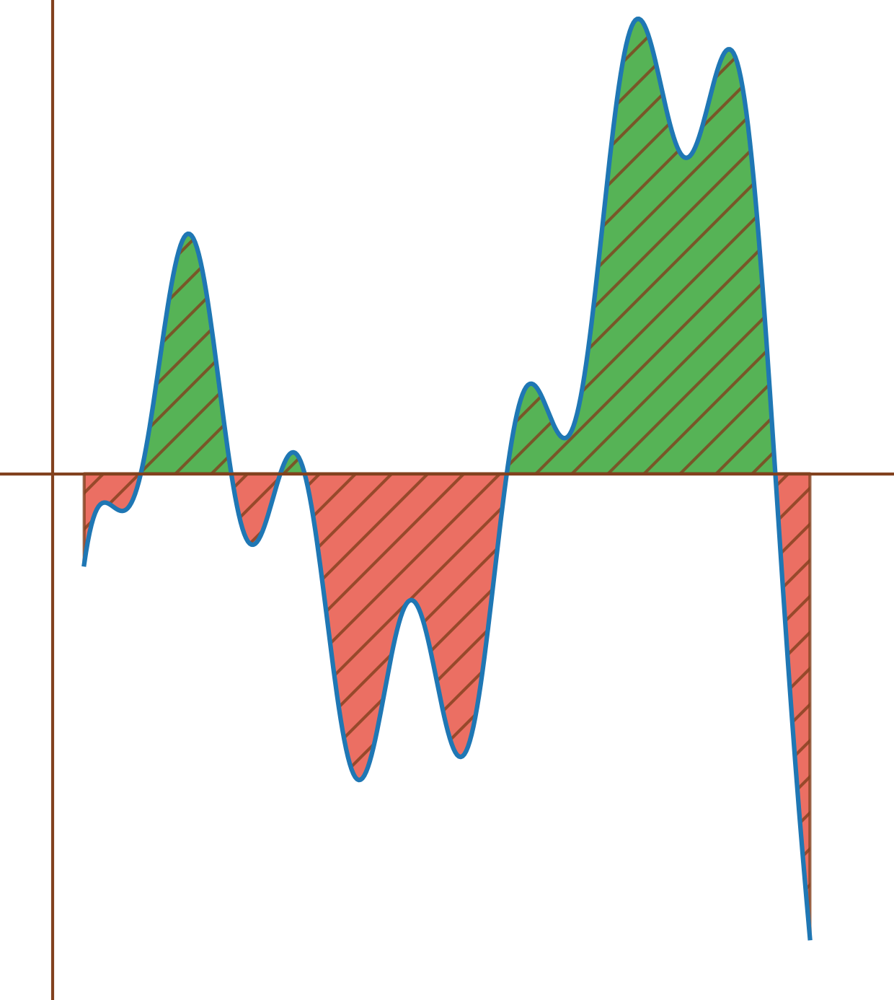
Cette interprétation s’étend aussi à \(f : [a,b[\to \mathbb{R}.\)
Pour \(\begin{array}{lllll} f & : & [1,+\infty[ & \to & \mathbb{R} \\ & & t & \mapsto & \frac{1}{t^2} \end{array} ,\) pour \(x > 1,\)
\(\int_1^x f(t)dt = \left[-\frac{1}{t}\right]_1^x = 1-\frac{1}{x} \xrightarrow[x \to +\infty]{} 1\) donc \(\int_1^{+\infty} \frac{1}{t^2}dt\) converge
avec \(\int_1^{+\infty} \frac{1}{t^2}dt = 1.\)
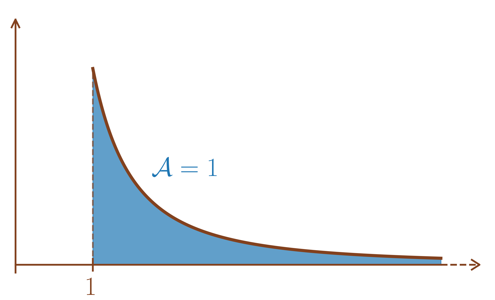
Pour \(\begin{array}{lllll} f & : & [1,+\infty[ & \to & \mathbb{R} \\ & & t & \mapsto & \frac{1}{t} \end{array} ,\) pour \(x > 1,\)
\(\int_1^x f(t)dt = \left[\ln(t)\right]_1^x = \ln(x) \xrightarrow[x \to +\infty]{} +\infty\) donc \(\int_1^{+\infty} \frac{1}{t}dt\) diverge.
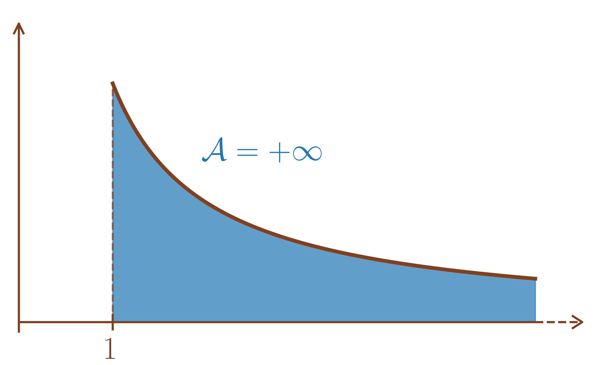
Pour \(\begin{array}{lllll} f & : & \left[0,1\right[ & \to & \mathbb{R} \\ & & t & \mapsto & \frac{1}{\sqrt{1-t^2}} \end{array} ,\) pour \(x \in \left[0,1\right[,\)
\(\int_0^x f(t)dt = \left[\mathop{\mathrm{Arcsin}}(t)\right]_0^x = \mathop{\mathrm{Arcsin}}(x) \xrightarrow[x \to 1]{} \frac{\pi}{2}\) donc \(\int_0^{1} \frac{1}{\sqrt{1-t^2}}dt\) converge
avec \(\int_0^{1} \frac{1}{\sqrt{1-t^2}}dt = \frac{\pi}{2}.\)
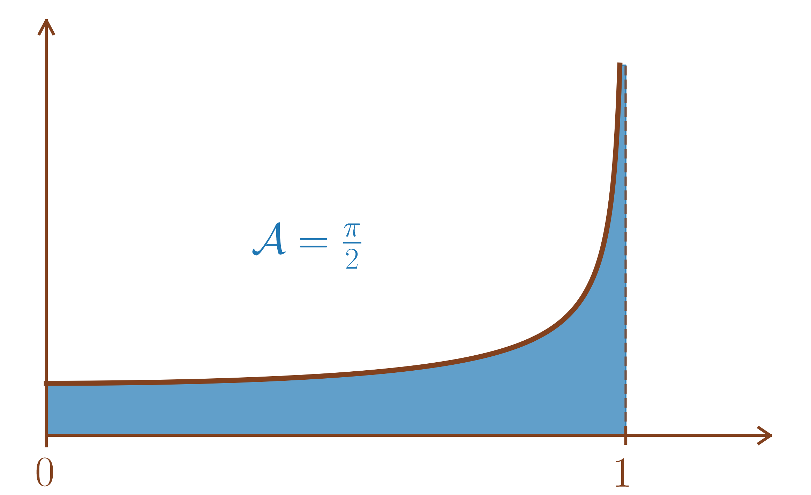
Pour \(\begin{array}{lllll} f & : & [0,+\infty[ & \to & \mathbb{R} \\ & & t & \mapsto & \frac{1}{1+t^2} \end{array} ,\) pour \(x \geq 0,\)
\(\int_0^x f(t)dt = \left[\mathop{\mathrm{Arctan}}(t)\right]_0^x = \mathop{\mathrm{Arctan}}(x) \xrightarrow[x \to +\infty]{} \frac{\pi}{2}\) donc \(\int_0^{+\infty} \frac{1}{1+t^2}dt\) converge
avec \(\int_0^{+\infty} \frac{1}{1+t^2}dt = \frac{\pi}{2}.\)
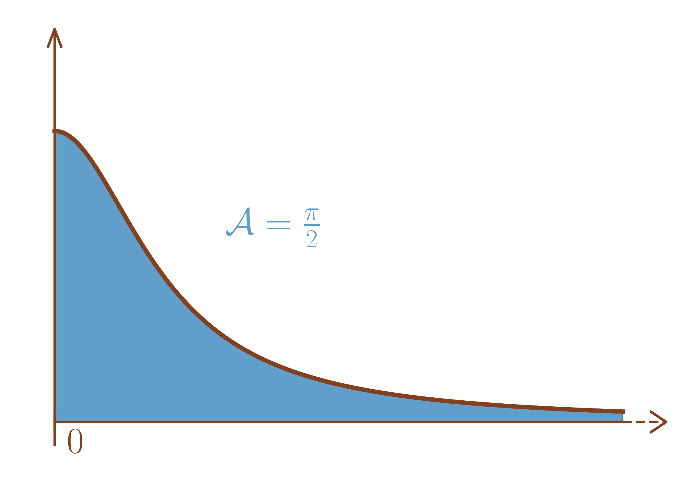
Soit \(\alpha > 0,\) pour \(\begin{array}{lllll} f & : & [0,+\infty[ & \to & \mathbb{R} \\ & & t & \mapsto & e^{-\alpha t} \end{array} ,\) pour \(x \geq 0,\)
\(\int_0^x f(t)dt = \left[\frac{e^{-\alpha t}}{-\alpha}\right]_0^x = \frac{1}{\alpha}-\frac{e^{-\alpha x}}{\alpha} \xrightarrow[x \to +\infty]{} \frac{1}{\alpha}\) donc \(\int_0^{+\infty} e^{-\alpha t}dt\) converge
avec \(\int_0^{+\infty} e^{-\alpha t}dt = \frac{1}{\alpha}.\)
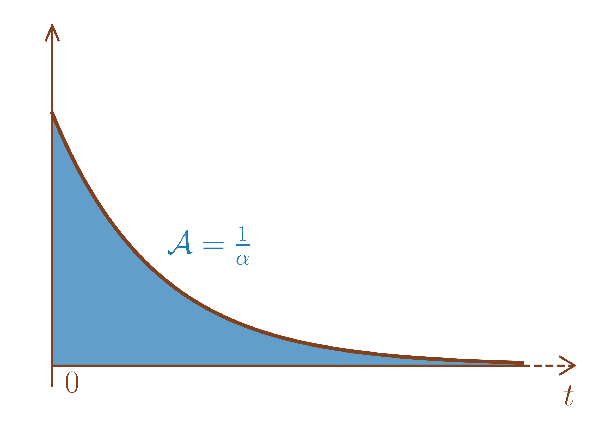
Soit \(\alpha \leq 0,\) pour \(\begin{array}{lllll} f & : & [0,+\infty[ & \to & \mathbb{R} \\ & & t & \mapsto & e^{-\alpha t} \end{array} ,\) pour \(x \geq 0,\)
Si \(\alpha < 0,\)
\(\int_0^x f(t)dt = \left[\frac{e^{-\alpha t}}{-\alpha}\right]_0^x = \frac{1}{\alpha}-\frac{e^{-\alpha x}}{\alpha} \xrightarrow[x \to +\infty]{} +\infty\) donc \(\int_0^{+\infty} e^{-\alpha t}dt\) diverge.
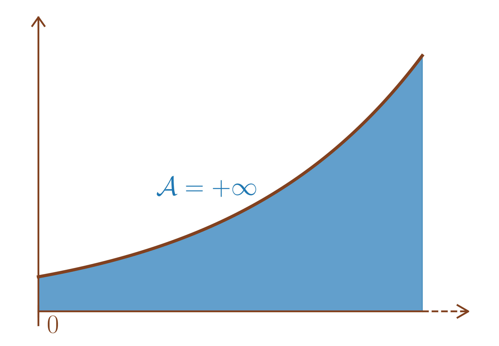
Si \(\alpha = 0,\)
\(\int_0^x f(t)dt = x \xrightarrow[x \to +\infty]{} +\infty\) donc \(\int_0^{+\infty} e^{-\alpha t}dt\) diverge.
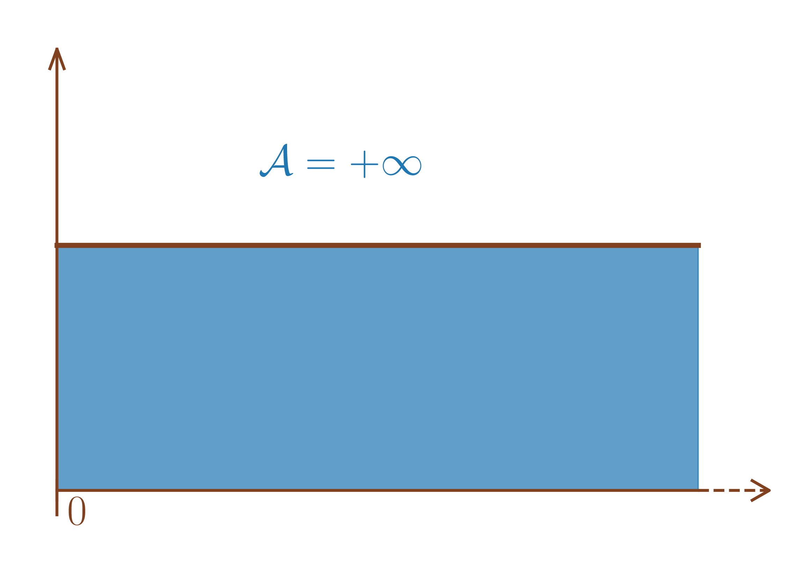
Soient \(f : [a,b[\to E\) continue et \(g\) une primitive de \(f\) sur \([a,b[.\)
Alors, \(\int_a^b f(t)dt\) converge \(\iff\) \(g\) admet une limite finie en \(b.\)
Dans ce cas, \(\int_a^b f(t)dt = \underset{x \to b}{\lim}\text{ }g(x)-g(a),\) que l’on note \(\left[g(x)\right]_a^b.\)
Pour \(x \in [a,b[,\) \(\int_a^x f(t)dt = g(x)-g(a)\) d’où la proposition.
Soit \(f : [a,b[\to E\) de classe \(\mathscr{C}^1.\) Alors, \[f \text{ converge en $b$} \iff \int_a^b f'(t)dt \text{ converge}.\]
\(f\) est une primitve de \(f'\) donc le corollaire est directement donné par la proposition [prop:integrale_CV_primitive_aussi].
Soient \(f : [a,b[\to E\) et \(g : [a,b[\to E\) des fonctions continues par morceaux.
Soient \(\lambda, \mu \in \mathbb{K},\)
\[\left.\begin{array}{ll} \int_a^b f(t)dt & \text{ converge} \\ \int_a^b g(t)dt & \text{ converge} \end{array}\right\} \Longrightarrow \left\{\begin{array}{ll} \int_a^b & \left(\lambda f(t)+\mu g(t)\right)dt \text{ converge} \\ \text{ avec }&\int_a^b \left(\lambda f(t)+\mu g(t)\right)dt \\ & = \lambda\int_a^b f(t)dt+\mu\int_a^b g(t)dt. \end{array}\right.\]
Soit \(\mathscr{B}= (e_1,\ldots,e_n)\) une base de \(E\) telle que pour tout \(t \in [a,b[,\) \(f(t) = f_1(t)e_1+\ldots+f_n(t)e_n\) avec \(f_j : [a,b[\to \mathbb{K}\) pour \(1 \leq j \leq n.\)
Alors, \[\int_a^b f(t)dt \text{ converge } \iff \forall 1 \leq j \leq n, \int_a^b f_j(t)dt \text{ converge.}\] De plus, dans ce cas, \(\int_a^b f(t)dt = \left(\int_a^b f_1(t)dt\right)e_1+\ldots+\left(\int_a^b f_n(t)dt\right)e_n.\)
Soit \(F\) un espace vectoriel de dimension finie et \(u \in \mathscr{L}(E,F).\) Alors, \[\int_a^b f(t)dt \text{ converge } \Longrightarrow \int_a^b u(f(t))dt \text{ converge }\] De plus, dans ce cas, \(\int_a^b u(f(t))dt = u\left(\int_a^b f(t)dt\right).\)
Pour \(x \in [a,b[,\) \(\int_a^x \left(\lambda f(t)+\mu g(t)\right)dt = \lambda\int_a^x f(t)dt+\mu\int_a^x g(t)dt\) donc en passant à la limite quand \(x \xrightarrow{} b,\) \(\int_a^b \left(\lambda f(t)+\mu g(t)\right)dt = \lambda\int_a^b f(t)dt+\mu\int_a^b g(t)dt.\)
Pour tout \(x \in [a,b[,\) \(\int_a^x f(t)dt = \left(\int_a^x f_1(t)dt\right)e_1+\ldots+\left(\int_a^x f_n(t)dt\right)e_n.\) En tant que fonction de \([a,b[\) dans \(E,\) \(x \in [a,b[\mapsto \int_a^x f(t)dt\) converge en \(b\) si et seulement si, pour tout \(1 \leq j \leq n,\) \(x \in [a,b[\mapsto \int_a^x f_j(t)dt\) et en cas de convergence, \(\int_a^b f(t)dt = \left(\int_a^b f_1(t)dt\right)e_1+\ldots+\left(\int_a^b f_n(t)dt\right)e_n.\)
Pour \(x \in [a,b[,\) \(\int_a^x u(f(t))dt = u\left(\int_a^x f(t)dt\right).\)
De plus, comme \(E\) est de dimension finie, \(u\) est continue donc \[\int_a^b f(t)dt \text{ converge } \Longrightarrow \int_a^b u(f(t))dt \text{ converge.}\] et dans ce cas, \(\int_a^b u(f(t))dt = u\left(\int_a^b f(t)dt\right).\)
En particulier, si \(f : [a,b[\to \mathbb{C},\) \((1,i)\) est une base du \(\mathbb{R}\)-espace vectoriel \(\mathbb{C}\) telle que \(f = \mathop{\mathrm{Re}}(f) + i\mathop{\mathrm{Im}}(f).\)
On a donc \(\int_a^b f(t)dt \text{ converge } \iff \int_a^b \mathop{\mathrm{Re}}(f(t))dt \text{ et }\int_a^b \mathop{\mathrm{Im}}(f(t))dt \text{ convergent.}\)
On en déduit donc aussi \[\int_a^b f(t)dt \text{ converge } \iff \int_a^b \overline{f(t)}dt \text{ converge }\] avec en cas de convergence, \(\int_a^b \overline{f(t)}dt=\overline{\int_a^b f(t)dt}.\)
Si \(\int_a^b f(t)dt\) converge et \(\int_a^b g(t)dt\) diverge alors \(\int_a^b \left(f(t)+g(t)\right)dt\) diverge (Sinon, par l’absurde, on aurait \(\int_a^b g(t)dt = \int_a^b \left(g(t)+f(t)-f(t)\right)dt\) qui converge).
Soient \(f : [a,b[\to E\) continue par morceaux et \(c \in ]a,b[.\) Alors, \[\int_a^b f(t)dt \text{ converge } \iff \int_c^b f(t)dt \text{ converge.}\] De plus, dans ce cas, \(\int_a^b f(t)dt = \int_a^c f(t)dt+\int_c^b f(t)dt.\)
Soit \(x \in \left[c,b\right[,\) \(\int_a^x f(t)dt = \int_a^c f(t)dt +\int_c^x f(t)dt\) par la relation de Chasles.
On a donc \(x \mapsto \int_a^x f(t)dt \text{ converge en $b$} \iff x \mapsto \int_c^x f(t)dt \text{ converge en $b.$}\) avec en cas de convergence, \(\int_a^b f(t)dt = \int_a^c f(t)dt+\int_c^b f(t)dt.\)
Soit \(f : [a,b[\to E\) continue par morceaux telle que \(\int_a^b f(t)dt\) converge.
On considère \(\begin{array}{lllll} \psi & : & [a,b[ & \to & E \\ & & x & \mapsto & \int_x^bf(t)dt = \int_{\left[x,b\right[} f(t)dt \end{array} .\)
Alors, \(\psi(x) \xrightarrow[x \to b]{} 0.\)
Par relation de Chasles, pour \(x \in [a,b[,\) \(\int_a^b f(t)dt = \int_a^x f(t)dt+\int_x^b f(t)dt.\)
Donc pour \(x \in [a,b[,\) \(\int_x^b f(t)dt = \int_a^b f(t)dt -\int_a^x f(t)dt \xrightarrow[n \to +\infty]{} 0.\)
Si de plus, \(f\) est continue, la fonction \(\psi\) définie dans la proposition [prop:reste_tend_vers_zeroabof] est de classe \(\mathscr{C}^1\) et sa dérivée est \(-f.\) C’est la primitive de \(-f\) qui tend vers \(0\) en \(b.\)
Soient \(f : [a,b[\to \mathbb{R}^{+},\) à valeurs positives, continue par morceaux et \(\Phi : x \in [a,b[\mapsto \int_a^x f(t)dt.\) Alors,
\(\Phi\) est croissante donc \[\text{ $\int_a^b f(t)dt$ converge $\iff$ $\Phi$ converge en $b$ $\iff$ $\Phi$ est majorée.}\]
En cas de convergence, \(\int_a^b f(t)dt = \underset{x \to b}{\lim}\text{ } \Phi(x) = \sup_{x \in [a,b[} \Phi(x).\)
En cas de divergence, \(\Phi(x) \xrightarrow[x \to b]{} +\infty.\)
Soient \(x \leq y \in [a,b[,\)
\[\Phi(y) = \int_a^y f(t)dt = \int_a^x f(t)dt+\underbrace{\int_x^y f(t)dt}_{\substack{\geq 0 \\ \text{car $f \geq 0$}\\ \text{et $x \leq y$}}} \geq \int_a^x f(t)dt = \Phi(x).\]
Donc \(\Phi\) est croissante et
Soit \(\Phi\) est majorée et \(\Phi(x) \xrightarrow[x \to b]{} \sup_{x \in [a,b[} \Phi(x),\)
Soit \(\Phi\) est non majorée et \(\Phi(x) \xrightarrow[x \to b]{} +\infty.\)
Soit \(f : [a,b[\to \mathbb{R}^{+},\) à valeurs positives, continue par morceaux telle que \(\int_a^b f(t)dt\) converge. Alors,
\(\int_a^b f(t)dt \geq 0,\)
Si \(f\) est continue et \(\int_a^b f(t)dt = 0\) alors \(f = 0.\)
En reconsidérant \(\Phi : x \in [a,b[\mapsto \int_a^x f(t)dt,\) \(\int_a^bf(t)dt = \sup_{x \in [a,b[} \Phi(x) < +\infty\) par la proposition [prop:fonction_positive_integrale_partielle_croissante].
\(\sup_{x \in [a,b[} \Phi(x) \geq \Phi(a) = 0\) donc \(\int_a^bf(t)dt \geq 0.\)
Si \(\int_a^bf(t)dt=0\) et \(f\) est continue alors pour tout \(x \in [a,b[,\) \(0 \leq \Phi(x) \leq \sup_{x \in [a,b[} \Phi(x) = 0.\) Donc \(\int_a^xf(t)dt = 0\) donc \(f = 0\) sur \(\left[a,x\right].\)
Ceci étant vrai pour tout \(x \in [a,b[,\) \(f = 0\) sur \([a,b[.\)
Soit \(f : [a,b[\to \mathbb{R}^{+},\) à valeurs positives, continue par morceaux telle que \(\int_a^b f(t)dt = 0\) alors \(f\) est nulle en tout point où elle est continue.
Soient \(f : [a,b[\to \mathbb{R}\) et \(g : [a,b[\to \mathbb{R}\) continues par morceaux telles que \(\int_a^b f(t)dt\) et \(\int_a^b g(t)dt\) convergent.
Si pour tout \(t \in [a,b[, f(t) \leq g(t)\) alors \(\int_a^b f(t)dt \leq \int_a^b g(t)dt.\)
De plus, si \(f\) et \(g\) sont continues et \(\int_a^b f(t)dt = \int_a^b g(t)dt\) alors \(f=g.\)
Il suffit d’appliquer la proposition [prop:integrale_de_fonction_pos_Est_pos] à \(g-f\) qui est une fonction continue par morceaux à valeurs positives sur \([a,b[.\)
Soient \(f : [a,b[\to \mathbb{R}^{+}\) et \(g : [a,b[\to \mathbb{R}^{+}\) continues par morceaux et à valeurs positives.
On suppose qu’il existe un voisinage de \(b\) sur lequel \(0 \leq f \leq g.\)
(ie il existe \(c \in [a,b[\) tel que pour tout \(c \in \left[c,b\right[,\) \(0 \leq f(t) \leq g(t)\)) \[\begin{aligned} \text{Alors, } & & \int_a^b g(t)dt \text{ converge } \Longrightarrow \int_a^b f(t)dt \text{ converge.} \end{aligned}\] (donc par contraposée, \(\int_a^b f(t)dt \text{ diverge } \Longrightarrow \int_a^b g(t)dt \text{ diverge.}\))
Supposons que \(\int_a^b g(t)dt\) converge.
Pour rappel (proposition [prop:cv_integrale_point_milieu_est_idem]), \[\begin{aligned} & \int_c^b f(t)dt \text{ converge } \iff \int_c^b f(t)dt \text{ converge } \\ \text{ et }& \int_c^b g(t)dt \text{ converge } \iff \int_c^b g(t)dt \text{ converge.} \end{aligned}\]
De plus, par la proposition [prop:fonction_positive_integrale_partielle_croissante], \(\int_c^b f(t)dt\) converge \(\iff\) \(x \mapsto \int_c^x f(t)dt\) est majorée.
Or, pour tout \(x \in \left[c,b\right[,\) \(\int_c^x f(t)dt \leq \int_c^x g(t)dt \leq \int_c^b g(t)dt < +\infty.\)
Donc \(\int_a^b f(t)dt\) converge.
Soit \(\begin{array}{lllll} f & : & [1,+\infty[ & \to & \mathbb{R} \\ & & t & \mapsto & \frac{\sin^2 t}{t^2} \end{array} ,\) pour tout \(t \geq 1,\) \(0 \leq f(t) \leq \frac{1}{t^2}.\)
Or, \(\int_1^{+\infty} \frac{1}{t^2}dt\) converge par le premier exemple de [ex:premiers_Exemples_integrales]. Donc \(\int_1^{+\infty} f(t)dt\) converge
(Intégrales de Riemann en \(+\infty\)) Soit \(\alpha \in \mathbb{R},\) \[\int_1^{+\infty} \frac{dt}{t^\alpha} \text{ converge } \iff \alpha > 1.\]
Soit \(x \geq 1,\)
Si \(\alpha = 1,\) \[\int_1^{x} \frac{dt}{t} = \left[\ln(t)\right]_1^x = \ln(x) \xrightarrow[x \to +\infty]{} +\infty.\]
Si \(\alpha \neq 1,\) \[\int_1^{x} \frac{dt}{t^\alpha} = \frac{1}{1-\alpha}\left[t^{1-\alpha}\right]_1^x = \frac{1}{1-\alpha}\left(x^{1-\alpha}-1\right) \xrightarrow[x \to +\infty]{}\left\{ \begin{array}{ll} +\infty & \mbox{si $1-\alpha > 0 \iff \alpha < 1,$}\\ \frac{1}{\alpha-1} & \mbox{si $1-\alpha < 0 \iff \alpha > 1.$} \end{array} \right.\]
De même, pour tout \(a > 0,\) \[\int_a^{+\infty} \frac{dt}{t^\alpha} \text{ converge } \iff \alpha > 1.\]
(Voir le cours sur les séries)
Soit \(f:[n_0,+\infty[ \to \mathbb{R}\) avec \(n_0 \in \mathbb{N}\)
continue par morceaux sur \([n_0,+\infty[,\)
décroissante au voisinage de \(+\infty,\)
positive au voisinage de \(+\infty.\)
Alors,
\(\sum_{k \geq n_0+1} \left(\int_{k-1}^k f(t)dt - f(k)\right) \text{ converge.}\)
\(\sum_{n \geq n_0} f(n) \text{ converge } \iff \left(\int_{n_0}^{n} f(t)dt\right)_{n \geq n_0} \text{ converge.}\)
On peut réécrire la proposition du rappel [rappel:prop:comparaison_Serie_integrale] du cours sur les séries ainsi :
Soit \(f:[n_0,+\infty[ \to \mathbb{R}\) avec \(n_0 \in \mathbb{N}\)
continue par morceaux sur \([n_0,+\infty[,\)
décroissante au voisinage de \(+\infty,\)
positive au voisinage de \(+\infty.\)
Alors, \[\sum_{n \geq n_0} f(n) \text{ converge } \iff \int_{n_0}^{+\infty} f(t)dt \text{ converge.}\]
Il suffit de prouver \[\left(\int_{n_0}^{n} f(t)dt\right)_{n \geq n_0} \text{ converge} \iff \int_{n_0}^{+\infty} f(t)dt \text{ converge.}\]
Comme \(f\) est positive au voisinage de \(+\infty\), il existe \(n_1 \in \mathbb{N}\) tel que \(f\) est positive sur \(\left[n_1,+\infty\right[\). Supposons \(n_1 =n_0\) et par la proposition [prop:fonction_positive_integrale_partielle_croissante], \[\int_{n_0}^{+\infty} f(t)dt \text{ converge.} \iff \Phi : x \geq n_0 \mapsto \int_{n_0}^{x} f(t)dt \text{ est majorée.}\]
De plus, toujours par la positivité de \(f,\) \(\left(\int_{n_0}^{n} f(t)dt\right)_{n \geq n_0}\) est croissante.
Donc \[\begin{aligned} \int_{n_0}^{+\infty} f(t)dt \text{ converge} & \iff \Phi \text{ est majorée} \\ & \iff \left(\Phi(n)\right)_{n \geq n_0} \text{ est majorée} \\ & \iff \left(\int_{n_0}^{n} f(t)dt\right)_{n \geq n_0} \text{ est majorée} \\ & \iff \left(\int_{n_0}^{n} f(t)dt\right)_{n \geq n_0} \text{ converge.} \end{aligned}\]
Soit \(f: [a,b[\to E\) continue par morceaux.
On dit que « l’intégrale de \(f\) sur \([a,b[\) converge absolument » si \(\int_a^b \left\|f(t)\right\|dt\) converge.
Dans ce cas, on dit que \(f\) est intégrable sur \([a,b[.\)
Cela ne dépend pas de la norme choisie sur \(E\) car toute les normes y sont équivalentes.
Soit \(f: [a,b[\to E\) continue par morceaux alors, \[\int_a^b f(t)dt \text{ converge absolument } \Longrightarrow \int_a^b f(t)dt \text{ converge.}\]
La preuve est similaire à celle des séries.
Commençons par le cas où \(E = \mathbb{R}.\)
On pose \(\begin{array}{lllll} f^+ & : & [a,b[ & \to & \mathbb{R}^{+} \\ & & t & \mapsto & \max(0,f(t)) \end{array}\) et \(\begin{array}{lllll} f^- & : & [a,b[ & \to & \mathbb{R}^{+} \\ & & t & \mapsto & \max(0,-f(t)) \end{array} .\)
On a alors (voir le cours sur les séries), \[f = f^+-f^-, \quad \text{ et }\left|f\right| = f^++f^-\] puis \[0 \leq f^+ \leq \left|f\right|,\quad \text{ et } 0 \leq f^- \leq \left|f\right|.\]
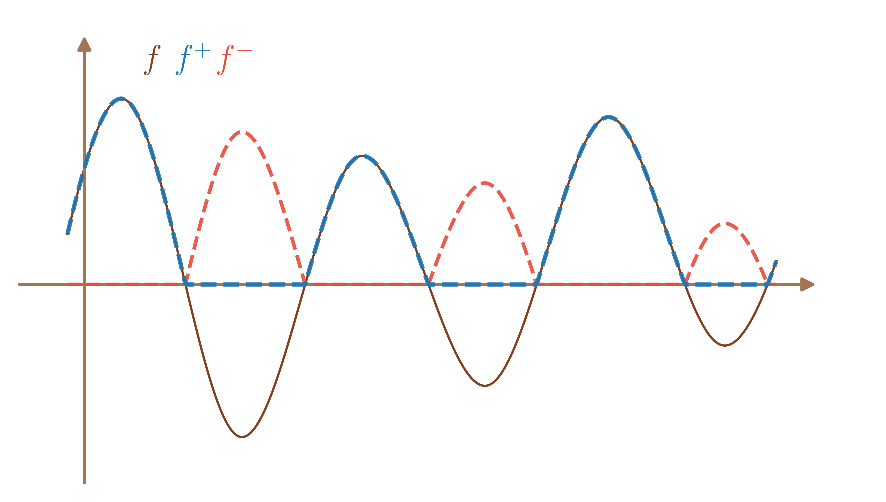
Donc si \(\int_a^b \left|f\right|\) alors \(\int_a^b f^+\) et \(\int_a^b f^-\) convergent puis \(\int_a^b f(t)dt = \int_a^b \left(f^+(t)-f^-(t)\right)dt\) converge.
Revenons à \(E\) quelconque.
On considère \(\mathscr{B}= (e_1,\ldots,e_n)\) une base quelconque du \(\mathbb{R}\)-espace vectoriel \(E\) et la norme \(\left\|\cdot\right\|_{\infty,\mathscr{B}}\) sur \(E\) telle que \(\left\|x\right\|_{\infty,\mathscr{B}} = \max_{1 \leq j \leq p} \left|x_j\right|\) pour \(x = \sum_{j=1}^p x_j e_j \in E.\)
Soient \(f_j : [a,b[\to \mathbb{R}\) pour \(1 \leq j \leq n\) telles que
pour tout \(t \in [a,b[,\) \(f(t) = f_1(t)e_1+\ldots+f_n(t)e_n.\)
Alors, en supposant \(\int_a^b \left\|f(t)\right\|_{\infty,\mathscr{B}}\) converge (peu importe la norme choisie pour la norme absolue), on a pour tout \(1 \leq j \leq n,\) \[0 \leq \left|f_j(t)\right| \leq \left\|f(t)\right\|_{\infty,\mathscr{B}}\] donc \(\int_a^b \left|f_j(t)\right|dt\) converge.
Par le cas précédent, on a donc la convergence de \(\int_a^b f_j(t)dt\) pour tout \(1 \leq j \leq n\) puis la convergence de \(\int_a^b f(t)dt\) par la proposition [prop:premieres_proprietes_integrale].
Pour tout \(t \geq 1,\) \(\left|\frac{\sin(\ln(t))}{t^2}\right| \leq \frac{1}{t^2}\) donc \(\int_{1}^{+\infty}\frac{\sin(\ln(t))}{t^2}dt\) converge absolument donc converge.
La réciproque est fausse (voir l’exercice [exoc:semi_CV_sin_sur_talpha]).
Soit \(f: [a,b[\to E\) continue par morceaux tel que \(\int_a^bf(t)dt\) converge et \(\int_a^b\left\|f(t)\right\|dt\) ne converge pas, on dit que \(\int_a^bf(t)dt\) est semi-convergente.
Soit \(\alpha > 0.\)
Montrer que pour \(\alpha > 1,\) \(\int_1^{+\infty} \frac{\sin t}{t^\alpha}dt\) est absolument convergente.
Montrer que pour \(0 < \alpha \leq 1,\) \(\int_1^{+\infty} \frac{\sin t}{t^\alpha}dt\) est semi-convergente.
Si \(\alpha > 1,\)
Pour tout \(t \geq 1,\) \(0 \leq \left| \frac{\sin t}{t^\alpha}\right| \leq \frac{1}{t^\alpha}.\)
Or, \(\int_1^{+\infty}\frac{dt}{t^\alpha}\) est une intégrale de Riemann en \(+\infty\) avec \(\alpha >1\) donc convergente.
On en déduit que \(\int_1^{+\infty} \frac{\sin t}{t^\alpha}dt\) est absolument convergente.
Si \(0 < \alpha \leq 1,\)
Commençons par montrer que \(\int_1^{+\infty} \frac{\sin t}{t^\alpha}dt\) est convergente.
Soit \(x \geq 1,\)
par intégration par parties avec \(\left\{ \begin{array}{ll} u(t) & = -\cos(t)\\ v(t) & = \frac{1}{t^\alpha} = t^{-\alpha} \end{array} \right. \Longrightarrow \left\{ \begin{array}{ll} u'(t) & = \sin(t)\\ v'(t) & = -\alpha t^{-\alpha-1} = -\frac{\alpha}{t^{\alpha+1}} \end{array} \right.,\) on a \[\begin{aligned} \int_1^{x} \frac{\sin t}{t^\alpha}dt & = \left[-\frac{\cos(t)}{t^\alpha}\right]_1^x -\alpha\int_1^x \frac{\cos(t)}{t^{\alpha+1}}dt \\ & = -\frac{\cos(x)}{x^\alpha}+\cos(1)-\alpha\int_1^x \frac{\cos(t)}{t^{\alpha+1}}dt. \end{aligned}\]
Or, \(\left|\frac{\cos(x)}{x^\alpha}\right| \leq \frac{1}{x^\alpha} \xrightarrow[x \to +\infty]{} 0\) car \(\alpha > 0.\)
De plus, pour tout \(t \geq 1,\) \(0 \leq \left| \frac{\cos t}{t^{\alpha+1}}\right| \leq \frac{1}{t^{\alpha+1}}\) et \(\int_1^{+\infty}\frac{dt}{t^{\alpha+1}}\) est une intégrale de Riemann en \(+\infty\) avec \(\alpha +1>1\) donc \(x \geq 1 \mapsto \alpha\int_1^x \frac{\cos(t)}{t^{\alpha+1}}dt\) converge en \(+\infty.\)
On a donc \(\int_1^{+\infty} \frac{\sin t}{t^\alpha}dt\) qui est convergente avec \(\int_1^{+\infty} \frac{\sin t}{t^\alpha}dt = \cos(1) -\alpha \int_1^{+\infty}\frac{\cos(t)dt}{t^{\alpha+1}}\)
Montrons maintenant que \(\int_1^{+\infty} \frac{\sin t}{t^\alpha}dt\) ne converge pas absolument.
Pour \(t \in \mathbb{R},\) \(\left|\sin(t+\pi)\right| = \left|-\sin(t)\right| = \left|\sin(t)\right|\) donc \(\left|\sin\right|\) est \(\pi\)-périodique.
De plus, pour \(n \in \mathbb{N}^{\star},\) on définit \(\left(u_n\right)\) tel que \(u_n = \int_{n\pi}^{(n+1)\pi} \frac{\left|\sin t\right|}{t^\alpha}dt\). On a alors \[\begin{aligned} u_n & = \int_{n\pi}^{(n+1)\pi} \frac{\left|\sin t\right|}{t^\alpha}dt \\ & \geq \frac{1}{\left((n+1)\pi\right)^\alpha}\int_{n\pi}^{(n+1)\pi}\left|\sin t\right|dt \\ & \underbrace{=}_{\substack{\text{car $\sin$ est}\\ \text{$\pi$-périodique}}} \frac{1}{\left(n+1\right)^\alpha\pi^\alpha}\int_{0}^{\pi}\left|\sin t\right|dt \\ & = \frac{1}{\left(n+1\right)^\alpha\pi^\alpha}\int_{0}^{\pi}{\sin t}dt \\ & = \frac{1}{\left(n+1\right)^\alpha\pi^\alpha}\left[-\cos(t)\right]_0^\pi \\ & = \frac{2}{\left(n+1\right)^\alpha\pi^\alpha}. \end{aligned}\]
On en déduit que pour \(N \in \mathbb{N}^{\star}\) et \(x \geq N\pi,\) \[\begin{aligned} \int_1^x \frac{\left|\sin t\right|}{t^\alpha}dt & \geq \int_1^{N\pi} \frac{\left|\sin t\right|}{t^\alpha}dt \\ & = \sum_{n=1}^{N-1} \int_{n\pi}^{(n+1)\pi} \frac{\left|\sin t\right|}{t^\alpha}dt \\ & = \sum_{n=1}^{N-1} u_n. \end{aligned}\]
Or, \(u_n \sim \frac{2}{\pi^\alpha n^\alpha}\) avec \(\alpha < 1\) donc \(\sum_{n \geq 1}u_n\) est divergente avec \(\sum_{n=1}^{N-1} u_n \xrightarrow[N \to +\infty]{} +\infty.\)
On a donc aussi \(\int_1^x \frac{\left|\sin t\right|}{t^\alpha}dt \xrightarrow[x \to +\infty]{} +\infty.\)
Soient \(f : [a,b[\to E\) continue par morceaux et \(g : [a,b[\to F\) continue par morceaux avec \((F,\left\|\cdot\right\|_F)\) un \(\mathbb{K}\)-espace vectoriel normé de dimension finie.
Si \(f(t) =\underset{t\to b}{O} \left(g(t)\right)\) alors \[\int_a^b g(t)dt \text{ converge absolument} \Longrightarrow \int_a^b f(t)dt \text{ converge absolument}.\]
Si \(f(t) =\underset{t\to b}{o} \left(g(t)\right)\) alors \[\int_a^b g(t)dt \text{ converge absolument } \Longrightarrow \int_a^b f(t)dt \text{ converge absolument}.\]
Si \(E = F\) et \({f(t)} \underset{t\to b}{\sim}{g(t)}\) alors \[\int_a^b g(t)dt \text{ converge absolument } \iff \int_a^b f(t)dt \text{ converge absolument}.\]
Si \(f(t) =\underset{t\to b}{O} \left(g(t)\right)\) alors il existe \(M \in \mathbb{R}^{+}\) et \(c \in [a,b[\) tels que \[\text{pour tout $t \in \left[c,b\right[, 0 \leq \left\|f(t)\right\| \leq M\left\|g(t)\right\|_F.$}\]
Donc par la proposition [prop:premiere_comparaison_int_positives], \[\begin{aligned} & \int_a^b \left\|g(t)\right\|_Fdt \text{ converge } \Longrightarrow \int_a^b \left\|f(t)\right\|dt \text{ converge} \\ \text{ ie }& \int_a^b g(t)dt \text{ converge absolument} \Longrightarrow \int_a^b f(t)dt \text{ converge absolument}. \end{aligned}\]
Si \(f(t) =\underset{t\to b}{o} \left(g(t)\right)\) alors \(f(t) =\underset{t\to b}{O} \left(g(t)\right)\) donc par le point précédent, \[\int_a^b g(t)dt \text{ converge absolument } \Longrightarrow \int_a^b f(t)dt \text{ converge absolument}.\]
Si \({f(t)} \underset{t\to b}{\sim}{g(t)}\) alors \(f(t) =\underset{t\to b}{O} \left(g(t)\right)\) et \(g(t) =\underset{t\to b}{O} \left(f(t)\right)\) donc par le premier point, \[\begin{aligned} & \int_a^b g(t)dt \text{ converge absolument} \Longrightarrow \int_a^b f(t)dt \text{ converge absolument} \\ \text{ et }& \int_a^b f(t)dt \text{ converge absolument} \Longrightarrow \int_a^b g(t)dt \text{ converge absolument} \\ \text{ ie }& \int_a^b g(t)dt \text{ converge absolument } \iff \int_a^b f(t)dt \text{ converge absolument}. \end{aligned}\]
Considérons \(f : t \geq 0 \mapsto \sin\left(t^2\right) t^5 e^{-t}.\)
Alors,
\(\sin\left(t^2\right) = \underset{t\to +\infty}{O}\left(1\right),\)
\(t^{5}e^{-t} = \underset{t\to +\infty}{o}\left(\frac{1}{t^2}\right)\) par croissances comparées.
Donc \(f(t) = \underset{t\to +\infty}{o}\left(\frac{1}{t^2}\right).\) Or, \(\int_{\underline{1}}^{+\infty} \frac{dt}{t^2}\) converge absolument (\(2 > 1\)) donc \(\int_{\underline{1}}^{+\infty} f(t)dt\) converge absolument puis \(\int_0^{+\infty}f(t)dt\) converge absolument.
Considérons \(g : t \geq 1 \mapsto \frac{\sin\left(\frac{1}{\sqrt{t}}\right)}{t}.\)
On a \(\sin\left(\frac{1}{\sqrt{t}}\right) \underset{t\to +\infty}{\sim} \frac{1}{\sqrt{t}}\) donc \(g(t) \underset{t\to +\infty}{\sim} \frac{1}{t\sqrt{t}} = \frac{1}{t^{\tfrac{3}{2}}}.\)
On en déduit donc que \(\int_{1}^{+\infty} g(t)dt\) converge absolument.
La proposition [prop:comparaison_asymptotique_pour_CV_integrales] est fausse si on remplace la convergence absolue par le convergence.
\(\frac{\cos^2 t}{t} = \underset{t\to +\infty}{o} \left(\frac{\cos t}{\sqrt{t}}\right)\) car pour \(t > 0,\) \(\frac{\frac{\cos^2 t}{t}}{\frac{\cos t}{\sqrt{t}}} = \frac{\cos t}{\sqrt{t}} \xrightarrow[t \to +\infty]{} 0.\)
De plus, \(\int_1^{+\infty} \frac{\cos t}{\sqrt{t}}dt\) converge (voir l’exercice [exoc:semi_CV_sin_sur_talpha]).
Cependant, montrons que \(\int_1^{+\infty} \frac{\cos^2 t}{t}dt\) diverge.
Pour \(t \geq 1,\) \(\frac{\cos^2 t}{t} = \frac{\cos(2t) +1}{2t} = \frac{\cos(2t)}{2t} + \frac{1}{2t}.\)
Or, \(\int_1^{+\infty} \frac{\cos(2t)}{2t}dt\) converge voir l’exercice [exoc:semi_CV_sin_sur_talpha]) et \(\int_1^{+\infty} \frac{1}{2t}dt\) diverge donc par le second point de la remarque [rem:somme_CV_integrales], on a en effet \(\int_1^{+\infty} \frac{\cos^2 t}{t}dt\) qui diverge.
Soient \(f : [a,b[\to \mathbb{R}\) et \(g : [a,b[\to E\) continues par morceaux et telles que \({f(t)} \underset{t\to b}{\sim}{g(t)}.\)
Si \(g\) est positive au voisinage de \(b\) alors \[\int_a^b g(t)dt \text{ converge} \iff \int_a^b f(t)dt \text{ converge}\]
Comme \({f(t)} \underset{t\to b}{\sim}{g(t)},\) \(f\) est aussi positive au voisinage de \(b\) donc il existe \(c \in [a,b[\) tel que pour tout \(c \in \left[c,b\right[,\) \(f(t) \geq 0\) et \(g(t) \geq 0.\)
On a donc \[\begin{aligned} \int_a^b g(t)dt \text{ converge absolument} & \iff \int_a^b \left|g(t)\right|dt \text{ converge} \\ & \iff \int_c^b \left|g(t)\right|dt \text{ converge} \\ & \iff \int_c^b {g(t)}dt \text{ converge (car $g$ est positive sur $\left[c,b\right[$)} \\ & \iff \int_a^b g(t)dt \text{ converge}. \end{aligned}\] et de même, \(\int_a^b f(t)dt \text{ converge absolument} \iff \int_a^b {f(t)}dt \text{ converge.}\)
Donc, \({f(t)} \underset{t\to b}{\sim}{g(t)}\) donne par la proposition [prop:comparaison_asymptotique_pour_CV_integrales], \[\begin{aligned} \int_a^b g(t)dt \text{ converge} & \iff \int_a^b g(t)dt \text{ converge absolument} \\ & \iff \int_a^b f(t)dt \text{ converge absolument}\\ & \iff \int_a^b f(t)dt \text{ converge.} \end{aligned}\]
\(\frac{\sin\left(\frac{1}{\sqrt{t}}\right)}{\sqrt{t}} \underset{t\to +\infty}{\sim} \frac{1}{t}\) donc \(\int_1^{+\infty} \frac{\sin\left(\frac{1}{\sqrt{t}}\right)}{\sqrt{t}}dt\) diverge.
La proposition [prop:equiv_positif_equiv_CV_integrales] est fausse sans hypothèse de signe.
\(\frac{\cos t}{\sqrt{t}}+\frac{\cos^2 t}{t} = \frac{\cos t}{\sqrt{t}}+\underset{t\to +\infty}{o}\left(\frac{\cos t}{\sqrt{t}}\right) \underset{t\to +\infty}{\sim} \frac{\cos t}{\sqrt{t}}\) (voir l’exemple [ex:contrex_grandO_CV_non_CVA]).
Or, \(\int_1^{+\infty} \frac{\cos t}{\sqrt{t}}dt\) converge (voir l’exercice [exoc:semi_CV_sin_sur_talpha]) mais \(\int_1^{+\infty} \frac{\cos^2 t}{t}dt\) diverge (voir l’exemple [ex:contrex_grandO_CV_non_CVA]) donc par le second point de la remarque [rem:somme_CV_integrales], \(\int_1^{+\infty}\frac{\cos t}{\sqrt{t}}+\frac{\cos^2 t}{t}dt\) diverge.
(Intégrales de Bertrand en \(+\infty\)) Soient \(\alpha, \beta \in \mathbb{R},\) montrer que \[\int_2^{+\infty} \frac{dt}{t^\alpha \left(\ln t\right)^\beta} \text{ converge } \iff \left\{\begin{array}{ll} & \alpha > 1 \\ \text{ ou }& \alpha = 1 \text{ et }\beta >1. \end{array}\right.\]
Si \(\alpha > 1,\) soit \(\gamma \in \left]1,\alpha\right[,\) \(\frac{1}{t^\alpha \left(\ln t\right)^\beta} = \underset{t\to +\infty}{o}\left( \frac{1}{t^\gamma}\right)\) par croissances comparées.
Or, \(\gamma > 1\) donc \(\int_2^{+\infty} \frac{1}{t^\gamma}\) converge absolument en tant qu’intégrale de Riemann puis \(\int_2^{+\infty} \frac{dt}{t^\alpha \left(\ln t\right)^\beta}\) converge (absolument, mais c’est inutile de préciser car la fonction est de signe constant).
Si \(\alpha < 1,\) \(\frac{1}{t} = \underset{t\to +\infty}{o}\left( \frac{1}{t^\alpha \left(\ln t\right)^\beta}\right)\) par croissances comparées.
Or, \(\int_2^{+\infty} \frac{1}{t}\) diverge en tant qu’intégrale de Riemann puis \(\int_2^{+\infty} \frac{dt}{t^\alpha \left(\ln t\right)^\beta}\) diverge (ne converge pas absolument donc diverge car la fonction est de signe constant).
Si \(\alpha = 1,\) soit \(x \geq 2,\) par le changement de variable \(u = \ln(t) \Longrightarrow du = \frac{dt}{t},\) on a \[\int_2^{x} \frac{dt}{t \left(\ln t\right)^\beta} = \int_{\ln(2)}^{\ln(x)} \frac{du}{u^\beta}.\]
Si \(\beta = 1,\) \[\int_2^{x} \frac{dt}{t \left(\ln t\right)^\beta} = \left[\ln(u)\right]_{\ln(2)}^{\ln(x)} = \ln(\ln(x))-\ln(\ln(2)) \xrightarrow[x \to +\infty]{}+\infty.\]
Si \(\beta \neq 1,\) \[\begin{aligned} \int_2^{x} \frac{dt}{t \left(\ln t\right)^\beta} & = \frac{1}{{1-\beta}}\left[u^{1-\beta}\right]_{\ln(2)}^{\ln(x)}\\ & = \frac{1}{1-\beta}\left(\ln(x)^{1-\beta}-\ln(2)^{1-\beta}\right) \\ & \xrightarrow[x \to +\infty]{} \left\{\begin{array}{ll} +\infty & \mbox{ si $1-\beta > 0 \iff \beta < 1$} \\ \frac{1}{\beta-1}\ln(2)^{1-\beta} & \mbox{ si $1-\beta < 0 \iff \beta > 1$} \\ \end{array}\right. \end{aligned}\]
Soit \(f : [a,b[\to E\) intégrable. Alors, \[\left\|\int_a^b f(t)dt\right\| \leq \int_a^b \left\|f(t)\right\|dt.\]
Soit \(x \in [a,b[,\) \[\left\|\int_a^x f(t)dt\right\| \leq \int_a^x \left\|f(t)\right\|dt\] donc en passant à la limite quand \(x \xrightarrow{} b,\) \[\left\|\int_a^b f(t)dt\right\| \leq \int_a^b \left\|f(t)\right\|dt.\]
Soient \(f : [a,b[\to \mathbb{R}\) continue par morceaux
et \(g : [a,b[\to \mathbb{R}^{+}\) continue par morceaux à valeurs réelles positives.
Si \(\int_a^b g(t)dt\) converge,
Si \(f(t) =\underset{t\to b}{O} \left(g(t)\right)\) alors \(\int_x^bf(t)dt =\underset{x\to b}{O} \left(\int_x^bg(t)dt\right).\)
Si \(f(t) =\underset{t\to b}{o} \left(g(t)\right)\) alors \(\int_x^bf(t)dt =\underset{x\to b}{o} \left(\int_x^bg(t)dt\right).\)
Si \(E = \mathbb{R}\) et \({f(t)} \underset{t\to b}{\sim} {g(t)}\) alors \({\int_x^bf(t)dt} \underset{x\to b}{\sim} {\int_x^bg(t)dt}.\)
Si \(\int_a^b g(t)dt\) diverge,
Si \(f(t) =\underset{t\to b}{O} \left(g(t)\right)\) alors \(\int_a^xf(t)dt =\underset{x\to b}{O} \left(\int_a^xg(t)dt\right).\)
Si \(f(t) =\underset{t\to b}{o} \left(g(t)\right)\) alors \(\int_a^xf(t)dt =\underset{x\to b}{o} \left(\int_a^xg(t)dt\right).\)
Si \(E = \mathbb{R}\) et \({f(t)} \underset{t\to b}{\sim} {g(t)}\) alors \({\int_a^xf(t)dt} \underset{x\to b}{\sim} {\int_a^xg(t)dt}.\)
Si \(\int_a^b g(t)dt\) converge,
Si \(f(t) =\underset{t\to b}{O} \left(g(t)\right)\) alors il existe \(M \in \mathbb{R}^{+}\) et \(c \in [a,b[\) tels que \[\text{ pour tout $t \in \left[c,b\right[, \left\|f(t)\right\| \leq M\left|g(t)\right| = Mg(t).$ }\] Donc, pour tout \(x \in \left[c,b\right[,\) \[\int_x^b\left\|f(t)\right\|dt \leq M\int_x^bg(t)dt.\] On a donc bien \(\int_x^bf(t)dt =\underset{x\to b}{O} \left(\int_x^bg(t)dt\right).\)
Si \(f(t) =\underset{t\to b}{o} \left(g(t)\right),\) soit \(\varepsilon > 0,\) alors il existe \(c \in [a,b[\) tel que \[\text{ pour tout $t \in \left[c,b\right[, \left\|f(t)\right\| \leq \varepsilon\left|g(t)\right| = \varepsilon g(t).$ }\] Donc, pour tout \(x \in \left[c,b\right[,\) \[\int_x^b\left\|f(t)\right\|dt \leq \varepsilon\int_x^bg(t)dt.\] On a donc bien \(\int_x^bf(t)dt =\underset{x\to b}{o} \left(\int_x^bg(t)dt\right).\)
Si \(E = \mathbb{R}\) et \({f(t)} \underset{t\to b}{\sim} {g(t)}\) alors \({f(t)} -g(t) =\underset{t\to b}{o}\left(g(t)\right)\) donc par ce qui précède, \(\int_x^b\left(f(t)-g(t)\right)dt=\int_x^b{f(t)}dt -\int_x^bg(t)dt =\underset{x\to b}{o}\left(\int_x^bg(t)dt\right)\)
ie \({\int_x^bf(t)dt} \underset{x\to b}{\sim} {\int_x^bg(t)dt}.\)
Si \(\int_a^b g(t)dt\) diverge, alors comme \(g\) est positive, \(\int_a^x g(t)dt \xrightarrow[x \to b]{} +\infty.\)
Si \(f(t) =\underset{t\to b}{O} \left(g(t)\right)\) alors il existe \(M \in \mathbb{R}^{+}\) et \(c \in [a,b[\) tels que \[\text{ pour tout $t \in \left[c,b\right[, \left\|f(t)\right\| \leq M\left|g(t)\right| = Mg(t).$ }\] Donc, pour tout \(x \in \left[c,b\right[,\) \[\begin{aligned} \int_a^x\left\|f(t)\right\|dt & =\int_a^c\left\|f(t)\right\|dt+\int_c^x\left\|f(t)\right\|dt \\ & \leq \int_a^c\left\|f(t)\right\|dt+M\int_c^xg(t)dt \\ & \leq \int_a^c\left\|f(t)\right\|dt+M\int_a^xg(t)dt \text{ car $g$ est positive.} \end{aligned}\] Or, \(\int_a^x g(t)dt \xrightarrow[x \to b]{} +\infty\) donc \(\frac{\int_a^c\left\|f(t)\right\|dt}{\int_a^x{g(t)}dt}\xrightarrow[x \to b]{} 0.\) On en déduit alors qu’il existe \(c' \in \left[c,b\right[\) tel que pour tout \(x \in \left[c',b\right[,\) \[\frac{\int_a^c\left\|f(t)\right\|dt}{\int_a^x{g(t)}dt} \leq M \Longrightarrow \int_a^c\left\|f(t)\right\|dt\leq M\int_a^x{g(t)}dt.\]
On a donc pour tout \(x \in \left[c',b\right[\) \[\int_a^x\left\|f(t)\right\|dt\leq M\int_a^x{g(t)}dt+M\int_a^x{g(t)}dt=2M\int_a^xg(t)dt.\]
ie \(\int_a^xf(t)dt =\underset{x\to b}{O} \left(\int_a^xg(t)dt\right).\)
Si \(f(t) =\underset{t\to b}{o} \left(g(t)\right),\) soit \(\varepsilon > 0,\) alors il existe \(c \in [a,b[\) tel que \[\text{ pour tout $t \in \left[c,b\right[, \left\|f(t)\right\| \leq \varepsilon\left|g(t)\right| = \varepsilon g(t).$ }\] Donc, pour tout \(x \in \left[c,b\right[,\) \[\begin{aligned} \int_a^x\left\|f(t)\right\|dt & =\int_a^c\left\|f(t)\right\|dt+\int_c^x\left\|f(t)\right\|dt \\ & \leq \int_a^c\left\|f(t)\right\|dt+\varepsilon\int_c^xg(t)dt \\ & \leq \int_a^c\left\|f(t)\right\|dt+\varepsilon\int_a^xg(t)dt \text{ car $g$ est positive.} \end{aligned}\] Or, \(\int_a^x g(t)dt \xrightarrow[x \to b]{} +\infty\) donc \(\frac{\int_a^c\left\|f(t)\right\|dt}{\int_a^x{g(t)}dt}\xrightarrow[x \to b]{} 0.\) On en déduit alors qu’il existe \(c' \in \left[c,b\right[\) tel que pour tout \(x \in \left[c',b\right[,\) \[\frac{\int_a^c\left\|f(t)\right\|dt}{\int_a^x{g(t)}dt} \leq \varepsilon \Longrightarrow \int_a^c\left\|f(t)\right\|dt\leq \varepsilon\int_a^x{g(t)}dt.\]
On a donc pour tout \(x \in \left[c',b\right[\) \[\int_a^x\left\|f(t)\right\|dt\leq \varepsilon\int_a^x{g(t)}dt+\varepsilon\int_a^x{g(t)}dt=2\varepsilon\int_a^xg(t)dt.\]
ie \(\int_a^xf(t)dt =\underset{x\to b}{o} \left(\int_a^xg(t)dt\right).\)
Si \(E = \mathbb{R}\) et \({f(t)} \underset{t\to b}{\sim} {g(t)}\) alors \({f(t)} -g(t) =\underset{t\to b}{o}\left(g(t)\right)\) donc par ce qui précède, \(\int_a^x\left(f(t)-g(t)\right)dt=\int_a^x{f(t)}dt -\int_a^xg(t)dt =\underset{x\to b}{o}\left(\int_a^xg(t)dt\right)\)
ie \({\int_a^xf(t)dt} \underset{x\to b}{\sim} {\int_a^xg(t)dt}.\)
Soit \(f : \mathbb{R}^{+}\to \mathbb{R}\) continue par morceaux telle que \(f(t) \underset{t\to +\infty}{\sim} \frac{1}{t}.\)
Alors, \(\int_0^{+\infty} f(t)dt\) diverge mais on a aussi par intégration des relations de comparaisons, pour \(x \geq 1,\) \(\int_1^x f(t)dt \underset{x\to +\infty}{\sim} \int_1^x \frac{dt}{t} = \ln(x).\)
Donc \(\int_1^x f(t)dt = \ln(x) + \underset{x\to +\infty}{o} \left(\ln(x)\right)\) puis
\(\int_0^x f(t)dt = \underbrace{\int_0^1 f(t)dt}_{= \underset{x\to +\infty}{o} \left(\ln(x)\right)} +\int_1^x f(t)dt= \ln(x) + \underset{x\to +\infty}{o} \left(\ln(x)\right) \underset{x\to +\infty}{\sim} \ln(x).\)
Soit \(f : \mathbb{R}^{+}\to \mathbb{R}\) de classe \(\mathscr{C}^1\) telle que \(f'(t) \underset{t\to +\infty}{\sim} \frac{1}{t^2}.\)
Alors, \(\int_1^{+\infty} f'(t)dt\) converge donc \(f\) converge en \(+\infty\) (par le corollaire [cor:CV_intergrale_derivee_vaut_pour_CV]) vers une limite que l’on note \(\ell.\)
De plus, par intégration des relations de comparaison, \[\int_x^{+\infty} f'(t)dt = \ell - f(x) \underset{x\to +\infty}{\sim} \int_x^{+\infty} \frac{dt}{t^2} = \frac{1}{x}.\]
Donc \(f(x) = \ell -\frac{1}{x}+\underset{x\to +\infty}{o}\left(\frac{1}{x}\right).\)
(Césaro intégral) Soient \(f : [a,b[\to E\) continue par morceaux telle que \(f(x) \xrightarrow[x \to b]{} \ell \in E\) et \(g : [a,b[\to \mathbb{R}^{+}\) continue par morceaux à valeurs réelles positives telle que \(\int_a^b g(t)dt\) diverge. Alors, \[\frac{\int_a^x g(t)f(t)dt}{\int_a^x g(t)dt} \xrightarrow[x \to b]{} \ell.\]
En particulier, en considérant \(b = +\infty\) et \(g : t \in \left[a,+\infty\right[ \mapsto 1,\) on a \[\frac{1}{x-a}\int_a^x f(t)dt \xrightarrow[x \to +\infty]{} \ell.\]
Pour \(t \in [a,b[,\) \(f(t) = \ell +\underset{t\to b}{o}\left(1\right)\) donc \(f(t)g(t) = \ell g(t) +\underset{t\to b}{o}\left(g(t)\right).\)
Or, \(\int_a^b g(t)dt\) diverge donc par intégration des relations de comparaisons, \[\int_a^xf(t)g(t)dt = \ell \int_a^xg(t)dt +\underset{x\to b}{o}\left(\int_a^xg(t)dt\right) \Longrightarrow \frac{\int_a^x g(t)f(t)dt}{\int_a^x g(t)dt} = \ell +\underset{x\to b}{o}\left(1\right)\] ie \[\frac{\int_a^x g(t)f(t)dt}{\int_a^x g(t)dt} \xrightarrow[x \to b]{} \ell.\]
On remarque de nombreuses similitudes entre séries et intégrales mais remarquons un différence notable.
Tandis que \(\sum u_n\) converge \(\Longrightarrow\) \(u_n \xrightarrow[n \to +\infty]{} 0,\) on a \(\int_a^b f(t)dt\) converge \(\centernot{\Longrightarrow}\) \(f(t) \xrightarrow[t \to b]{} 0.\)
On considère \(f: \mathbb{R}^{+}\to \mathbb{R}\) comme sur le dessin
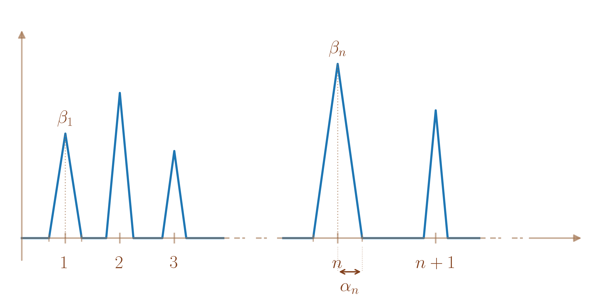
ie telle que pour \(x \in \mathbb{R}^{+},\)
\(f(x) = \left\{ \begin{array}{ll} \beta_n & \mbox{ si $x = n \in \mathbb{N}^{\star}$} \\ 0 & \mbox{ si $x = n-\alpha_n$ avec $n \in \mathbb{N}^{\star}$} \\ 0 & \mbox{ si $x = n+\alpha_n$ avec $n \in \mathbb{N}^{\star}$} \\ \text{affine sinon.}& \end{array} \right.\)
où \(\left(\alpha_n\right)_{n \geq 1}\) est une suite de \(\left]0,\frac{1}{2}\right[\) et \(\left(\beta_n\right)_{n \geq 1}\) est une suite de réels strictement positifs.
Alors, \(f\) est continue et positive.
De plus, en notant \(\Phi : x \in \mathbb{R}^{+}\mapsto \int_0^x f(t)dt,\) pour tout \(n \in \mathbb{N}^{\star},\) \(\Phi(n+\alpha_n) = \sum_{k=1}^n \alpha_k \beta_k\) comme somme d’aires de triangles.
Enfin, \(\Phi\) est majorée \(\iff\) \(\left(\Phi(n+\alpha_n)\right)_{n \geq 0}\) est majorée.
Donc \(\int_0^{+\infty}f(t)dt\) converge \(\iff\) \(\sum_{n \geq 0} \alpha_n \beta_n\) converge.
En prenant \(\alpha_n = \frac{1}{2n^3}\) et \(\beta_n = n\) pour \(n \in \mathbb{N}^{\star},\) on a donc \(\int_0^{+\infty}f(t)dt\) qui converge.
En revanche, \(f\) n’a pas de limite en \(+\infty\) car pour \(n \in \mathbb{N}^{\star},\) \(f(n) = \beta_n=n \xrightarrow[n \to +\infty]{} +\infty\) et \(f(n+\alpha_n) = 0\xrightarrow[n \to +\infty]{} 0.\)
En revanche, il est juste d’affirmer dans le cas où \(b = +\infty\) \[\left.\begin{array}{l} f(x) \xrightarrow[x \to +\infty]{} \ell, \\ \int_a^{+\infty} f(t)dt \text{ converge} \end{array}\right\} \Longrightarrow \ell = 0\]
Par Césaro, \[\frac{1}{x-a}\int_a^x f(t)dt \xrightarrow[x \to +\infty]{} \ell.\] Par l’absurde, si \(\ell \neq 0,\) on a donc \[\left\|\int_a^x f(t)dt \right\| \underset{x\to +\infty}{\sim} \left\|\ell\right\|\left(x-a\right) \xrightarrow[x \to +\infty]{}+\infty,\] ce qui contredit « \(\int_a^{+\infty} f(t)dt \text{ converge}\) ».
Dans toute cette partie, on note \(a < b < +\infty \in \overline{\mathbb{R}}\) avec éventuellement \(a=-\infty.\)
Soit \(\begin{array}{lllll} f & : & ]a,b] & \to & E \\ & & t & \mapsto & f(t) \end{array}\) continue par morceaux, on considère \(\begin{array}{lllll} \Phi & : & ]a,b] & \to & E \\ & & x & \mapsto & \int_x^bf(t)dt \end{array} .\)
On dit que « l’intégrale sur de \(f\) sur \(]a,b]\) converge » si la fonction \(\Phi\) converge quand \(x \xrightarrow{} a.\) Dans ce cas, la limite de \(\Phi\) en \(a\) est appelée « l’intégrale de \(f\) sur \(]a,b]\) » et est notée \(\int_{]a,b]}f\) ou \(\int_a^b f(t)dt.\)
Sinon, on dit qu’elle diverge.
Pour \(\begin{array}{lllll} f & : & ]0,1] & \to & \mathbb{R} \\ & & t & \mapsto & \ln(t) \end{array} ,\) pour \(x \in \left]0,1\right],\)
\(\int_x^1 f(t)dt = \left[t\ln(t)-t\right]_x^1 = -1-x\ln(x)+x \xrightarrow[x \to +\infty]{} -1\) donc \(\int_0^1 \ln(t)dt\) converge
avec \(\int_0^1 \ln(t)dt = -1.\)
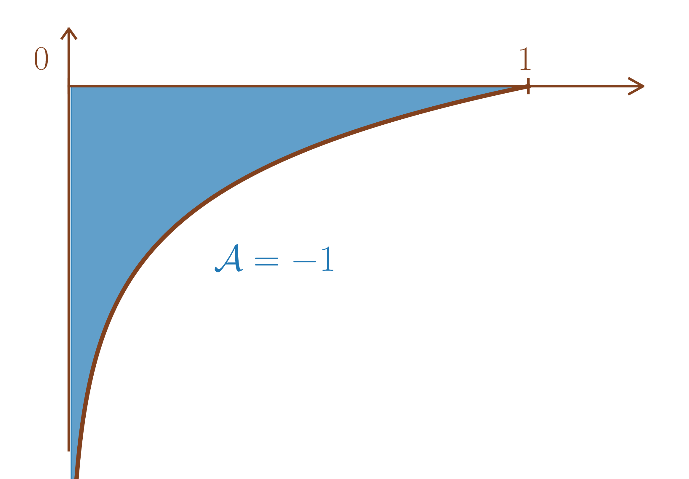
(Intégrales de Riemann en \(0^+\)) Soit \(\alpha \in \mathbb{R},\) \[\int_0^1 \frac{dt}{t^\alpha} \text{ converge } \iff \alpha < 1.\]
Soit \(0 < x \leq 1,\)
Si \(\alpha = 1,\) \[\int_{x}^1 \frac{dt}{t} = \left[\ln(t)\right]_{x}^1 = \ln(x) \xrightarrow[x \to 0^+]{} -\infty.\]
Si \(\alpha \neq 1,\) \[\int_{x}^1 \frac{dt}{t^\alpha} = \frac{1}{1-\alpha}\left[t^{1-\alpha}\right]_{x}^1 = \frac{1}{1-\alpha}\left(1-x^{1-\alpha}\right) \xrightarrow[x \to 0^+]{}\left\{ \begin{array}{ll} +\infty & \mbox{si $1-\alpha < 0 \iff \alpha > 1,$}\\ \frac{1}{1-\alpha} & \mbox{si $1-\alpha > 0 \iff \alpha < 1.$} \end{array} \right.\]
On a donc aussi pour tout \(b > 0,\) \[\int_0^b \frac{dt}{t^\alpha} \text{ converge } \iff \alpha < 1.\]
On présente ici les propriétés déjà démontrées dans le cas \([a,b[,\) qui s’appliquent aussi au cas \(]a,b].\) On ne présente pas les preuves qui sont identiques.
(Similaire à la proposition [prop:integrale_CV_primitive_aussi]) Soient \(f : ]a,b]\to E\) continue et \(g\) une primitive de \(f\) sur \(]a,b].\) Alors, \[\text{$\int_a^b f(t)dt$ converge $\iff$ $g$ admet une limite en $a.$}\] Dans ce cas, \(\int_a^b f(t)dt = g(b)-\underset{x \to a}{\lim}\text{ }g(x),\) que l’on note \(\left[g(x)\right]_a^b.\)
(Similaire au corollaire [cor:CV_intergrale_derivee_vaut_pour_CV]) Soit \(f : ]a,b]\to E\) de classe \(\mathscr{C}^1.\) Alors, \[f \text{ converge en $a$} \iff \int_a^b f'(t)dt \text{ converge}.\]
(Similaire à la proposition [prop:premieres_proprietes_integrale]) Soient \(f : ]a,b]\to E\) et \(g : ]a,b]\to E\) des fonctions continues par morceaux.
Soient \(\lambda, \mu \in \mathbb{K},\)
\[\left.\begin{array}{ll} \int_a^b f(t)dt & \text{ converge} \\ \int_a^b g(t)dt & \text{ converge} \end{array}\right\} \Longrightarrow \left\{\begin{array}{ll} \int_a^b & \left(\lambda f(t)+\mu g(t)\right)dt \text{ converge} \\ \text{ avec }&\int_a^b \left(\lambda f(t)+\mu g(t)\right)dt \\ & = \lambda\int_a^b f(t)dt+\mu\int_a^b g(t)dt. \end{array}\right.\]
Soit \(\mathscr{B}= (e_1,\ldots,e_n)\) une base de \(E\) telle que pour tout \(t \in ]a,b],\) \(f(t) = f_1(t)e_1+\ldots+f_n(t)e_n\) avec \(f_j : ]a,b]\to \mathbb{K}\) pour \(1 \leq j \leq n.\)
Alors, \[\int_a^b f(t)dt \text{ converge } \iff \forall 1 \leq j \leq n, \int_a^b f_j(t)dt \text{ converge.}\] De plus, dans ce cas, \(\int_a^b f(t)dt = \left(\int_a^b f_1(t)dt\right)e_1+\ldots+\left(\int_a^b f_n(t)dt\right)e_n.\)
Soit \(F\) un espace vectoriel de dimension finie et \(u \in \mathscr{L}(E,F).\) Alors, \[\int_a^b f(t)dt \text{ converge } \Longrightarrow \int_a^b u(f(t))dt \text{ converge }\] De plus, dans ce cas, \(\int_a^b u(f(t))dt = u\left(\int_a^b f(t)dt\right).\)
(Similaire à la remarque [rem:somme_CV_integrales])
En particulier, si \(f : ]a,b]\to \mathbb{C},\) \((1,i)\) est une base du \(\mathbb{R}\)-espace vectoriel \(\mathbb{C}\) telle que \(f = \mathop{\mathrm{Re}}(f) + i\mathop{\mathrm{Im}}(f).\)
On a donc \(\int_a^b f(t)dt \text{ converge } \iff \int_a^b \mathop{\mathrm{Re}}(f(t))dt \text{ et }\int_a^b \mathop{\mathrm{Im}}(f(t))dt \text{ convergent.}\)
On en déduit donc aussi \[\int_a^b f(t)dt \text{ converge } \iff \int_a^b \overline{f(t)}dt \text{ converge }\] avec en cas de convergence, \(\int_a^b \overline{f(t)}dt=\overline{\int_a^b f(t)dt}.\)
Si \(\int_a^b f(t)dt\) converge et \(\int_a^b g(t)dt\) diverge alors \(\int_a^b \left(f(t)+g(t)\right)dt\) diverge (Sinon, par l’absurde, on aurait \(\int_a^b g(t)dt = \int_a^b \left(g(t)+f(t)-f(t)\right)dt\) qui converge).
(Similaire à la proposition [prop:cv_integrale_point_milieu_est_idem]) Soient \(f : ]a,b]\to E\) continue par morceaux et \(c \in ]a,b[.\) Alors, \[\int_a^b f(t)dt \text{ converge } \iff \int_a^c f(t)dt \text{ converge.}\] De plus, dans ce cas, \(\int_a^b f(t)dt = \int_a^c f(t)dt+\int_c^b f(t)dt.\)
(Similaire à la proposition [prop:reste_tend_vers_zeroabof]) Soit \(f : ]a,b]\to E\) continue par morceaux telle que \(\int_a^b f(t)dt\) converge.
On considère \(\begin{array}{lllll} \psi & : & ]a,b] & \to & E \\ & & x & \mapsto & \int_a^xf(t)dt = \int_{\left[a,x\right[} f(t)dt \end{array} .\)
Alors, \(\psi(x) \xrightarrow[x \to a]{} 0.\)
(Similaire à la remarque [prop:reste_tend_vers_zeroasimilaire]) Si de plus, \(f\) est continue, la fonction \(\psi\) définie dans la proposition [prop:reste_tend_vers_zeroasimilaire] est de classe \(\mathscr{C}^1\) et sa dérivée est \(f.\) C’est la primitive de \(f\) qui tend vers \(0\) en \(a.\)
(Similaire à la proposition [prop:fonction_positive_integrale_partielle_croissante]) Soient \(f : ]a,b]\to \mathbb{R}^{+},\) à valeurs positives, continue par morceaux et \(\Phi : x \in ]a,b]\mapsto \int_x^b f(t)dt.\) Alors,
\(\Phi\) est décroissante donc \[\text{ $\int_a^b f(t)dt$ converge $\iff$ $\Phi$ converge en $a$ $\iff$ $\Phi$ est majorée.}\]
En cas de convergence, \(\int_a^b f(t)dt = \underset{x \to a}{\lim}\text{ } \Phi(x) = \sup_{x \in ]a,b]} \Phi(x).\)
En cas de divergence, \(\Phi(x) \xrightarrow[x \to a]{} +\infty.\)
(Similaire à la proposition [prop:integrale_de_fonction_pos_Est_pos]) Soit \(f : ]a,b]\to \mathbb{R}^{+},\) à valeurs positives, continue par morceaux telle que \(\int_a^b f(t)dt\) converge. Alors,
\(\int_a^b f(t)dt \geq 0,\)
Si \(f\) est continue et \(\int_a^b f(t)dt = 0\) alors \(f = 0.\)
(Similaire à la remarque [rem:nullite_pour_CPm]) Soit \(f : ]a,b]\to \mathbb{R}^{+},\) à valeurs positives, continue par morceaux telle que \(\int_a^b f(t)dt = 0\) alors \(f\) est nulle en tout point où elle est continue.
(Similaire au corollaire [cor:croissance_integrale]) Soient \(f : ]a,b]\to \mathbb{R}\) et \(g : ]a,b]\to \mathbb{R}\) continues par morceaux telles que \(\int_a^b f(t)dt\) et \(\int_a^b g(t)dt\) convergent.
Si pour tout \(t \in ]a,b], f(t) \leq g(t)\) alors \(\int_a^b f(t)dt \leq \int_a^b g(t)dt.\)
De plus, si \(f\) et \(g\) sont continues et \(\int_a^b f(t)dt = \int_a^b g(t)dt\) alors \(f=g.\)
(Similaire à la proposition [prop:premiere_comparaison_int_positives]) Soient \(f : ]a,b]\to \mathbb{R}^{+}\) et \(g : ]a,b]\to \mathbb{R}^{+}\) continues par morceaux et à valeurs positives.
On suppose qu’il existe un voisinage de \(a\) sur lequel \(0 \leq f \leq g.\)
(ie il existe \(c \in ]a,b]\) tel que pour tout \(c \in \left]a,c\right],\) \(0 \leq f(t) \leq g(t)\)) \[\begin{aligned} \text{Alors, } & & \int_a^b g(t)dt \text{ converge } \Longrightarrow \int_a^b f(t)dt \text{ converge.} \end{aligned}\] (donc par contraposée, \(\int_a^b f(t)dt \text{ diverge } \Longrightarrow \int_a^b g(t)dt \text{ diverge.}\))
Soit \(f: ]a,b]\to E\) continue par morceaux.
On dit que « l’intégrale de \(f\) sur \(]a,b]\) converge absolument » si \(\int_a^b \left\|f(t)\right\|dt\) converge.
Dans ce cas, on dit que \(f\) est intégrable sur \(]a,b].\)
(Similaire à la remarque [rem:equivalence_normeS_CVA]) Cela ne dépend pas de la norme choisie sur \(E\) car toute les normes y sont équivalentes.
(Similaire à la proposition [prop:CVAdoncCV]) Soit \(f: ]a,b]\to E\) continue par morceaux alors, \[\int_a^b f(t)dt \text{ converge absolument } \Longrightarrow \int_a^b f(t)dt \text{ converge.}\]
(Similaire à la remarque [rem:reciproque_CVA_Fausse]) La réciproque est fausse.
Soit \(\alpha > 0,\) on considère \(f : t \in \left]0,1\right] \mapsto t^{\alpha-2}\sin\left(\frac{1}{t}\right).\)
Alors, pour \(x \in \left]0,1\right],\) en faisant le changement de variable \(u = \frac{1}{t} \Longrightarrow dt = -\frac{1}{u^2}du,\) on a \[\int_x^1 t^{\alpha-2}\sin\left(\frac{1}{t}\right)dt = -\int_{\tfrac{1}{x}}^1 \left(\frac{1}{u}\right)^{\alpha-2}\sin\left(u\right)\frac{1}{u^2}du = \int_1^{\tfrac{1}{x}} \frac{\sin\left(u\right)}{u^\alpha}du.\]
On a donc \(\int_0^1 t^{\alpha-2}\sin\left(\frac{1}{t}\right) dt\) converge \(\iff\) \(\int_1^{+\infty} \frac{\sin\left(u\right)}{u^\alpha}du\) converge.
On en déduit alors par l’exercice [exoc:semi_CV_sin_sur_talpha] que pour \(0 < \alpha \leq 1\) que \(\int_0^1 t^{\alpha-2}\sin\left(\frac{1}{t}\right) dt\) converge mais ne converge pas absolument.
Soit \(f: ]a,b]\to E\) continue par morceaux tel que \(\int_a^bf(t)dt\) converge et \(\int_a^b\left\|f(t)\right\|dt\) ne converge pas, on dit que \(\int_a^bf(t)dt\) est semi-convergente.
(Similaire à la proposition [prop:comparaison_asymptotique_pour_CV_integrales]) Soient \(f : ]a,b]\to E\) continue par morceaux et \(g : ]a,b]\to F\) continue par morceaux avec \((F,\left\|\cdot\right\|_F)\) \(\mathbb{K}\)-espace vectoriel normé de dimension finie.
Si \(f(t) =\underset{t\to a}{O} \left(g(t)\right)\) alors \[\int_a^b g(t)dt \text{ converge absolument} \Longrightarrow \int_a^b f(t)dt \text{ converge absolument}.\]
Si \(f(t) =\underset{t\to a}{o} \left(g(t)\right)\) alors \[\int_a^b g(t)dt \text{ converge absolument } \Longrightarrow \int_a^b f(t)dt \text{ converge absolument}.\]
Si \(E = F\) et \({f(t)} \underset{t\to a}{\sim}{g(t)}\) alors \[\int_a^b g(t)dt \text{ converge absolument } \iff \int_a^b f(t)dt \text{ converge absolument}.\]
(Similaire à la remarque [rem:pas_De_comparaison_si_non_CVA]) La proposition [prop:comparaison_asymptotique_pour_CV_integrales_similaire] est fausse si on remplace la convergence absolue par le convergence.
On considère \(f : t \in \left]0,1\right] \mapsto \frac{\cos^2\left(\frac{1}{t}\right)}{t}\) et \(g : t \in \left]0,1\right] \mapsto \frac{{\cos \left(\frac{1}{t}\right)}}{t\sqrt{t}}.\)
Alors, pour \(t \in \left]0,1\right],\) \(\frac{f(t)}{g(t)} = \sqrt{t}\cos\left(\frac{1}{t}\right) \xrightarrow[t \to 0]{} 0\) donc \(\frac{\cos^2\left(\frac{1}{t}\right)}{t} = \underset{t\to 0}{o}\left(\frac{{\cos \left(\frac{1}{t}\right)}}{t\sqrt{t}}\right).\)
De plus, pour \(x \in \left]0,1\right],\) en faisant le changement de variable \(u = \frac{1}{t} \Longrightarrow dt = -\frac{1}{u^2}du,\) on a \[\begin{aligned} & \int_x^1 \frac{\cos^2\left(\frac{1}{t}\right)}{t}dt = -\int_{\tfrac{1}{x}}^1 u\cos^2\left(u\right)\frac{1}{u^2}du = \int_1^{\tfrac{1}{x}} \frac{\cos^2\left(u\right)}{u}du \\ \text{ et }&\int_x^1 \frac{{\cos \left(\frac{1}{t}\right)}}{t\sqrt{t}}dt = -\int_{\tfrac{1}{x}}^1 u\sqrt{u}\cos\left(u\right)\frac{1}{u^2}du = \int_1^{\tfrac{1}{x}} \frac{\cos\left(u\right)}{\sqrt{u}}du \end{aligned}\]
On a donc \(\int_0^1 \frac{\cos^2\left(\frac{1}{t}\right)}{t} dt\) converge \(\iff\) \(\int_1^{+\infty} \frac{\cos^2\left(u\right)}{u}\) converge
et \(\int_0^1 \frac{{\cos \left(\frac{1}{t}\right)}}{t\sqrt{t}}dt\) converge \(\iff\) \(\int_1^{+\infty} \frac{\cos\left(u\right)}{\sqrt{u}}\) converge.
On en déduit alors par l’exemple [ex:contrex_grandO_CV_non_CVA] que bien que \(\frac{\cos^2\left(\frac{1}{t}\right)}{t} = \underset{t\to 0}{o}\left(\frac{{\cos \left(\frac{1}{t}\right)}}{t\sqrt{t}}\right),\) on a \(\int_0^1 \frac{{\cos \left(\frac{1}{t}\right)}}{t\sqrt{t}}dt\) qui converge mais \(\int_0^1 \frac{\cos^2\left(\frac{1}{t}\right)}{t} dt\) qui diverge.
(Similaire à la proposition [prop:equiv_positif_equiv_CV_integrales]) Soient \(f : ]a,b]\to \mathbb{R}\) et \(g : ]a,b]\to E\) continues par morceaux et telles que \({f(t)} \underset{t\to a}{\sim}{g(t)}.\)
Si \(g\) est positive au voisinage de \(a\) alors \[\int_a^b g(t)dt \text{ converge} \iff \int_a^b f(t)dt \text{ converge}\]
(Similaire à la remarque [rem:pas_dequivalencE_equivalent_si_no_signe]) La proposition [prop:equiv_positif_equiv_CV_integrales_similaire] est fausse sans hypothèse de signe.
En reprenant l’exemple [ex:contrex_comparaison_non_CVA_abof],
\[\frac{{\cos \left(\frac{1}{t}\right)}}{t\sqrt{t}}+\frac{\cos^2\left(\frac{1}{t}\right)}{t} = \frac{{\cos \left(\frac{1}{t}\right)}}{t\sqrt{t}}+\underset{t\to 0}{o}\left(\frac{{\cos \left(\frac{1}{t}\right)}}{t\sqrt{t}}\right) \underset{t\to 0}{\sim}\left(\frac{{\cos \left(\frac{1}{t}\right)}}{t\sqrt{t}}\right)\]
Cependant, \(\int_0^1 \frac{{\cos \left(\frac{1}{t}\right)}}{t\sqrt{t}}dt\) converge tandis que \(\int_0^1 \frac{{\cos \left(\frac{1}{t}\right)}}{t\sqrt{t}}+\frac{\cos^2\left(\frac{1}{t}\right)}{t} dt\) diverge (comme somme d’une intégrale convergente et d’une intégrale divergente, voir la remarque [rem:somme_integrale_dv_CV_similaire]).
(Similaire à la proposition [prop:integration_relations_De_comparaisons]) Soit \(f : ]a,b]\to E\) intégrable. Alors, \[\left\|\int_a^b f(t)dt\right\| \leq \int_a^b \left\|f(t)\right\|dt.\]
Soient \(f : ]a,b]\to \mathbb{R}\) continue par morceaux
et \(g : ]a,b]\to \mathbb{R}^{+}\) continue par morceaux à valeurs réelles positives.
Si \(\int_a^b g(t)dt\) converge,
Si \(f(t) =\underset{t\to a}{O} \left(g(t)\right)\) alors \(\int_a^xf(t)dt =\underset{x\to a}{O} \left(\int_a^xg(t)dt\right).\)
Si \(f(t) =\underset{t\to a}{o} \left(g(t)\right)\) alors \(\int_a^xf(t)dt =\underset{x\to a}{o} \left(\int_a^xg(t)dt\right).\)
Si \(E = \mathbb{R}\) et \({f(t)} \underset{t\to a}{\sim} {g(t)}\) alors \({\int_a^xf(t)dt} \underset{x\to a}{\sim} {\int_a^xg(t)dt}.\)
Si \(\int_a^b g(t)dt\) diverge,
Si \(f(t) =\underset{t\to a}{O} \left(g(t)\right)\) alors \(\int_x^bf(t)dt =\underset{x\to a}{O} \left(\int_x^bg(t)dt\right).\)
Si \(f(t) =\underset{t\to a}{o} \left(g(t)\right)\) alors \(\int_x^bf(t)dt =\underset{x\to a}{o} \left(\int_x^bg(t)dt\right).\)
Si \(E = \mathbb{R}\) et \({f(t)} \underset{t\to a}{\sim} {g(t)}\) alors \({\int_x^bf(t)dt} \underset{x\to a}{\sim} {\int_x^bg(t)dt}.\)
\(\frac{\sin t}{t^2} \underset{t\to 0}{\sim} \frac{1}{t}\) qui est une fonction positive dont l’intégrale diverge en \(0\) (Intégrale de Riemann en \(0\) avec \(\alpha = 1\)) donc \(\int_0^1 \frac{\sin t}{t^2}dt\) diverge.
\(\frac{\sin t}{t\sqrt{t}} \underset{t\to 0}{\sim} \frac{1}{\sqrt{t}}\) qui est une fonction positive dont l’intégrale converge en \(0\) (Intégrale de Riemann en \(0\) avec \(\alpha = 1/2\)) donc \(\int_0^1 \frac{\sin t}{t\sqrt{t}}dt\) converge.
Pour tout \(t \in \left]0,1\right],\) \(\left|\frac{\sin\left(\frac{1}{t}\right)}{\sqrt{t}}\right| \leq \frac{1}{\sqrt{t}}\) et \(\int_0^1 \frac{dt}{\sqrt{t}}\) converge (Intégrale de Riemann en \(0\) avec \(\alpha = 1/2\)) donc \(\int_0^1 \frac{\sin\left(\frac{1}{t}\right)}{t}dt\) converge (et converge même absolument).
Par croissances comparées, \(\ln(t) = \underset{t\to 0}{o}\left(\frac{1}{t^{\frac{1}{4}}}\right)\) donc \(\frac{\ln(t)}{\sqrt{t}} = \underset{t\to 0}{o}\left(\frac{1}{t^{\frac{3}{4}}}\right).\) Or, \(\int_0^1 \frac{dt}{t^\frac{3}{4}}\) converge (Intégrale de Riemann en \(0\) avec \(\alpha = 3/4\)) donc \(\int_0^1 \frac{\ln(t)}{\sqrt{t}}dt\) converge (et converge même absolument).
Soit \(f : \left]0,1\right] \to \mathbb{R}\) de classe \(\mathscr{C}^1\) telle que \(f'(t) \underset{t\to 0^+}{\sim} \frac{1}{\sqrt{t}}.\)
Alors, \(\int_0^1 f'(t)dt\) converge donc \(f\) converge en \(0^+.\)
De plus, en notant \(\ell = \underset{t \to 0^+}{\lim}\text{ } f(t),\) par intégration des relations de comparaisons, on a
\(f(x) - \ell= \int_0^x f'(t)dt \underset{x\to 0^+}{\sim} \int_0^x \frac{dt}{\sqrt{t}} = \left[2\sqrt{t}\right]_0^x = 2\sqrt{x}\) donc \(f(x) = \ell + 2\sqrt{x} + \underset{x\to 0}{o}\left(\sqrt{x}\right).\)
Soit \(f : \left]0,1\right] \to \mathbb{R}\) de classe \(\mathscr{C}^1\) telle que \(f'(t) \underset{t\to 0^+}{\sim} \frac{1}{t}.\)
Alors, \(\int_0^1 f'(t)dt\) diverge. De plus, par intégration des relations de comparaisons, on a
\(f(1) - f(x) = \int_x^1 f'(t)dt \underset{x\to 0^+}{\sim} \int_0^x \frac{dt}{t} = \left[\ln(t)\right]_x^1 = -\ln(x)\)
donc \(f(x) = \underbrace{f(1)}_{=\underset{x\to 0}{o}\left(\ln(x)\right)}+\ln(x) + \underset{x\to 0}{o}\left(\ln(x)\right) \underset{x\to 0}{\sim} \ln(x).\)
(Intégrales de Bertrand en \(0^+\)) Soient \(\alpha, \beta \in \mathbb{R},\) montrer que \[\int_0^{\frac{1}{2}} \frac{dt}{t^\alpha \left|\ln t\right|^\beta} = \int_0^{\frac{1}{2}} \frac{dt}{t^\alpha \left(-\ln t\right)^\beta} \text{ converge } \iff \left\{\begin{array}{ll} & \alpha < 1 \\ \text{ ou }& \alpha = 1 \text{ et }\beta >1. \end{array}\right.\]
(les valeurs absolues sont dues au fait que \(\ln\) est négatif sur \(\left]0,1/2\right]\) et que les puissances réelles ne sont définies que pour des nombres strictement positifs).
Si \(\alpha < 1,\) soit \(\gamma \in \left]\alpha,1\right[,\) \(\frac{1}{t^\alpha \left|\ln t\right|^\beta} = \underset{t\to 0^+}{o}\left( \frac{1}{t^\gamma}\right)\) par croissances comparées.
Or, \(\gamma < 1\) donc \(\int_0^{\frac{1}{2}} \frac{1}{t^\gamma}\) converge absolument en tant qu’intégrale de Riemann puis \(\int_0^{\frac{1}{2}} \frac{dt}{t^\alpha \left|\ln t\right|^\beta}\) converge (absolument, mais c’est inutile de préciser car la fonction est de signe constant).
Si \(\alpha > 1,\) \(\frac{1}{t} = \underset{t\to 0^+}{o}\left( \frac{1}{t^\alpha \left|\ln t\right|^\beta}\right)\) par croissances comparées.
Or, \(\int_0^{\frac{1}{2}} \frac{1}{t}\) diverge en tant qu’intégrale de Riemann puis \(\int_0^{\frac{1}{2}} \frac{dt}{t^\alpha \left|\ln t\right|^\beta}\) diverge (ne converge pas absolument donc diverge car la fonction est de signe constant).
Si \(\alpha = 1,\) soit \(x \in \left]0,\frac{1}{2}\right],\) par le changement de variable \(u = -\ln(t) \Longrightarrow du = -\frac{dt}{t},\) on a \[\int_x^{\frac{1}{2}} \frac{dt}{t \left|\ln t\right|^\beta} = \int^{-\ln(x)}_{-\ln(1/2)} \frac{du}{u^\beta}.\]
Si \(\beta = 1,\) \[\int_x^{\frac{1}{2}} \frac{dt}{t \left|\ln t\right|^\beta} = \int^{-\ln(x)}_{-\ln(1/2)} \frac{du}{u} = [\ln(\left|u\right|)]^{-\ln(x)}_{-\ln(1/2)} = \ln(\left|\ln(x)\right|)-\ln(\ln(2)) \xrightarrow[x \to 0^+]{}+\infty.\]
Si \(\beta \neq 1,\) \[\begin{aligned} \int_x^{\frac{1}{2}} \frac{dt}{t \left|\ln t\right|^\beta} & = \frac{1}{{1-\beta}}\left[u^{1-\beta}\right]^{-\ln(x)}_{-\ln(1/2)}\\ & = \frac{1}{1-\beta}\left(\left|\ln(x)\right|^{1-\beta}-\ln(2)^{1-\beta}\right) \\ & \xrightarrow[x \to 0^+]{} \left\{\begin{array}{ll} +\infty & \mbox{ si $1-\beta > 0 \iff \beta < 1$} \\ -\frac{1}{1-\beta}\ln(2)^{1-\beta} & \mbox{ si $1-\beta < 0 \iff \beta > 1$} \\ \end{array}\right.. \end{aligned}\]
Dans toute cette partie, on note \(a < b\in \overline{\mathbb{R}}\) avec éventuellement \(a=-\infty\) ou \(b=+\infty.\)
Soient \(\begin{array}{lllll} f & : & ]a,b[ & \to & E \\ & & t & \mapsto & f(t) \end{array}\) continue par morceaux et \(c \in ]a,b[.\)
On dit que « l’intégrale sur de \(f\) sur \(]a,b[\) converge » si \(\int_a^c f(t)dt\) et \(\int_c^b f(t)dt\) convergent ie \(x \mapsto \int_x^c f(t)dt\) converge quand \(x \xrightarrow{} a\) et \(x \mapsto \int_c^x f(t)dt\) converge quand \(x \xrightarrow{} b.\)
Dans ce cas, \(\int_a^c f(t)dt+\int_c^b f(t)dt\) est appelée « l’intégrale de \(f\) sur \(]a,b[\) » et est notée \(\int_{]a,b[}f\) ou \(\int_a^b f(t)dt.\)
Sinon, on dit qu’elle diverge. Toute cette définition ne dépend pas du point \(c\) choisi.
\(\frac{e^{-t}\ln(t)}{\sqrt{t}} = \underset{t\to +\infty}{o}\left(\frac{1}{t^2}\right)\) par croissances comparées donc \(\int_1^{+\infty}\frac{e^{-t}\ln(t)}{\sqrt{t}} dt\) converge.
De plus, \(\frac{e^{-t}\ln(t)}{\sqrt{t}} \underset{t\to 0}{\sim} \frac{\ln(t)}{\sqrt{t}} =\underset{t\to 0}{o}\left(\frac{1}{t^{\frac{1}{4}}}\right)\) par croissances comparées donc \(\int_0^{1}\frac{e^{-t}\ln(t)}{\sqrt{t}} dt\) converge.
On en déduit que \(\int_0^{+\infty}\frac{e^{-t}\ln(t)}{\sqrt{t}} dt\) converge.
Pour tout \(t \in \left]0,1\right],\) \(\left|\frac{\sin t}{t^2}\right| \leq \frac{1}{t^2}\) donc \(\int_1^{+\infty} \frac{\sin t}{t^2}dt\) converge.
\(\frac{\sin t}{t^2} \underset{t\to 0}{\sim} \frac{1}{t}\) donc \(\int_0^{1} \frac{\sin t}{t^2}dt\) diverge.
On en déduit que \(\int_0^{+\infty} \frac{\sin t}{t^2}dt\) diverge.
\(\frac{\sin\left(\frac{1}{t}\right)}{\sqrt{t}} \underset{t\to +\infty}{\sim} \frac{1}{t\sqrt{t}}\) donc \(\int_1^{+\infty}\frac{\sin\left(\frac{1}{t}\right)}{\sqrt{t}}dt\) converge.
Pour \(t \in \left]0,1\right],\) \(\left|\frac{\sin\left(\frac{1}{t}\right)}{\sqrt{t}}\right| \leq \frac{1}{\sqrt{t}}\) donc \(\int_0^{1} \frac{\sin\left(\frac{1}{t}\right)}{\sqrt{t}}dt\) converge.
On en déduit que \(\int_0^{+\infty}\frac{\sin\left(\frac{1}{t}\right)}{\sqrt{t}} dt\) converge.
\(\int_{-\infty}^{+\infty}f(t)dt \centernot{\iff} x\mapsto \int_{-x}^x f(t)dt\) converge en \(+\infty.\)
Par exemple, pour tout \(x \in \mathbb{R},\) \(\int_{-x}^x tdt = 0\) par imparité mais \(\int_{-\infty}^{+\infty}tdt\) diverge car \(\int_{0}^{+\infty}tdt\) diverge.
On définit aussi la définition de convergence absolue et les mêmes propriétés que dans les cas \([a,b[\) et \(]a,b].\)
Dans toute cette partie, \(I\) désigne un intervalle de \(\mathbb{R}\) tel que \[\begin{array}{lll} I & = \left[a,b\right[ \subset \mathbb{R}& \text{ avec }a < b \in \overline{\mathbb{R}} \text{ donc éventuellement $b=+\infty$} \\ \text{ ou }I & = \left]a,b\right] \subset \mathbb{R}& \text{ avec }a < b \in \overline{\mathbb{R}} \text{ donc éventuellement $a=-\infty$} \\ \text{ ou }I & = \left]a,b\right[ \subset \mathbb{R}& \text{ avec }a < b \in \overline{\mathbb{R}} \text{ donc éventuellement $a=-\infty$ ou $b=+\infty$} \end{array}\]
Soit \(f : [a,b] \to E\) continue par morceaux. Alors, \(f\) est intégrable sur \(]a,b], [a,b[\) et \(]a,b[\) avec \[\int_{[a,b]} f(t)dt = \int_{]a,b]} f(t)dt = \int_{[a,b[} f(t)dt = \int_{]a,b[} f(t)dt.\]
\(t \in [a,b]\mapsto \left\|f(t)\right\|\) est continue par morceaux par composition donc
\(\Phi : x \in [a,b]\mapsto \int_a^x \left\|f(t)\right\|dt\) est continue avec \(\Phi(x) \xrightarrow[x \to b]{} \Phi(b) = \int_a^b \left\|f(t)\right\|dt\) et \(\tilde{\Phi} : x \in [a,b]\mapsto \int_x^b \left\|f(t)\right\|dt\) est continue avec \(\tilde{\Phi}(x) \xrightarrow[x \to a]{} \tilde{\Phi}(a) = \int_a^b\left\|f(t)\right\|dt.\)
(Intégrale faussement impropre) Soit \(f : ]a,b]\to E\) continue par morceaux.
On dit que l’intégrale \(\int_a^b f(t)\,\mathrm{d}t\) est faussement impropre en \(a\) si \(f\) admet une limite finie en \(a.\)
Dans ce cas, en notant \(\tilde{f}\) le prolongement de \(f\) par continuité en \(a\) (défini par \(\tilde{f}(a) = \lim_{t \to a^+} f(t)\)), \(\tilde{f}\) est continue par morceaux sur \([a, b],\) l’intégrale \(\int_a^b f(t)\,\mathrm{d}t\) est convergente (et \(f\) est intégrable sur \(\left]a, b\right]\)), avec : \[\int_a^b f(t)\,\mathrm{d}t = \int_a^b \tilde{f}(t)\,\mathrm{d}t.\] On définit de même une intégrale faussement impropre en \(b,\) ou en les deux bornes \(a\) et \(b.\)
Considérons la fonction \(f : t \mapsto \dfrac{\sin(t)}{t}\) sur \(\left]0, 1\right].\) La fonction \(f\) est continue sur \(\left]0, 1\right]\) et \(f(t) \underset{t\to 0}{\sim} 1.\) La fonction \(f\) est donc prolongeable par continuité en \(0\) en posant \(f(0) = 1.\)
L’intégrale \(\int_0^1 \dfrac{\sin(t)}{t}\,\mathrm{d}t\) est donc faussement impropre en \(0\) : elle est (absolument) convergente, et sa valeur coïncide avec l’intégrale de son prolongement continu sur \([0, 1].\)
Soit \(\lambda > 0,\) calculer \[I = \int_0^{\frac{\pi}{2}} \frac{dt}{\lambda+\cos^2 t}.\]
\(I\) est une intégrale sur \(\left[0,\frac{\pi}{2}\right]\) qui ne rentre pas dans le cadre du cours précédent. Pour pouvoir la calculer et effectuer une changement de variable, on va la rendre (faussement) impropre. En effet, \[\begin{aligned} I & = \int_0^{\frac{\pi}{2}} \frac{dt}{\lambda+\cos^2 t} \\ & = \int_{\left[0,\frac{\pi}{2}\right]}\frac{dt}{\lambda+\cos^2 t} \\ & = \int_{\left[0,\frac{\pi}{2}\right[}\frac{dt}{\lambda+\cos^2 t} \\ & = \int_{\left[0,\frac{\pi}{2}\right[}\frac{1}{1+\frac{\lambda}{\cos^2 t}}\frac{dt}{\cos^2 t} \\ & = \int_0^{\frac{\pi}{2}}\frac{1}{1+\frac{\lambda}{\cos^2 t}}\frac{dt}{\cos^2 t}. \end{aligned}\]
Par le changement de variable \(x = \tan t \Longrightarrow dx = \frac{dt}{\cos^2 t}\) et \(\frac{1}{\cos^2 t} = 1+\tan^2 t = 1+x^2,\) on a \[\begin{aligned} I & = \int_0^{+\infty} \frac{dx}{1+\lambda(1+x^2)} \\ & = \int_0^{+\infty} \frac{dx}{1+\lambda+\lambda x^2} \\ & = \frac{1}{1+\lambda} \int_0^{+\infty} \frac{dx}{1+\left(\sqrt{\frac{\lambda}{1+\lambda}}x\right)^2} \\ & = \frac{1}{1+\lambda} \sqrt{\frac{1+\lambda}{\lambda}}\left[\mathop{\mathrm{Arctan}}\left(\sqrt{\frac{\lambda}{1+\lambda}}x\right)\right]_0^{+\infty} \\ & = \frac{1}{\sqrt{\left(1+\lambda\right)\lambda}}\frac{\pi}{2} \end{aligned}\]
Soit \(u: I \to E.\)
Sous réserve d’existence des limites, on note \(\left[u(t)\right]_a^b = \underset{t \to b}{\lim}\text{ } u(t) -\underset{t \to a}{\lim}\text{ } u(t).\)
On dira alors que « \(\left[u(t)\right]_a^b\) existe ».
Soient \(u : I \to \mathbb{K}\) et \(v: I \to \mathbb{K}\) toutes deux de classe \(\mathscr{C}^1.\)
En supposant l’existence de \(\left[u(t)v(t)\right]_a^b,\) on a \[\int_a^b u'(t)v(t)dt \text{ converge } \iff \int_a^b u(t)v'(t)dt \text{ converge}\] avec en cas d’existence, \(\int_a^b u(t)v'(t)dt = \left[u(t)v(t)\right]_a^b-\int_a^b u'(t)v(t)dt.\)
On démontre le résultat dans le cas \(I = [a,b[\) (la preuve est identique pour \(I = ]a,b]\) ou \(I = ]a,b[\)).
Soit \(x \in [a,b[,\) par intégration par parties (sur le segment \(\left[a,x\right]\)), \[\begin{aligned} \int_a^x u(t)v'(t)dt & = \left[u(t)v(t)\right]_a^x-\int_a^x u'(t)v(t)dt. \end{aligned}\] De plus, par hyptohèse, la limite \(\left[u(t)v(t)\right]_a^x \xrightarrow[x \to b]{} \left[u(t)v(t)\right]_a^b\) existe.
Donc \[\int_a^b u'(t)v(t)dt \text{ converge } \iff \int_a^b u(t)v'(t)dt \text{ converge}\] avec en cas d’existence, \(\int_a^b u(t)v'(t)dt = \left[u(t)v(t)\right]_a^b-\int_a^b u'(t)v(t)dt.\)
Montrons à l’aide d’une intégration par parties la convergence de \(\int_0^{+\infty} \frac{\sin t}{t}dt,\) que l’on appelle l’intégrale de Dirichlet.
Première tentative. On considère \(u,v\) définies pour \(t \in \mathbb{R}^{+\star}\) telles que
\(\left\{ \begin{array}{ll} u(t) & = \frac{1}{t} \\ v(t) & = -\cos(t)\\ \end{array}\right. \Longrightarrow \left\{ \begin{array}{ll} u'(t) & =-\frac{1}{t^2} \\ v'(t) & = \sin(t) \\ \end{array}\right..\) Vérifions l’existence de \(\left[u(t)v(t)\right]_0^{+\infty}.\) On a \(\left|u(t)v(t)\right| \leq \frac{1}{t} \xrightarrow[t \to +\infty]{} 0.\) Cependant, \(u(t)v(t) = -\frac{\cos(t)}{t} \underset{t\to 0}{\sim} -\frac{1}{t} \xrightarrow[t \to +\infty]{} -\infty\) donc \(\left[u(t)v(t)\right]_0^{+\infty}\) n’existe pas.
Seconde tentative. On considère \(u,v\) définies pour \(t \in \mathbb{R}^{+\star}\) telles que
\(\left\{ \begin{array}{ll} u(t) & = \frac{1}{t} \\ v(t) & = 1-\cos(t)\\ \end{array}\right. \Longrightarrow \left\{ \begin{array}{ll} u'(t) & = -\frac{1}{t^2}\\ v'(t) & = \sin(t) \\ \end{array}\right..\) Vérifions l’existence de \(\left[u(t)v(t)\right]_0^{+\infty}.\) On a \(\left|u(t)v(t)\right| \leq \frac{2}{t} \xrightarrow[t \to +\infty]{} 0.\) Puis, \(u(t)v(t) = \frac{1-\cos(t)}{t} \underset{t\to 0}{\sim} \frac{\frac{1}{2}t^2}{t} = \frac{1}{2}t \xrightarrow[t \to +\infty]{} 0\) donc \(\left[u(t)v(t)\right]_0^{+\infty}\) existe.
On en déduit que \(\int_0^{+\infty} \frac{\sin(t)}{t}dt\) converge \(\iff\) \(\int_0^{+\infty} \frac{\cos(t)-1}{t^2}dt.\)
Or, en \(0,\) \(\frac{\cos(t)-1}{t^2} \underset{t\to 0}{\sim} -\frac{1}{2}t\) avec \(\int_0^1 tdt\) qui converge et pour \(t \in \mathbb{R}^{+},\) \(\left|\frac{\cos(t)-1}{t^2}\right| \leq \frac{2}{t^2}\) avec \(\int_1^{+\infty} \frac{1}{t^2}dt\) qui converge.
Donc \(\int_0^{+\infty} \frac{\sin(t)}{t}dt\) converge.
(Fonction Gamma) On considère \[\begin{array}{lllll} \Gamma & : & \mathbb{R}^{+\star} & \to & \mathbb{R} \\ & & x & \mapsto & \int_0^{+\infty} t^{x-1}e^{-t}dt \end{array}\] appelée « fonction Gamma d’Euler ».
Montrer que \(\Gamma\) est bien définie sur \(\mathbb{R}^{+\star}.\)
Montrer : pour tout \(x > 0, \Gamma(x+1) = x\Gamma(x).\)
En déduire la valeur de \(\Gamma(n)\) pour \(n \in \mathbb{N}^{\star}.\)
Pour tout \(x \in \mathbb{R}^{+\star},\) \(t \in \mathbb{R}^{+\star}\mapsto t^{x-1}e^{-t}\) est continue (donc continue par morceaux). De plus, soit \(x \in \mathbb{R},\)
En 0, \(t^{x-1}e^{-t} \underset{t\to 0}{\sim} t^{x-1} = \frac{1}{t^{1-x}}\) qui est une intégrale de Riemann en \(0^+\) qui converge pour \(1-x < 1 \iff x > 0.\)
En \(+\infty,\) \(t^{x-1}e^{-t} = \underset{t\to +\infty}{o}\left(\frac{1}{t^2}\right)\) par croissances comparées et \(\int_1^{+\infty} \frac{1}{t^2}dt\) converge.
Donc \(\Gamma\) est bien définie sur \(\mathbb{R}^{+\star}.\)
Menons une intégration par parties avec \(u,v\) définies pour \(t \in \mathbb{R}^{+\star}\) telles que
\(\left\{ \begin{array}{ll} u(t) & =e^{-t} \\ v(t) & = \frac{1}{x} t^{x} \\ \end{array}\right. \Longrightarrow \left\{ \begin{array}{ll} u'(t) & =-e^{-t} \\ v'(t) & = t^{x-1} \\ \end{array}\right..\) On a \(u(t)v(t) = \frac{1}{x} t^{x}e^{-t} \xrightarrow[t \to 0]{} 0\) car \(x > 0\) et \(u(t)v(t) = \frac{1}{x} t^{x}e^{-t} \xrightarrow[t \to +\infty]{} 0\) par croissances comparées donc \(\left[u(t)v(t)\right]_0^{+\infty}\) existe et vaut \(0\) et \[\Gamma(x)= \int_0^{+\infty} t^{x-1}e^{-t}dt = \underbrace{\left[u(t)v(t)\right]_0^{+\infty}}_{=0}+\frac{1}{x}\int_0^{+\infty} t^{x}e^{-t}dt = \frac{\Gamma(x+1)}{x} \iff \Gamma(x+1) = x\Gamma(x).\]
\(\Gamma(1) = \int_0^{+\infty} e^{-t}dt = \left[-e^{-t}\right]_0^{+\infty} = 1 = 0!.\)
Puis, par la question précédente,
\(\Gamma(2) = \Gamma(1+1) = 1\times \Gamma(1) = 1 = 1!,\)
\(\Gamma(3) = \Gamma(2+1) = 2\times \Gamma(1) = 2=2!,\)
\(\vdots\)
et on peut donc montrer par récurrence que pour tout \(n \in \mathbb{N}^{\star},\) \(\Gamma(n) = (n-1)!.\)
On considère \(\begin{array}{lllll} \Phi & : & \mathbb{R}^{+\star} & \to & \mathbb{R} \\ & & x & \mapsto & \int_x^{+\infty} \frac{e^{-t}}{t}dt \end{array} .\)
Montrer que \(\Phi\) est bien définie sur \(\mathbb{R}^{+\star}\) et de classe \(\mathscr{C}^\infty.\)
Trouver un équivalent simple de \(\Phi(x)\) quand \(x \xrightarrow{} 0^+.\)
Trouver un équivalent simple de \(\Phi(x)\) quand \(x \xrightarrow{} +\infty.\)
Poursuivre le développement asymptotique de de \(\Phi(x)\) quand \(x \xrightarrow{} +\infty.\)
\(t \in \mathbb{R}^{+\star}\mapsto \frac{e^{-t}}{t}\) est continue et en \(+\infty,\) \(\frac{e^{-t}}{t} = \underset{t\to +\infty}{o}\left(\frac{1}{t^2}\right)\) donc \(\Phi\) est bien définie.
De plus, par la proposition [prop:reste_tend_vers_zeroabof], \(\Phi\) est dérivable de dérivée \(x \in \mathbb{R}^{+\star}\mapsto -\frac{e^{-x}}{x}\) qui est de classe \(\mathscr{C}^\infty\) donc \(\Phi\) est de classe \(\mathscr{C}^\infty.\)
Soit \(x \in \left]0,1\right],\) \(\Phi(x) = \int_x^1 \frac{e^{-t}}{t}dt+\int_1^{+\infty} \frac{e^{-t}}{t}dt.\)
Or, \(\frac{e^{-t}}{t} \underset{t\to 0^+}{\sim} \frac{1}{t}\) donc par intégration des relations de comparaison,
\(\int_x^1 \frac{e^{-t}}{t}dt \underset{x\to 0^+}{\sim} \int_x^1 \frac{1}{t}dt = \left[\ln(t)\right]_x^1 = -\ln(x)\) ie \(\int_x^1 \frac{e^{-t}}{t}dt = -\ln(x) + \underset{x\to 0^{+}}{o}\left(\ln(x)\right).\)
De plus, en tant que constante, \(\int_1^{+\infty} \frac{e^{-t}}{t}dt = \underset{x\to 0^{+}}{o}\left(\ln(x)\right).\)
Finalement, \(\Phi(x) = -\ln(x) + \underset{x\to 0^{+}}{o}\left(\ln(x)\right) \underset{x\to 0^+}{\sim}-\ln(x).\)
Soit \(x \in \mathbb{R}^{+\star},\) menons une intégration par parties sur \([x,+\infty]\) avec \(u,v\) définies pour \(t \in \mathbb{R}^{+\star}\) telles que
\(\left\{ \begin{array}{ll} u(t) & = \frac{1}{t} \\ v(t) & = -e^{-t}\\ \end{array}\right. \Longrightarrow \left\{ \begin{array}{ll} u'(t) & = -\frac{1}{t^2}\\ v'(t) & = e^{-t} \\ \end{array}\right..\) On a \(u(t)v(t) = -\frac{e^{-t}}{t} \xrightarrow[t \to x]{} -\frac{e^{-x}}{x}\) et \(u(t)v(t) = -\frac{e^{-t}}{t} \xrightarrow[t \to +\infty]{} 0\) par croissances comparées donc \(\left[u(t)v(t)\right]_x^{+\infty}\) existe et vaut \(\frac{e^{-x}}{x}.\)
On en déduit \[\Phi(x) = \frac{e^{-x}}{x}-\int_x^{+\infty} \frac{e^{-t}}{t^2}dt.\]
Or, \(\int_1^{+\infty} \frac{e^{-t}}{t}dt\) converge et \(\frac{e^{-t}}{t^2} = \underset{t\to +\infty}{o} \left(\frac{e^{-t}}{t}\right)\) donc par intégration des relations de comparaison, \(\int_x^{+\infty} \frac{e^{-t}}{t^2}dt = \underset{x\to +\infty}{o}\left(\int_x^{+\infty} \frac{e^{-t}}{t}dt\right) = \underset{x\to +\infty}{o}\left(\Phi(x)\right).\)
Finalement, \(\frac{e^{-x}}{x} = \Phi(x) + \int_x^{+\infty} \frac{e^{-t}}{t^2}dt = \Phi(x) + \underset{x\to +\infty}{o}\left(\Phi(x)\right) \underset{x\to +\infty}{\sim} \Phi(x)\) ie \(\Phi(x) \underset{x\to +\infty}{\sim} \frac{e^{-x}}{x}.\)
Par la question précédente, on a \(\Phi(x) = \frac{e^{-x}}{x}+\underset{x\to +\infty}{o}\left(\frac{e^{-x}}{x}\right).\)
Plus précisément, on a obtenu pour \(x >0,\) \(\Phi(x) =\frac{e^{-x}}{x}-\int_x^{+\infty} \frac{e^{-t}}{t^2}dt.\)
En faisant de nouveau une intégration par parties avec avec \(u,v\) définies pour \(t \in \mathbb{R}^{+\star}\) telles que
\(\left\{ \begin{array}{ll} u(t) & = \frac{1}{t^2} \\ v(t) & = -e^{-t}\\ \end{array}\right. \Longrightarrow \left\{ \begin{array}{ll} u'(t) & = -\frac{2}{t^3}\\ v'(t) & = e^{-t} \\ \end{array}\right..\) On a \(u(t)v(t) = -\frac{e^{-t}}{t^2} \xrightarrow[t \to x]{} -2\frac{e^{-x}}{x^2}\) et \(u(t)v(t) = -\frac{e^{-t}}{t^2} \xrightarrow[t \to +\infty]{} 0\) par croissances comparées donc \(\left[u(t)v(t)\right]_x^{+\infty}\) existe et vaut \(\frac{e^{-x}}{x^2}.\)
On en déduit
\[\int_x^{+\infty} \frac{e^{-t}}{t^2}dt = \frac{e^{-x}}{x^2}+2\int_x^{+\infty} \frac{e^{-t}}{t^3}dt.\]
Or, \(\int_1^{+\infty} \frac{e^{-t}}{t^2}dt\) converge (car \(\frac{e^{-t}}{t^2} = \underset{t\to +\infty}{o} \frac{1}{t^2}\)) et \(\frac{e^{-t}}{t^3} = \underset{t\to +\infty}{o} \left(\frac{e^{-t}}{t^2}\right)\) donc par intégration des relations de comparaison, \(\int_x^{+\infty} \frac{e^{-t}}{t^3}dt = \underset{x\to +\infty}{o}\left(\int_x^{+\infty} \frac{e^{-t}}{t^2}dt\right).\)
On en déduit \(\frac{e^{-x}}{x^2} = \int_x^{+\infty} \frac{e^{-t}}{t^2}dt-2\int_x^{+\infty} \frac{e^{-t}}{t^3}dt = \int_x^{+\infty} \frac{e^{-t}}{t^2}dt+ \underset{x\to +\infty}{o}\left(\int_x^{+\infty} \frac{e^{-t}}{t^2}dt\right) \underset{x\to +\infty}{\sim} \int_x^{+\infty} \frac{e^{-t}}{t^2}dt\) ie \(\int_x^{+\infty} \frac{e^{-t}}{t^2}dt \underset{x\to +\infty}{\sim} \frac{e^{-x}}{x^2}\) ou encore \(\int_x^{+\infty} \frac{e^{-t}}{t^2}dt = \frac{e^{-x}}{x^2}+\underset{x\to +\infty}{o}\left(\frac{e^{-x}}{x^2}\right).\)
Puis finalement, \(\Phi(x) = \frac{e^{-x}}{x}-\frac{e^{-x}}{x^2}+\underset{x\to +\infty}{o}\left(\frac{e^{-x}}{x^2}\right).\)
Soit \(\begin{array}{lllll} \varphi & : & I & \to & J \\ & & x & \mapsto & \varphi(x) \end{array}\) \(\begin{array}{l} \text{ une bijection} \\ \text{(une fonction strictement monotone)} \end{array}\) de classe \(\mathscr{C}^1.\)
Alors, \(J\) est un autre intervalle de \(\mathbb{R}\) tel que \(J = \left[c,d\right[, \left]c,d\right]\) ou \(\left]c,d\right[\) avec \(c < d \in \overline{\mathbb{R}}.\)
Soit \(f : J = \varphi(I) \to E\), continue.
Alors, \[\int_c^d f(x)dx \text{ converge } \iff \int_a^b \left(f\circ \varphi\right)(t) \varphi'(t)dt \text{ converge.}\]
De plus, en cas de convergence, \(\int_a^b \left(f\circ \varphi\right)(t) \varphi'(t)dt = \int_{\underset{a}{\lim}\varphi}^{\underset{b}{\lim}\varphi} f(x)dx\)
\[\left(\text{en posant $\int_d^c f(x)dx = -\int_c^d f(x)dx$}\right).\]
Il y a six cas à traiter :
\(I = [a,b[\) et \(\varphi\) est croissante donc \(J = \left[\underset{a}{\lim}\varphi,\underset{b}{\lim}\varphi\right[ = \left[c,d\right[,\)
\(I = ]a,b]\) et \(\varphi\) est croissante donc \(J = \left]\underset{a}{\lim}\varphi,\underset{b}{\lim}\varphi\right] = \left]c,d\right],\)
\(I = ]a,b[\) et \(\varphi\) est croissante donc \(J = \left]\underset{a}{\lim}\varphi,\underset{b}{\lim}\varphi\right[ = \left]c,d\right[,\)
\(I = [a,b[\) et \(\varphi\) est décroissante donc \(J = \left[\underset{b}{\lim}\varphi,\underset{a}{\lim}\varphi\right[ = \left[c,d\right[,\)
\(I = ]a,b]\) et \(\varphi\) est décroissante donc \(J = \left]\underset{b}{\lim}\varphi,\underset{a}{\lim}\varphi\right] = \left]c,d\right],\)
\(I = ]a,b[\) et \(\varphi\) est décroissante donc \(J = \left]\underset{b}{\lim}\varphi,\underset{a}{\lim}\varphi\right[ = \left]c,d\right[.\)
On ne traite que le dernier cas mais la preuve est similaire dans les autres cas.
\((\Longleftarrow).\) On suppose que \(\int_a^b \left(f\circ \varphi\right)(t) \varphi'(t)dt\) converge.
Soit \(m \in \left]c,d\right[,\) on veut montrer que \(\int_c^m f(x)dx\) et \(\int_m^d f(x)dx\) convergent.
Soit \(X \in \left]c,m\right[.\) Par changement de variable sur \(\left[X,m\right]\) (avec \(x =\varphi(t) \iff t = \varphi^{-1}(x)\)), \[\begin{array}{c} \int_X^m f(x)dx = \int_{\varphi^{-1}(X)}^{\varphi^{-1}(m)} \left(f\circ \varphi\right)(t) \varphi'(t)dt = -\int^{\varphi^{-1}(X)}_{\varphi^{-1}(m)} \left(f\circ \varphi\right)(t) \varphi'(t)dt. \\ \left(\text{$\varphi^{-1}(m) < \varphi^{-1}(X)$ car $\varphi$ est de même monotonie que $\varphi$ donc décroissante ici.}\right) \end{array}\]
Or,
\(X \mapsto \int_{X}^{m} f(x)dx\) est continue (et même \(\mathscr{C}^1\) car \(x\in J \mapsto f(x)\) est continue),
\(\varphi^{-1}\) est continue comme réciproque de \(\varphi\) qui est continue (voir cours de MPSI),
\(Y \mapsto \int^{Y}_{\varphi^{-1}(m)} \left(f\circ \varphi\right)(t) \varphi'(t)dt\) est continue (et même \(\mathscr{C}^1\) car \(t\in I \mapsto \left(f\circ \varphi\right)(t) \varphi'(t)\) est continue).
Donc \(X \in J \mapsto \int^{\varphi^{-1}(X)}_{\varphi^{-1}(m)} \left(f\circ \varphi\right)(t) \varphi'(t)dt\) est continue par composition.
Donc en faisant \(X \xrightarrow{} c,\) on a \[\int_c^m f(x)dx = -\int^{b}_{\varphi^{-1}(m)} \left(f\circ \varphi\right)(t) \varphi'(t)dt.\] Donc \(\int_c^m f(x)dx\) converge avec \(\int_c^m f(x)dx =-\int^{b}_{\varphi^{-1}(m)} \left(f\circ \varphi\right)(t) \varphi'(t)dt.\)
De la même façon, on peut montrer que \(\int_m^d f(x)dx\) converge
avec \(\int_m^d f(x)dx = -\int_{a}^{\varphi^{-1}(m)} \left(f\circ \varphi\right)(t) \varphi'(t)dt.\)
Finalement, \(\int_c^d f(x)dx\) converge avec \[\begin{aligned} \int_c^d f(x)dx & =-\int^{b}_{\varphi^{-1}(m)} \left(f\circ \varphi\right)(t) \varphi'(t)dt-\int_{a}^{\varphi^{-1}(m)} \left(f\circ \varphi\right)(t) \varphi'(t)dt \\ & = -\left(\int_{a}^{\varphi^{-1}(m)} \left(f\circ \varphi\right)(t) \varphi'(t)dt+\int^{b}_{\varphi^{-1}(m)} \left(f\circ \varphi\right)(t) \varphi'(t)dt\right) \\ & = -\int_{a}^{b} \left(f\circ \varphi\right)(t) \varphi'(t)dt \\ \end{aligned}\]
et ie \(\int_{\underset{a}{\lim}\varphi}^{\underset{b}{\lim}\varphi} f(x)dx = \int_d^c f(x)dx = -\int_c^d f(x)dx = \int_{a}^{b} \left(f\circ \varphi\right)(t) \varphi'(t)dt.\)
\((\Longleftarrow).\) On suppose que \(\int_c^d f(x)\) converge.
Soit \(m \in \left]a,b\right[,\) on veut montrer que \(\int_a^m \left(f\circ \varphi\right)(t) \varphi'(t)dt\) et \(\int_m^b \left(f\circ \varphi\right)(t) \varphi'(t)dt\) convergent.
Soit \(T \in \left]a,m\right[.\) Par changement de variable sur \(\left[T,m\right]\) (avec \(x =\varphi(t)\)), \[\int_{T}^{m} \left(f\circ \varphi\right)(t) \varphi'(t)dt = \int_{\varphi(T)}^{\varphi(m)} f(x)dx = -\int^{\varphi(T)}_{\varphi(m)} f(x)dx.\]
Or,
\(\varphi\) est continue,
\(T \mapsto\int_{T}^{m} \left(f\circ \varphi\right)(t) \varphi'(t)dt\) est continue (et même \(\mathscr{C}^1\) car \(t \mapsto \left(f\circ \varphi\right)(t) \varphi'(t)\) est continue),
\(Z \mapsto \int^{\varphi(Z)}_{\varphi(m)} f(x)dx\) est continue par composition (et même de classe \(\mathscr{C}^1\)).
Donc en faisant \(T \xrightarrow{} a,\) on a \[\int_{a}^{m} \left(f\circ \varphi\right)(t) \varphi'(t)dt= -\int^{\varphi(a)}_{\varphi(m)} f(x)dx= -\int^{d}_{\varphi(m)} f(x)dx.\] Donc \(\int_{a}^{m} \left(f\circ \varphi\right)(t) \varphi'(t)dt\) converge avec \(\int_{a}^{m} \left(f\circ \varphi\right)(t) \varphi'(t)dt=-\int^{d}_{\varphi(m)} f(x)dx.\)
De la même façon, on peut montrer que \(\int_{m}^{d} \left(f\circ \varphi\right)(t) \varphi'(t)dt\) converge
avec \(\int_{a}^{m} \left(f\circ \varphi\right)(t) \varphi'(t)dt = -\int^{\varphi(m)}_{c} f(x)dx.\)
Finalement, \(\int_{a}^{b} \left(f\circ \varphi\right)(t) \varphi'(t)dt\) converge avec de nouveau l’égalité voulue.
On reprend la même méthode (assez peu formelle) qu’en MPSI en posant \(u = \varphi(t)\) donc \(du = \varphi'(t)dt.\)
\(\int_{-\infty}^{+\infty} f(t+1)dt\) converge \(\iff\) \(\int_{-\infty}^{+\infty} f(x)dx\) converge
avec en cas de convergence, \(\int_{-\infty}^{+\infty} f(t+1)dt=\int_{-\infty}^{+\infty} f(x)dx\)
pour \(x = t+1 \Longrightarrow dx=dt.\)
\(\int_{2}^{+\infty} f(x)dx\) converge \(\iff\) \(\int_{\sqrt{2}}^{+\infty} 2tf(t^2)dt\) converge
avec en cas de convergence, \(\int_{2}^{+\infty} f(x)dx=\int_{\sqrt{2}}^{+\infty} 2tf(t^2)dt\)
pour \(x = t^2 \Longrightarrow dx=2tdt.\)
\(\int_{0}^{1} f(x)dx\) converge \(\iff\) \(\int_{0}^{\frac{\pi}{2}} f(\cos t)\sin tdt\) converge
avec en cas de convergence, \(\int_{0}^{1} f(x)dx=\int_{0}^{\frac{\pi}{2}} f(\cos t)\sin tdt\)
pour \(x = \cos(t) \Longrightarrow dx=-\left(\sin t\right)dt.\)
(Intégrales de référence en \(a^+, b^-\)) Soient \(\alpha \in \mathbb{R}\) et \(a<b \in \mathbb{R}.\)
\(\int_a^b \frac{dx}{\left(x-a\right)^\alpha}\) converge \(\iff \alpha < 1,\)
\(\int_a^b \frac{dx}{\left(b-x\right)^\alpha}\) converge \(\iff \alpha < 1,\)
\(\int_{-\infty}^{-1} \frac{dx}{\left|x\right|^\alpha}\) converge \(\iff \alpha > 1.\)
En faisant le changement de variable \(t = x-a,\) \[\int_a^b \frac{dx}{\left(x-a\right)^\alpha} \text{ converge} \iff \int_0^{b-a} \frac{dt}{t^\alpha} \text{ converge} \iff \alpha < 1.\]
En faisant le changement de variable \(t = b-x,\) \[\int_a^b \frac{dx}{\left(b-x\right)^\alpha} \text{ converge} \iff \int_0^{b-a} \frac{dt}{t^\alpha} \text{ converge} \iff \alpha < 1.\]
En faisant le changement de variable \(t = -x,\) \[\int_{-\infty}^{-1} \frac{dx}{\left|x\right|^\alpha} = \int_{-\infty}^{-1} \frac{dx}{\left(-x\right)^\alpha} \text{ converge} \iff \int_{1}^{+\infty} \frac{dt}{t^\alpha} \text{ converge} \iff \alpha > 1.\]
\(\int_1^2 \frac{dx}{\sqrt{x-1}}\) converge tandis que \(\int_1^2 \frac{dx}{\left(x-1\right)^2}\) diverge.
\(\int_0^1 \frac{dx}{\sqrt{1-x}}\) converge tandis que \(\int_0^1 \frac{dx}{\left(1-x\right)^2}\) diverge.
\(\int_0^1 \frac{dt}{\sqrt{-t\ln t}}\) converge. En effet,
En \(1,\) \(\ln(1+x) \underset{x\to 0}{\sim} x\) donc avec \(t=x+1 \iff x = t-1,\) \(\ln(t) \underset{t\to 1}{\sim} t-1.\)
Donc \(\frac{1}{\sqrt{-t\ln t}} \underset{t\to 1^-}{\sim}\frac{1}{\sqrt{t-1}}\) et \(\int_{1/2}^1 \frac{dt}{\sqrt{t-1}} =\int_{1/2}^1 \frac{dt}{\left(t-1\right)^{\frac{1}{2}}}\) converge (\(1/2 < 1\)).
En \(0,\) \(\frac{1}{\sqrt{-t\ln t}} = \underset{t\to 0}{o}\left(\frac{1}{\sqrt{t}}\right)\) car \(\frac{\sqrt{t}}{\sqrt{-t\ln t}}= \frac{1}{\sqrt{-\ln t}} \xrightarrow[t \to 0]{} 0.\)
Soit \(\alpha \in \mathbb{R},\) Eutider la convergence de \(\int_0^{\frac{\pi}{2}}\left|\ln\left(\cos t\right)\right|^\alpha dt.\)
En 0, \(\ln(x) \underset{x\to 1}{\sim} x-1\) donc \(\ln\left(\cos t\right) \underset{t\to 0^+}{\sim} \cos t -1 \underset{t\to 0^+}{\sim}-\frac{1}{2}t^2.\)
On en déduit que \(\left|\ln\left(\cos t\right)\right|^\alpha \underset{t\to 0^+}{\sim} \frac{1}{2}t^{2\alpha} = \frac{1}{2}\frac{1}{t^{-2\alpha}}\) et donc que \(\int_0^{1}\left|\ln\left(\cos t\right)\right|^\alpha dt\) converge si et seulement si \(-2 \alpha < 1 \iff \alpha >- \frac{1}{2}.\)
En \(\pi/2\). Par le changement de variable \(x = \frac{\pi}{2}-t,\) on a \[\begin{aligned} \int_1^{\frac{\pi}{2}}&\left|\ln\left(\cos t\right)\right|^\alpha dt \text{ converge} \\ & \iff \int_{0}^{\frac{\pi}{2}-1}\left|\ln\left(\cos \left(\frac{\pi}{2}-x\right)\right)\right|^\alpha dx = \int_{0}^{\frac{\pi}{2}-1}\left|\ln\left(\sin x\right)\right|^\alpha dx \text{ converge.} \end{aligned}\]
Or, \(\sin x \underset{x\to 0^+}{\sim} x\) donc \(\frac{\sin x}{x} \xrightarrow[x \to 0^+]{} 1.\) On a donc \(\ln\left(\frac{\sin x}{x}\right) = \ln(\sin x)-\ln(x) \xrightarrow[x \to 0^+]{} 0\) et en divisant par \(\ln(x),\) \(\frac{\ln(\sin x)}{\ln(x)} \xrightarrow[x \to 0^+]{} 1.\)
On peut donc bien composer l’équivalent \(\sin x \underset{x\to 0^+}{\sim} x\) par \(\ln\) (ce qui est faux en règle général), ce qui donne \(\left|\ln\left(\sin x\right)\right|^\alpha \underset{x\to 0^+}{\sim} \left|\ln(\left(x\right))\right|^\alpha = \underset{x\to 0^+}{o}\left(\frac{1}{\sqrt{x}}\right)\) par croissances comparées.
Donc l’intégrale converge en \(0\) pour tout \(\alpha \in \mathbb{R}.\)
On en déduit \[\int_0^{\frac{\pi}{2}}\left|\ln\left(\cos t\right)\right|^\alpha dt \text{ converge } \iff \alpha >- \frac{1}{2}.\]
On définit \[\mathrm{L}^1\left(I,E\right) = \left\{f:I \to E \text{ continue par morceaux intégrable sur $I$ (ie $\int_a^b \left\|f(t)\right\|dt < +\infty$)}\right\}.\]
Pour \(f \in \mathrm{L}^1\left(I,E\right),\) on définit \(\left\|f\right\|_1 = \int_a^b \left\|f(t)\right\|dt.\)
\(\mathrm{L}^1\left(I,E\right)\) est un \(\mathbb{K}\)-espace vectoriel.
Montrons que c’est un sous-espace vectoriel de \(\mathscr{C}_{\mathrm{m}}(I,E).\)
\(0_{\mathscr{C}_{\mathrm{m}}(I,E)} \in \mathrm{L}^1\left(I,E\right),\)
Soient \(f,g \in \mathrm{L}^1\left(I,E\right)\) et \(\lambda,\mu \in \mathbb{K},\) pour tout \(t \in I,\) \[0 \leq \left\|\lambda f(t) +\mu g(t)\right\| \leq \left|\lambda\right|\left\|f(t)\right\|+\left|\mu\right|\left\|g(t)\right\|.\]
Or, \(\int_a^b \left(\left|\lambda\right|\left\|f(t)\right\|+\left|\mu\right|\left\|g(t)\right\|\right) dt = \left|\lambda\right|\int_a^b\left\|f(t)\right\|dt+\left|\mu\right|\int_a^b\left\|g(t)\right\|dt <+\infty\)
car \(f,g \in \mathrm{L}^1\left(I,E\right).\) Donc \(\lambda f+\mu g \in \mathrm{L}^1\left(I,E\right).\)
\(\left\|\cdot\right\|_1\) est une semi-norme sur \(\mathrm{L}^1\left(I,E\right).\)
Pour \(f \in \mathrm{L}^1\left(I,E\right),\) \(\left\|f\right\|_1 \in \mathbb{R}^{+}\) (\(\neq +\infty\)).
Soit \(f \in \mathrm{L}^1\left(I,E\right)\) et \(\lambda \in \mathbb{K},\) \[\left\|\lambda f\right\|_1 = \int_a^b \left\|\lambda f(t)\right\|dt = \left|\lambda\right| \int_a^b \left\|f(t)\right\|dt = \left|\lambda\right|\left\|f\right\|_1.\]
Soient \(f,g \in \mathrm{L}^1\left(I,E\right),\) pour tout \(t \in I,\) \[0 \leq \left\| f(t) +g(t)\right\| \leq \left\|f(t)\right\|+\left\|g(t)\right\|.\] Donc \[\left\|f+g\right\|_1 = \int_a^b\left\| f(t) +g(t)\right\|dt \leq \int_a^b\left\|f(t)\right\|dt+\int_a^b\left\|g(t)\right\|dt = \left\|f\right\|_1 +\left\|g\right\|_1.\]
\(\left\|\cdot\right\|_1\) est une norme sur \(\mathrm{L}^1_c\left(I,E\right) = \mathrm{L}^1\left(I,E\right) \cap \mathscr{C}\left(I,E\right).\)
\(\mathrm{L}^1_c\left(I,E\right)\) est un \(\mathbb{K}\)-espace vectoriel comme intersection de sous-espace vectoriels de \(\mathscr{C}_{\mathrm{m}}(I,E).\)
De plus, si \(f \in \mathrm{L}^1_c\left(I,E\right),\) \(t \in I \mapsto \left\|f(t)\right\|\) est continue par composition.
Donc \(\int_a^b \underbrace{\left\|f(t)\right\|}_{\geq 0} dt =0 \Longrightarrow \left\|f\right\|=0 \Longrightarrow f = 0.\)
Si \(E = \mathbb{K},\) \(\mathrm{L}^1(I,\mathbb{K})\) n’est pas stable par produit. Par exemple, \(f: t \in ]0,1] \mapsto \frac{1}{\sqrt{t}}\) vérifie \(f \in \mathrm{L}^1(]0,1],\mathbb{R})\) mais \(f^2 \notin \mathrm{L}^1(]0,1],\mathbb{R}).\)
En revanche, si \(f \in \mathrm{L}^1(I,\mathbb{K})\) et \(g \in \mathrm{L}^1(I,\mathbb{K})\) est bornée alors \(fg \in \mathrm{L}^1(I,\mathbb{K})\) car alors \(\left|f(t)g(t)\right| \leq \left\|g\right\|_{\infty} \left|f(t)\right|\) pour tout \(t \in I.\)
On définit \[\mathrm{L}^2(I,\mathbb{K}) = \left\{f:I \to \mathbb{K}\text{ continue par morceaux telle que $\int_a^b \left|f(t)\right|^2dt < +\infty$}\right\}.\]
Pour \(f \in \mathrm{L}^2(I,\mathbb{K}),\) on définit \(\left\|f\right\|_2 = \sqrt{\int_a^b \left|f(t)\right|^2dt}.\)
\[f,g \in \mathrm{L}^2(I,\mathbb{K}) \Longrightarrow fg \in \mathrm{L}^1(I,\mathbb{K}).\]
Pour \(a,b \in \mathbb{K},\) \((\left|a\right|-\left|b\right|)^2 \geq 0 \Longrightarrow \left|ab\right| \leq \frac{1}{2}\left(\left|a\right|^2+\left|b\right|^2\right).\)
Donc pour tout \(t \in I,\) \(\left|f(t)g(t)\right| \leq \frac{1}{2}\left(\left|f(t)\right|^2+\left|g(t)\right|^2\right)\)
puis \(\int_a^b \left|f(t)g(t)\right|dt \leq \frac{1}{2}\int_a^b \left|f(t)\right|^2dt +\frac{1}{2}\int_a^b \left|g(t)\right|^2dt < +\infty\) et \(fg \in \mathrm{L}^1(I,\mathbb{K}).\)
\(\mathrm{L}^2(I,\mathbb{K})\) n’est pas stable par produit. Par exemple, \(f: t \in ]0,1] \mapsto \frac{1}{t^{1/4}}\) vérifie \(f \in \mathrm{L}^2(]0,1],\mathbb{R})\) mais \(f^2 \notin \mathrm{L}^2(]0,1],\mathbb{R}).\)
(Inégalité de Cauchy-Schwarz) Soient \(f,g \in \mathrm{L}^2(I,\mathbb{K})\) alors \[\left|\int_a^b f(t)g(t)dt\right| \leq \int_a^b \left|f(t)g(t)\right|dt \leq \sqrt{\int_a^b f(t)dt}\sqrt{\int_a^b g(t)dt}.\]
Soient \(x < y \in I,\) par inégalité de Cauchy-Schwarz sur \([x,y],\) on a \[\left|\int_x^y f(t)g(t)dt\right| \leq \int_x^y \left|f(t)g(t)\right|dt \leq \sqrt{\int_x^y f(t)dt}\sqrt{\int_x^y g(t)dt}.\] puis en faisant \(x \xrightarrow{} a^+,\) on a \[\left|\int_a^y f(t)g(t)dt\right| \leq \int_a^y \left|f(t)g(t)\right|dt \leq \sqrt{\int_a^y f(t)dt}\sqrt{\int_a^y g(t)dt}.\] et en faisant \(y \xrightarrow{} b^-,\) on a finalement \[\left|\int_a^b f(t)g(t)dt\right| \leq \int_a^b \left|f(t)g(t)\right|dt \leq \sqrt{\int_a^b f(t)dt}\sqrt{\int_a^b g(t)dt}.\]
\(\mathrm{L}^2(I,\mathbb{K})\) est un \(\mathbb{K}\)-espace vectoriel.
Montrons que c’est un sous-espace vectoriel de \(\mathscr{C}_{\mathrm{m}}(I,\mathbb{K}).\)
\(0_{\mathscr{C}_{\mathrm{m}}(I,E)} \in \mathrm{L}^2(I,\mathbb{K}),\)
Soient \(f,g \in \mathrm{L}^2(I,\mathbb{K})\) et \(\lambda,\mu \in \mathbb{K},\) pour tout \(t \in I,\) \[0 \leq \left|\lambda f(t) +\mu g(t)\right| = \left|\lambda\right|^2\left|f(t)\right|^2+\left|\mu\right|^2\left|g(t)\right|^2+2\left|\lambda\mu\right| \left|f(t)g(t)\right|.\]
Or, \(fg \in \mathrm{L}^1(I,\mathbb{K})\) donc \(\lambda f+\mu g \in \mathrm{L}^2(I,\mathbb{K}).\)
\(\left\|\cdot\right\|_2\) est une semi-norme sur \(\mathrm{L}^2(I,\mathbb{K}).\)
Pour \(f \in \mathrm{L}^2(I,\mathbb{K}),\) \(\left\|f\right\|_2 \in \mathbb{R}^{+}\) (\(\neq +\infty\)).
Soit \(f \in \mathrm{L}^2(I,\mathbb{K})\) et \(\lambda \in \mathbb{K},\) \[\left\|\lambda f\right\|_2 = \sqrt{\int_a^b \left|\lambda f(t)\right|^2dt} = \sqrt{\left|\lambda\right|^2} \sqrt{\int_a^b \left|f(t)\right|^2dt} = \left|\lambda\right|\left\|f\right\|_2.\]
Soient \(f,g \in \mathrm{L}^2(I,\mathbb{K}),\) pour tout \(t \in I,\) \[0 \leq \left| f(t) +g(t)\right|^2 \leq \left(\left|f(t)\right|+\left|g(t)\right|\right)^2=\left|f(t)\right|^2+\left|g(t)\right|^2+2\left|f(t)\right|\left|g(t)\right|.\] Donc \[\left\|f+g\right\|_2^2 \leq \left\|f\right\|_2^2+\left\|g\right\|_2^2+2\int_a^b \left|f(t)\right|\left|g(t)\right|dt.\] De plus, par inégalité de Cauchy-Schwarz, \[\int_a^b \left|f(t)\right|\left|g(t)\right|dt \leq \left\|f\right\|_2\left\|g\right\|_2\] donc \[\left\|f+g\right\|_2^2 \leq \left\|f\right\|_2^2+\left\|g\right\|_2^2+2\left\|f\right\|_2\left\|g\right\|_2 = \left(\left\|f\right\|_2+\left\|g\right\|_2\right)^2\] puis \[\left\|f+g\right\|_2 \leq \left\|f\right\|_2+\left\|g\right\|_2.\]
\(\left\|\cdot\right\|_2\) est une norme sur \(\mathrm{L}^2_c(I,\mathbb{K}) = \mathrm{L}^2(I,\mathbb{K}) \cap \mathscr{C}(I,\mathbb{K}).\)
\(\mathrm{L}^2_c(I,\mathbb{K})\) est un \(\mathbb{K}\)-espace vectoriel comme intersection de sous-espace vectoriels de \(\mathscr{C}_{\mathrm{m}}(I,\mathbb{K}).\)
De plus, si \(f \in \mathrm{L}^2_c(I,\mathbb{K}),\) \(t \in I \mapsto \left\|f(t)\right\|^2\) est continue par composition.
Donc \(\sqrt{\int_a^b \left|f(t)^2\right|dt} = 0 \Longrightarrow \int_a^b \underbrace{\left|f(t)\right|^2}_{\geq 0} dt =0 \Longrightarrow \left|f\right|=0 \Longrightarrow f = 0.\)
\(\left\|\cdot\right\|_2\) est une norme préhilbertienne sur \(\mathrm{L}^2_c(I,\mathbb{R}) = \mathrm{L}^2(I,\mathbb{R}) \cap \mathscr{C}(I,\mathbb{R})\) associée au produit scalaire \(\begin{array}{lllll} \langle \cdot, \cdot \rangle & : & \mathrm{L}^2_c(I,\mathbb{R}) \times \mathrm{L}^2_c(I,\mathbb{R}) & \to & \mathbb{R} \\ & & (f,g) & \mapsto & \int_a^b f(t)g(t)dt \end{array} .\)
\(\langle \cdot, \cdot \rangle\) est clairement symétrique, bilinéaire, définie positive.
On définit \[\mathrm{L}^\infty(I,\mathbb{K}) = \left\{f \in \mathscr{C}_{\mathrm{m}}(I,\mathbb{K}) / f \text{ est bornée}.\right\}\]
Etudier les inclusions entre \(\mathrm{L}^1(I,\mathbb{K}), \mathrm{L}^2(I,\mathbb{K})\) et \(\mathrm{L}^\infty(I,\mathbb{K}).\)
\(\mathrm{L}^1(I,\mathbb{K}) \centernot{\subset} \mathrm{L}^2(I,\mathbb{K})\). Par exemple,
\(t \in \left]0,1\right] \mapsto \frac{1}{\sqrt{t}} \in \mathrm{L}^1(\left]0,1\right],\mathbb{R})\) mais \(\notin \mathrm{L}^2(\left]0,1\right],\mathbb{R}).\)
\(t \in \left[0,1\right[ \mapsto \frac{1}{\sqrt{1-t}} \in \mathrm{L}^1(\left[0,1\right[,\mathbb{R})\) mais \(\notin \mathrm{L}^2(\left[0,1\right[,\mathbb{R}).\)
\(t \in \left]0,1\right[ \mapsto \frac{1}{\sqrt{t(1-t)}} \in \mathrm{L}^1(\left]0,1\right[,\mathbb{R})\) mais \(\notin \mathrm{L}^2(\left]0,1\right[,\mathbb{R}).\)
\(\mathrm{L}^2(I,\mathbb{K}) \centernot{\subset} \mathrm{L}^1(I,\mathbb{K})\). Par exemple,
\(t \in \left]-\infty,-1\right] \mapsto \frac{1}{t} \in \mathrm{L}^2(\left]-\infty,-1\right],\mathbb{R})\) mais \(\notin \mathrm{L}^1(\left]-\infty,-1\right],\mathbb{R}).\)
\(t \in \left[1,+\infty\right[ \mapsto \frac{1}{t} \in \mathrm{L}^2(\left[1,+\infty\right[,\mathbb{R})\) mais \(\notin \mathrm{L}^1(\left[1,+\infty\right[,\mathbb{R}).\)
\(t \in \left]1,+\infty\right[ \mapsto \frac{1}{t} \in \mathrm{L}^2(\left]1,+\infty\right[,\mathbb{R})\) mais \(\notin \mathrm{L}^1(\left]1,+\infty\right[,\mathbb{R}).\)
\(\mathrm{L}^1(I,\mathbb{K}) \centernot{\subset} \mathrm{L}^\infty(I,\mathbb{K})\). Par exemple,
\(t \in \left]0,1\right] \mapsto \frac{1}{\sqrt{t}} \in \mathrm{L}^1(\left]0,1\right],\mathbb{R})\) mais \(\notin \mathrm{L}^\infty(\left]0,1\right],\mathbb{R}).\)
\(t \in \left[0,1\right[ \mapsto \frac{1}{\sqrt{1-t}} \in \mathrm{L}^1(\left[0,1\right[,\mathbb{R})\) mais \(\notin \mathrm{L}^\infty(\left[0,1\right[,\mathbb{R}).\)
\(t \in \left]0,1\right[ \mapsto \frac{1}{\sqrt{t(1-t)}} \in \mathrm{L}^1(\left]0,1\right[,\mathbb{R})\) mais \(\notin \mathrm{L}^\infty(\left]0,1\right[,\mathbb{R}).\)
\(\mathrm{L}^\infty(I,\mathbb{K}) \centernot{\subset} \mathrm{L}^1(I,\mathbb{K})\). Par exemple,
\(t \in \left]-\infty,-1\right] \mapsto 1 \in \mathrm{L}^\infty(\left]-\infty,-1\right],\mathbb{R})\) mais \(\notin \mathrm{L}^1(\left]-\infty,-1\right],\mathbb{R}).\)
\(t \in \left[1,+\infty\right[ \mapsto 1\in \mathrm{L}^\infty(\left[1,+\infty\right[,\mathbb{R})\) mais \(\notin \mathrm{L}^1(\left[1,+\infty\right[,\mathbb{R}).\)
\(t \in \left]1,+\infty\right[ \mapsto 1 \in \mathrm{L}^\infty(\left]1,+\infty\right[,\mathbb{R})\) mais \(\notin \mathrm{L}^1(\left]1,+\infty\right[,\mathbb{R}).\)
\(\mathrm{L}^2(I,\mathbb{K}) \centernot{\subset} \mathrm{L}^\infty(I,\mathbb{K})\). Par exemple,
\(t \in \left]0,1\right] \mapsto \frac{1}{t^{1/4}} \in \mathrm{L}^2(\left]0,1\right],\mathbb{R})\) mais \(\notin \mathrm{L}^\infty(\left]0,1\right],\mathbb{R}).\)
\(t \in \left[0,1\right[ \mapsto \frac{1}{\left(1-t\right)^{1/4}} \in \mathrm{L}^2(\left[0,1\right[,\mathbb{R})\) mais \(\notin \mathrm{L}^\infty(\left[0,1\right[,\mathbb{R}).\)
\(t \in \left]0,1\right[ \mapsto \frac{1}{\left(t(1-t)\right)^{1/4}} \in \mathrm{L}^2(\left]0,1\right[,\mathbb{R})\) mais \(\notin \mathrm{L}^\infty(\left]0,1\right[,\mathbb{R}).\)
\(\mathrm{L}^\infty(I,\mathbb{K}) \centernot{\subset} \mathrm{L}^2(I,\mathbb{K})\). Par exemple,
\(t \in \left]-\infty,-1\right] \mapsto 1 \in \mathrm{L}^\infty(\left]-\infty,-1\right],\mathbb{R})\) mais \(\notin \mathrm{L}^2(\left]-\infty,-1\right],\mathbb{R}).\)
\(t \in \left[1,+\infty\right[ \mapsto 1\in \mathrm{L}^\infty(\left[1,+\infty\right[,\mathbb{R})\) mais \(\notin \mathrm{L}^2(\left[1,+\infty\right[,\mathbb{R}).\)
\(t \in \left]1,+\infty\right[ \mapsto 1 \in \mathrm{L}^\infty(\left]1,+\infty\right[,\mathbb{R})\) mais \(\notin \mathrm{L}^2(\left]1,+\infty\right[,\mathbb{R}).\)
En revanche, si \(I\) est bornée donc \(a \neq -\infty\) et \(b \neq +\infty,\) on a \[\mathrm{L}^\infty(I,\mathbb{K}) \subsetneq \mathrm{L}^2(I,\mathbb{K}) \subsetneq \mathrm{L}^1(I,\mathbb{K}).\] (voir le cours sur les espaces vectoriels normés)
Dans toute cette partie, \(I\) désigne un intervalle de \(\mathbb{R}\) tel que \[\begin{array}{lll} I & = \left[a,b\right] \subset \mathbb{R}& \text{ avec }a < b \in {\mathbb{R}} \\ \text{ ou }I & = \left[a,b\right[ \subset \mathbb{R}& \text{ avec }a < b \in \overline{\mathbb{R}} \text{ donc éventuellement $b=+\infty$} \\ \text{ ou }I & = \left]a,b\right] \subset \mathbb{R}& \text{ avec }a < b \in \overline{\mathbb{R}} \text{ donc éventuellement $a=-\infty$} \\ \text{ ou }I & = \left]a,b\right[ \subset \mathbb{R}& \text{ avec }a < b \in \overline{\mathbb{R}} \text{ donc éventuellement $a=-\infty$ ou $b=+\infty$} \end{array}\]
Soient \(\left(f_n\right)_{n \geq 0}\) une suite de fonctions de \(\mathscr{C}_{\mathrm{m}}([a,b],E)\) et \(f\) une fonction de \(\mathscr{C}_{\mathrm{m}}([a,b],E).\) Alors, comme déjà vu dans le cours sur les suites de fonctions, \[\forall t \in [a,b], f_n(t) \xrightarrow[n \to +\infty]{} f(t) \centernot{\Longrightarrow} \int_a^b f_n(t) \xrightarrow[n \to +\infty]{} \int_a^b f(t)dt.\]
On considère la suite \(\left(f_n\right)_{n \geq 1}\) définie comme ci-contre.
Autrement dit,
\(\begin{array}{lllll} f_n & : & [0,1] & \to & \mathbb{R} \\ & & x & \mapsto & \left\{ \begin{array}{ll} 0 & \mbox{si $x =0$} \\ n & \mbox{si $x = \tfrac{1}{n}$} \\ & \\ 0 & \mbox{si $x \geq \tfrac{2}{n}$} \\ & \\ \text{affine} & \mbox{sinon.} \\ \end{array} \right. \end{array} .\)
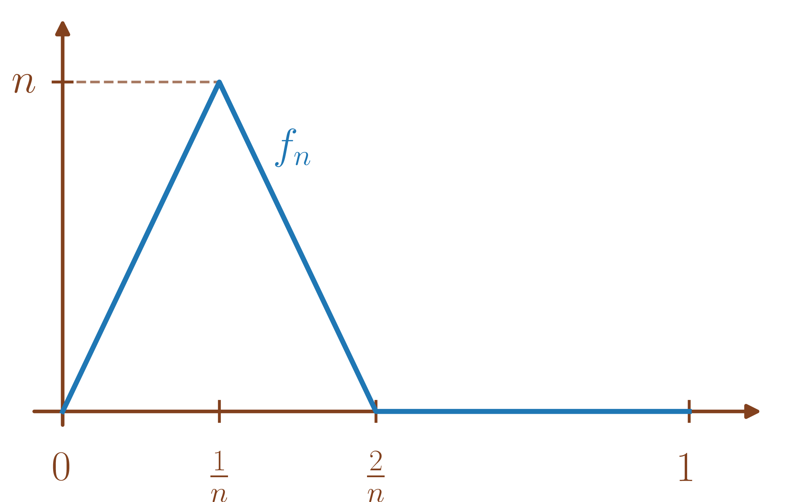
Alors, on a montré (voir le cours sur les suites de fonctions) \(f_n \xrightarrow[{[0,1]}]{\text{CVS}} 0\) donc pour tout \(t \in [0,1], f_n(t) \xrightarrow[n \to +\infty]{} 0.\)
Cependant, pour \(n \in \mathbb{N}^{\star},\) \(\int_0^1f_n(t)dt\) se calcule comme l’aire d’un triangle tel que \(\int_0^1f_n(t)dt = \frac{\mathrm{base} \times \mathrm{hauteur}}{2} = \frac{n}{n} = 1.\)
Donc pour tout \(n \in \mathbb{N}^{\star},\) on a \(\int_0^1f_n(t)dt=1\) tandis que \(\int_0^1 \underset{n \to +\infty}{\lim}\text{ }f_n(t)dt = 0.\)
En revanche, pour rappel,
Soient \([a,b]\) un segment de \(\mathbb{R},\) \(\left(f_n\right)_{n \geq 0}\) une suite de fonctions de \(\mathscr{C}_{\mathrm{m}}(\left[a,b\right],\mathbb{K})\) et \(f\) une fonction de \(\mathscr{C}_{\mathrm{m}}(\left[a,b\right],\mathbb{K}).\) Alors, \[f_n \xrightarrow[{[a,b]}]{\text{CVU}} f \Longrightarrow \int_a^b f_n(t) \xrightarrow[n \to +\infty]{} \int_a^b f(t)dt.\]
Pour \(n \in \mathbb{N},\) \[\begin{aligned} \left\|\int_a^b f_n(t)- \int_a^b f(t)dt\right\| & \leq \int_a^b \left\|f_n(t)-f(t)\right\|dt \\ & \leq \int_a^b \left\|f_n-f\right\|_{\infty,[a,b]}dt = (b-a)\left\|f_n-f\right\|_{\infty,[a,b]} \xrightarrow[n \to +\infty]{} 0. \end{aligned}\]
Si \(I = ]a,b], [a,b[\) ou \(]a,b[\) est borné (ie \(a,b \in \mathbb{R}\)), soient \(\left(f_n\right)_{n \geq 0}\) une suite de fonctions de \(\mathscr{C}_{\mathrm{m}}(I,E)\) et \(f\) une fonction de \(\mathscr{C}_{\mathrm{m}}(I,E).\) Alors, on a \[f_n \xrightarrow[{I}]{\text{CVU}} f \Longrightarrow \int_a^b f_n(t) \xrightarrow[n \to +\infty]{} \int_a^b f(t)dt.\]
Pour \(n \in \mathbb{N},\) \[\begin{aligned} \left\|\int_a^b f_n(t)- \int_a^b f(t)dt\right\| & \leq \int_a^b \left\|f_n(t)-f(t)\right\|dt \\ & \leq \int_a^b \left\|f_n-f\right\|_{\infty,I}dt = \underbrace{(b-a)}_{< +\infty}\left\|f_n-f\right\|_{\infty,I} \xrightarrow[n \to +\infty]{} 0. \end{aligned}\]
Si \(I = ]a,b], [a,b[\) ou \(]a,b[\) n’est pas borné, soient \(\left(f_n\right)_{n \geq 0}\) une suite de fonctions de \(\mathscr{C}_{\mathrm{m}}(I,E)\) et \(f\) une fonction de \(\mathscr{C}_{\mathrm{m}}(I,E).\) Alors, on a en général \[f_n \xrightarrow[{I}]{\text{CVU}} f \centernot{\Longrightarrow} \int_a^b f_n(t) \xrightarrow[n \to +\infty]{} \int_a^b f(t)dt.\]
On considère la suite \(\left(f_n\right)_{n \geq 1}\) définie comme ci-contre.
Autrement dit,
\(\begin{array}{lllll} f_n & : & [0,+\infty[ & \to & \mathbb{R} \\ & & x & \mapsto & \left\{ \begin{array}{ll} 0 & \mbox{si $x =0$} \\ \frac{1}{\sqrt{n}} & \mbox{si $x = n$} \\ & \\ 0 & \mbox{si $x \geq 2n$} \\ & \\ \text{affine} & \mbox{sinon.} \\ \end{array} \right. \end{array} .\)
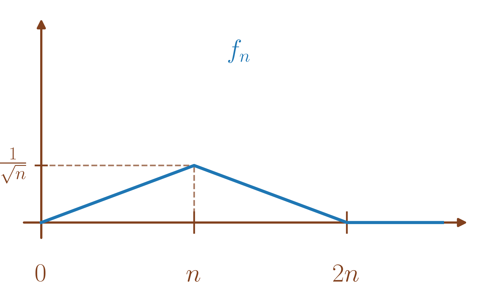
Alors, pour \(n \in \mathbb{N}^{\star},\) \(\left\|f_n\right\|_{\infty,\mathbb{R}^{+}} = \frac{1}{\sqrt{n}} \xrightarrow[n \to +\infty]{} 0.\)
Cependant, pour \(n \in \mathbb{N}^{\star},\) \(\int_0^1f_n(t)dt\) se calcule comme l’aire d’un triangle tel que \(\int_0^1f_n(t)dt = \frac{\mathrm{base} \times \mathrm{hauteur}}{2} = \frac{\frac{1}{\sqrt{n}} \times 2n}{2} = \sqrt{n} \xrightarrow[n \to +\infty]{} +\infty.\)
(Théorème de convergence dominée) Soient \(\left(f_n\right)_{n \geq 0}\) une suite de fonctions de \(\mathscr{C}_{\mathrm{m}}(I,E)\) et \(f\) une fonction de \(\mathscr{C}_{\mathrm{m}}(I,E).\)
On suppose
Pour tout \(t \in I,\) \(f_n(t) \xrightarrow[n \to +\infty]{} f(t).\)
\(\left.\begin{array}{l} \text{Il existe $\varphi: I \to \mathbb{R}^{+}$ intégrable sur $I$ telle que} \\ \begin{array}{l} \forall n \in \mathbb{N}, \\ \forall t \in I, \end{array} \left\|f_n(t)\right\| \leq \varphi(t). \end{array}\right\} \text{«~l'hypothèse de domination ~»}\)
Alors, les fonctions \(f_n\) pour \(n \in \mathbb{N}\) et la fonction \(f\) sont intégrables sur \(I\) et \[\int_I f_n(t) dt \xrightarrow[n \to +\infty]{} \int_I f(t)dt.\]
Admis.
Remarquons juste qu’on a l’intégrabilité sur \(I\) des fonctions \(f_n\) pour \(n \in \mathbb{N}\) via \[\forall n \in \mathbb{N}, \forall t \in I, \left\|f_n(t)\right\| \leq \varphi(t)\] avec \(\varphi: I \to \mathbb{R}^{+}\) intégrable
et l’intégrabilité sur \(I\) de \(f\) en passant à la limite quand \(n \xrightarrow{} +\infty\) pour tout \(t \in I\) dans l’inégalité précédente telle que \[\forall t \in I, \left\|f(t)\right\| \leq \varphi(t)\] avec \(\varphi: I \to \mathbb{R}^{+}\) intégrable.
On peut remplacer l’hypothèse de domination par \[\begin{array}{l}\text{Il existe $\varphi: I \to \mathbb{R}^{+}$ intégrable sur $I,$} \\ \text{il existe $N \in \mathbb{N}$} \end{array} \text{tels que} \begin{array}{l} \forall n \geq N, \\ \forall t \in I, \end{array} \left\|f_n(t)\right\| \leq \varphi(t).\]
(Généralisation du théorème de convergence dominée) Soient \(A\) un ensemble d’un espace vectoriel normé, \(\left(f_x\right)_{x \in A}\) une famille de fonctions de \(\mathscr{C}_{\mathrm{m}}(I,E)\) et \(f\) une fonction de \(\mathscr{C}_{\mathrm{m}}(I,E).\)
Soit \(a \in \overline{A}\) (avec éventuellement \(a = \pm \infty\) si \(A \subset \mathbb{R}\)).
On suppose
Pour tout \(t \in I,\) \(f_x(t) \xrightarrow[x \to a]{} f(t).\)
\(\begin{array}{l} \text{Il existe $\varphi: I \to \mathbb{R}^{+}$ intégrable sur $I$ telle que} \\ \begin{array}{l} \forall x \in A, \\ \forall t \in I, \end{array} \left\|f_x(t)\right\| \leq \varphi(t). \end{array}\)
Alors, les fonctions \(f_x\) pour \(x \in A\) et la fonction \(f\) sont intégrables sur \(I\) et \[\int_I f_x(t) dt \xrightarrow[x \to a]{} \int_I f(t)dt.\]
D’abord, on a l’intégrabilité sur \(I\) des fonctions \(f_x\) pour \(x \in A\) via \[\forall x \in A, \forall t \in I, \left\|f_n(t)\right\| \leq \varphi(t)\] avec \(\varphi: I \to \mathbb{R}^{+}\) intégrable
et l’intégrabilité sur \(I\) de \(f\) en passant à la limite quand \(x \xrightarrow{} a\) pour tout \(t \in I\) dans l’inégalité précédente telle que \[\forall t \in I, \left\|f(t)\right\| \leq \varphi(t)\] avec \(\varphi: I \to \mathbb{R}^{+}\) intégrable.
Ensuite, \[\int_I f_x(t) dt \xrightarrow[x \to a]{} \int_I f(t)dt \iff \left\{\begin{array}{l} \text{Pour toute suite $\left(x_n\right)_{n \geq 0}$ de $A$ telle que $x_n \xrightarrow[n \to +\infty]{} a,$} \\ \int_I f_{x_n}(t) dt \xrightarrow[n \to +\infty]{} \int_I f(t)dt. \end{array}\right.\]
Or, soit \(\left(x_n\right)_{n \geq 0}\) une suite de \(A\) telle que \(x_n \xrightarrow[n \to +\infty]{} a,\)
Pour tout \(t \in I,\) \(f_{x_n}(t) \xrightarrow[n \to +\infty]{} f(t).\)
Pour tout \(n \in \mathbb{N},\) pour tout \(t \in I,\) \(\left\|f_{x_n}(t)\right\| \leq \varphi(t).\)
Donc par le théorème de convergence dominée, \[\int_I f_{x_n}(t) dt \xrightarrow[n \to +\infty]{} \int_I f(t)dt.\]
On peut remplacer l’hypothèse de domination par \[\begin{array}{l}\text{Il existe $\varphi: I \to \mathbb{R}^{+}$ intégrable sur $I,$} \\ \text{il existe $V$ voisinage de $A$} \end{array} \text{tels que} \begin{array}{l} \forall x \in V \cap A, \\ \forall t \in I, \end{array} \left\|f_x(t)\right\| \leq \varphi(t).\]
Pour \(n \in \mathbb{N}^{\star},\) on considère \(u_n = \int_0^{+\infty} \left(1+\frac{t}{n}\right)^n e^{-2t}t^5dt.\)
Montrer que \(u_n\) est bien définie pour \(n \in \mathbb{N}^{\star}.\)
Déterminer la limite de \(u_n\) quand \(n \xrightarrow{}+\infty.\)
Pour \(n \in \mathbb{N}^{\star},\) \(t \in \mathbb{R}^{+}\mapsto \left(1+\frac{t}{n}\right)^n e^{-2t}t^5\) est continue.
De plus, \(\left(1+\frac{t}{n}\right)^n e^{-2t}t^5 \underset{t\to +\infty}{\sim} \frac{t^{n+5}}{n^n}e^{-2t} \underset{t\to +\infty}{o}\left(\frac{1}{t^2}\right)\) par croissances comparées.
Donc \(u_n\) est bien définie pour \(n \in \mathbb{N}^{\star}.\)
Utilisons le théorème de convergence dominée. On pose \(\begin{array}{lllll} f_n & : & \mathbb{R}^{+} & \to & \mathbb{R} \\ & & t & \mapsto & \left(1+\frac{t}{n}\right)^n e^{-2t}t^5 \end{array}\) pour \(n \in \mathbb{N}^{\star}.\)
Pour \(t \in \mathbb{R}^{+\star}\) et \(n \in \mathbb{N}^{\star},\) \(f_n(t) = e^{n\ln\left(1+\frac{t}{n}\right)}e^{-2t}t^5.\)
Or, \(\ln\left(1+\frac{t}{n}\right) \underset{n\to +\infty}{\sim} \frac{t}{n}\) donc \(n\ln\left(1+\frac{t}{n}\right) \underset{n\to +\infty}{\sim} t\) puis \(n\ln\left(1+\frac{t}{n}\right) \xrightarrow[n \to +\infty]{} t\) donc \(e^{n\ln\left(1+\frac{t}{n}\right)} \xrightarrow[n \to +\infty]{} e^t\)
et enfin \(f_n(t) \xrightarrow[n \to +\infty]{} e^{-t}t^5.\)
Pour \(t= 0,\) \(f_n(0) = 0 \xrightarrow[n \to +\infty]{} e^{-0}0^5.\)
Pour \(t \in \mathbb{R}^{+}\) et \(n \in \mathbb{N}^{\star},\) \[\begin{aligned} \left|f_n(t)\right| & = f_n(t) \\ & = e^{n\ln\left(1+\frac{t}{n}\right)}e^{-2t}t^5 \\ & \leq e^{n\frac{t}{n}}e^{-2t}t^5 \text{ car $\ln(1+x) \leq x$ pour $x > -1$ par concavité de $\ln$} \\ & \leq e^{-t}t^5. \end{aligned}\] Donc en posant \(\begin{array}{lllll} \varphi & : & \mathbb{R}^{+} & \to & \mathbb{R} \\ & & t & \mapsto & e^{-t}t^5 \end{array} ,\) \(\varphi\) est intégrable car \(\varphi(t) = \underset{t\to +\infty}{o}\left(\frac{1}{t^2}\right)\) par croissances comparées et \[\forall n \in \mathbb{N}^{\star}, \forall t \in \mathbb{R}^{+}, \left|f_n(t)\right| \leq \varphi(t),\] ce qui constitue l’hypothèse de domination.
On en déduit par le théorème de convergence dominée que \[u_n \xrightarrow[n \to +\infty]{} \int_0^{+\infty} e^{-t}t^5dt = \Gamma(6) = 5! = 120.\] (voir l’exercice [exoc:premier_exo_Gamma] pour la définition de \(\Gamma\) et la valeur \(\Gamma(6)\)).
Pour \(n \in \mathbb{N},\) on considère \(u_n = \int_0^{\tfrac{\pi}{2}} \left(\cos t\right)^n dt.\)
Déterminer la limite de \(u_n\) quand \(n \xrightarrow{} +\infty.\)
Pour \(n \in \mathbb{N},\) on considère \(x_n = \sqrt{n}u_n.\) Montrer \(x_n \xrightarrow[n \to +\infty]{} \int_0^{+\infty}e^{-\frac{x^2}{2}}dx.\)
On admet \(u_n \underset{n\to +\infty}{\sim} \sqrt{\frac{\pi}{2n}}\) (que l’on peut montrer par le calcul de \(\left(u_n\right)\) qui est la suite des intégrales de Wallis). En déduire la valeur de \(\Gamma\left(\frac{1}{2}\right)\) (voir l’exercice [exoc:premier_exo_Gamma] pour la définition de \(\Gamma\)).
On utilise le théorème de convergence dominée.
Pour tout \(t \in \left]0,\frac{\pi}{2}\right],\) \(\left|\cos t\right| < 1.\)
Donc \(\left(\cos t\right)^n \xrightarrow[n \to +\infty]{} 0\) et \(\left(\cos 0\right)^n =1 \xrightarrow[n \to +\infty]{} 1\)
Pour tout \(n \in \mathbb{N},\) \(t \in \left[0,\frac{\pi}{2}\right],\)
\(\left|\cos t\right|^n \leq 1\) et \(t \in \left[0,\frac{\pi}{2}\right] \mapsto 1\) est intégrable.
On en déduit donc \[u_n \xrightarrow[n \to +\infty]{} \int_0^{\frac{\pi}{2}}f(t)dt = 0 \text{ avec } \begin{array}{lllll} f & : & \left[0,\frac{\pi}{2}\right] & \to & \mathbb{R} \\ & & t & \mapsto & \left\{\begin{array}{ll} 0 & \mbox{ si $t > 0,$} \\ 1 & \mbox{ si $t=0.$} \end{array}\right. \end{array}\]
Pour \(n \in \mathbb{N},\) \(x_n = \int_0^{\tfrac{\pi}{2}} \sqrt{n}\left(\cos t\right)^n dt.\)
La convergence dominée ne va pas aboutir car \(\sqrt{n}\left(\cos t\right)^n \xrightarrow[n \to +\infty]{} 0\) pour \(t \in \left]0,\frac{\pi}{2}\right]\) et on veut montrer \(x_n \centernot{\xrightarrow[n \to +\infty]{}} 0.\)
Procédons plutôt au changement de variable \(u = \sqrt{n}t \Longrightarrow du = \sqrt{n}dt\) pour obtenir \[x_n = \int_0^{\sqrt{n}\tfrac{\pi}{2}} \left(\cos \left(\frac{u}{\sqrt{n}}\right)\right)^n du.\] C’est une bonne piste car pour \(u > 0\) et \(n \in \mathbb{N}^{\star},\) \(\left(\cos \left(\frac{u}{\sqrt{n}}\right)\right)^n = e^{n\ln\left(\cos \left(\frac{u}{\sqrt{n}}\right)\right)}.\)
Or, \(\cos \left(\frac{u}{\sqrt{n}}\right) \xrightarrow[n \to +\infty]{} 1\) et \(\ln(x) \underset{x\to 1}{\sim} x-1\) donc \(\ln\left(\cos \left(\frac{u}{\sqrt{n}}\right)\right)\underset{n\to +\infty}{\sim} \cos \left(\frac{u}{\sqrt{n}}\right)-1.\)
De plus, \(\cos \left(\frac{u}{\sqrt{n}}\right) -1\underset{n\to +\infty}{\sim}-\frac{1}{2}\frac{u^2}{n}\) donc \(n\ln\left(\cos \left(\frac{u}{\sqrt{n}}\right)\right) \underset{n\to +\infty}{\sim} -\frac{n}{2}\frac{u^2}{n} = -\frac{u^2}{2}.\)
Finalement, \(n\ln\left(\cos \left(\frac{u}{\sqrt{n}}\right)\right) \xrightarrow[n \to +\infty]{} -\frac{u^2}{2}\) puis \(\left(\cos \left(\frac{u}{\sqrt{n}}\right)\right)^n = e^{n\ln\left(\cos \left(\frac{u}{\sqrt{n}}\right)\right)} \xrightarrow[n \to +\infty]{} e^{-\frac{u^2}{2}}.\)
Seulement, un détail ne rentre pas dans l’énoncé du théorème de convergence dominée : les bornes dépendent de \(n.\) Pour surmonter ce problème, on considère \(\begin{array}{lllll} f_n & : & \mathbb{R}^{+} & \to & \mathbb{R} \\ & & u & \mapsto & \left\{\begin{array}{ll} \left(\cos \left(\frac{u}{\sqrt{n}}\right)\right)^n & \mbox{si $u \leq \sqrt{n}\tfrac{\pi}{2}$} \\ 0 & \mbox{sinon.} \end{array}\right. \end{array}\) pour \(n \in \mathbb{N}^{\star}\) qui est continue par morceaux et telle que \(x_n =\int_0^{+\infty} f_n(u)du.\) Appliquons maintenant le théorème de convergence dominée.
Pour \(u \in \mathbb{R}^{+\star},\) il existe \(N \in \mathbb{N}^{\star}\) tel que \(\sqrt{N}\frac{\pi}{2} \geq u\) et donc pour \(n \geq N,\) \(f_n(u) = \left(\cos \left(\frac{u}{\sqrt{n}}\right)\right)^n \xrightarrow[n \to +\infty]{} e^{-\frac{u^2}{2}}\) par ce qui précède.
Pour \(u \in \mathbb{R}^{+},\) \(n \in \mathbb{N},\) \[\left|f_n(u)\right| = \left(\cos \left(\frac{u}{\sqrt{n}}\right)\right)^n = e^{n\ln\left(\cos \left(\frac{u}{\sqrt{n}}\right)\right)} \leq e^{n\left(\cos \left(\frac{u}{\sqrt{n}}\right)-1\right)}\text{ par concavité du $\ln.$}\] Or, rappelons que par convexité de \(\sin\) sur \(\left[0,\frac{\pi}{2}\right],\) on a \(\sin t \geq \frac{2}{\pi}t\) pour \(t \in \left[0,\frac{\pi}{2}\right].\)
On a donc pour \(x \in \left[0,\frac{\pi}{2}\right],\) \(1-\cos(x) = \int_0^x \sin(t)dt \geq \frac{2}{\pi}\int_0^xtdt = \frac{x^2}{\pi} \Longrightarrow \cos(x)-1 \leq -\frac{x^2}{\pi}.\)
Or pour \(u \in \left[0,\sqrt{n}\frac{\pi}{2}\right[,\) \(\frac{u}{\sqrt{n}} \in \left[0,\frac{\pi}{2}\right[\) donc pour \(u \in \mathbb{R}^{+},\) \(n \in \mathbb{N},\) \[\left|f_n(u)\right| \leq e^{n\left(-\frac{u^2}{n\pi}\right)} = e^{-\frac{u^2}{\pi}}.\] et \(u \in \mathbb{R}^{+}\mapsto e^{-\frac{u^2}{\pi}}\) est intégrable (continue en \(0,\) \(=\underset{u\to +\infty}{o}\left(\frac{1}{u^2}\right)\) par croissances comparées).
On en déduit donc bien \[\sqrt{n}x_n \xrightarrow[n \to +\infty]{} \int_0^{+\infty}e^{-\frac{x^2}{2}}dx\] par théorème de convergence dominée.
On a donc \(\sqrt{n}x_n \underset{n\to +\infty}{\sim} \sqrt{\frac{\pi}{2}} = \int_0^{+\infty}e^{-\frac{x^2}{2}}dx.\)
Or, par le changement de variable \(\frac{1}{2} x^2 = t \iff x = \sqrt{2t} \Longrightarrow dx = \frac{1}{\sqrt{2t}}dt,\) on a \[\int_0^{+\infty}e^{-\frac{x^2}{2}}dx = \int_0^{+\infty} \frac{1}{\sqrt{2t}} e^{-t}dt = \frac{1}{\sqrt{2}}\int_0^{+\infty} t^{-\frac{1}{2}} e^{-t}dt = \frac{\Gamma\left(\frac{1}{2}\right)}{\sqrt{2}}.\]
Donc \(\Gamma\left(\frac{1}{2}\right) = \sqrt{\pi}.\)
On a donc \(\Gamma\left(\frac{3}{2}\right) = \Gamma\left(\frac{1}{2}+1\right) = \frac{1}{2}\Gamma\left(\frac{1}{2}\right) = \frac{\sqrt{\pi}}{2}.\) (voir l’exercice [exoc:premier_exo_Gamma] qui fournit \(\Gamma(x+1) = x \Gamma(x)\) pour \(x > 0\)).
Pour \(x > 0\) et \(n \in \mathbb{N}^{\star},\) on pose \[u_n(x) = \int_0^{+\infty} \left(1+\frac{t}{n}\right)^n e^{-xt}t^3dt.\]
Soit \(n \in \mathbb{N},\) déterminer \(\underset{x \to +\infty}{\lim}\text{ } u_n(x).\)
Soit \(x >0,\) déterminer \(\underset{n \to +\infty}{\lim}\text{ } u_n(x).\)
Soit \(n \in \mathbb{N}^{\star},\) on pose On pose \(\begin{array}{lllll} f_x & : & \mathbb{R}^{+} & \to & \mathbb{R} \\ & & t & \mapsto & \left(1+\frac{t}{n}\right)^n e^{-xt}t^3 \end{array}\) pour \(x \in \mathbb{R}^{+\star}.\)
Pour \(t \in \mathbb{R}^{+\star},\) \[\left(1+\frac{t}{n}\right)^n e^{-xt}t^3 \xrightarrow[x \to +\infty]{} 0 \text{ par croissances comparées}.\] et pour \(t = 0,\) \(\left(1+\frac{t}{n}\right)^n e^{-xt}t^3= 0.\)
Pour tout \(t \in \mathbb{R}^{+}\) et \(x \in \mathbb{R}^{+\star},\) \[\left|f_x(t)\right| = \left(1+\frac{t}{n}\right)^n e^{-xt}t^3 \leq \left(1+\frac{t}{n}\right)^nt^3\] avec \(t \in \mathbb{R}^{+}\mapsto \left(1+\frac{t}{n}\right)^nt^3\) qui ne dépend pas de \(x\) mais n’est pas intégrable sur \(\mathbb{R}^{+}.\)
Cependant, on peut se contenter de regarder un voisinage de \(+\infty\) (pour \(x\)). Pour tout \(t \in \mathbb{R}^{+}\) et \(x \in \left[1,+\infty\right[,\) \[\left|f_x(t)\right| = \left(1+\frac{t}{n}\right)^n e^{-xt}t^3 \leq \left(1+\frac{t}{n}\right)^ne^{-t}t^3\] avec \(t \in \mathbb{R}^{+}\mapsto \left(1+\frac{t}{n}\right)^nt^3e^{-t}\) qui ne dépend pas de \(x\) et est intégrable sur \(\mathbb{R}^{+}.\) On a donc l’hypothèse de domination.
Par théorème de convergence dominée, \[u_n(x) \xrightarrow[x \to +\infty]{} 0.\]
Soit \(x >0,\) on pose On pose \(\begin{array}{lllll} f_n & : & \mathbb{R}^{+} & \to & \mathbb{R} \\ & & t & \mapsto & \left(1+\frac{t}{n}\right)^n e^{-xt}t^3 \end{array}\) pour \(n \in \mathbb{N}^{\star}.\)
Commençons par traiter le cas \(x > 1,\) qui apparaîtra naturellement dans l’utilisation du théorème de convergence dominée.
Pour \(t \in \mathbb{R}^{+\star},\) \[\left(1+\frac{t}{n}\right)^n e^{-xt}t^3 \xrightarrow[n \to +\infty]{} e^{(1-x)t}t^3.\] et pour \(t = 0,\) \(\left(1+\frac{t}{n}\right)^n e^{-xt}t^3= 0.\)
Pour \(t \in \mathbb{R}^{+}\) et \(n \in \mathbb{N}^{\star},\) \[\begin{aligned} \left|f_n(t)\right| & = f_n(t) \\ & = e^{n\ln\left(1+\frac{t}{n}\right)}e^{-xt}t^3 \\ & \leq e^{n\frac{t}{n}}e^{-xt}t^3 \text{ car $\ln(1+x) \leq x$ pour $x > -1$ par concavité de $\ln$} \\ & \leq e^{(1-x)t}t^3. \end{aligned}\]
Donc pour \(1-x < 0 \iff x > 1,\)\(\begin{array}{lllll} \varphi & : & \mathbb{R}^{+} & \to & \mathbb{R} \\ & & t & \mapsto & e^{(1-x)t}t^3 \end{array}\) est intégrable car \(\varphi(t) = \underset{t\to +\infty}{o}\left(\frac{1}{t^2}\right)\) par croissances comparées et \[\forall n \in \mathbb{N}^{\star}, \forall t \in \mathbb{R}^{+}, \left|f_n(t)\right| \leq \varphi(t),\] ce qui constitue l’hypothèse de domination.
Donc dans le cas \(x > 1\), par théorème de convergence dominée, \[u_n(x) \xrightarrow[n \to +\infty]{} \int_0^{+\infty} e^{(1-x)t}t^3dt.\] Puis, en faisant le changement de variable \(u = (x-1)t,\) \[\int_0^{+\infty} e^{(1-x)t}t^3dt = \int_0^{+\infty} e^{-u} \frac{u^3}{\left(x-1\right)^3} \frac{du}{\left(x-1\right)^3} = \frac{\Gamma(4)}{(x-1)^4} = \frac{3!}{(x-1)^4} = \frac{6}{(x-1)^4}\] donc \[u_n(x) \xrightarrow[n \to +\infty]{} \frac{6}{(x-1)^4}.\]
Tout ce qui précède ne fonctionne pas dans le cas \(x \in \left]0,1\right]\) car alors \(\begin{array}{lllll} \varphi & : & \mathbb{R}^{+} & \to & \mathbb{R} \\ & & t & \mapsto & e^{(1-x)t}t^3 \end{array}\) n’est pas intégrable. On a quand même \(\left(1+\frac{t}{n}\right)^n e^{-xt}t^3 \xrightarrow[n \to +\infty]{} e^{(1-x)t}t^3.\) mais \(t \in \mathbb{R}^{+}\mapsto e^{(1-x)t}t^3\) est non intégrable (car \(\frac{1}{t} = \underset{t\to +\infty}{o}( e^{\underbrace{(1-x)}_{\geq 0}t}t^3)\) par croissances comparées) et on a donc \(\int_0^b e^{(1-x)t}t^3dt \xrightarrow[b \to +\infty]{} +\infty.\) On va donc montrer assez naturellement \(u_n(x) \xrightarrow[n \to +\infty]{} +\infty.\) Cependant, on ne peut pas utiliser le théorème de convergence dominée pour cette limite infinie.
Soit \(b > 0,\) par positivité de \(t \mapsto \left(1+\frac{t}{n}\right)^n e^{-xt}t^3,\) pour \(n \in \mathbb{N}^{\star},\) on a \[u_n(x) \geq \underbrace{\int_0^b \left(1+\frac{t}{n}\right)^n e^{-xt}t^3dt}_{=\alpha_n(b)}.\]
On applique alors la convergence dominée à \(\alpha_n(b) = \int_0^b \left(1+\frac{t}{n}\right)^n e^{-xt}t^3dt = \int_0^b f_n(t)dt.\)
Pour \(t \in [0,b],\) \[\left(1+\frac{t}{n}\right)^n e^{-xt}t^3 \xrightarrow[n \to +\infty]{} e^{(1-x)t}t^3.\]
Pour \(t \in [0,b]\) et \(n \in \mathbb{N}^{\star},\) \[\begin{aligned} \left|f_n(t)\right| & = f_n(t) \\ & = e^{n\ln\left(1+\frac{t}{n}\right)}e^{-xt}t^3 \\ & \leq e^{n\frac{t}{n}}e^{-xt}t^3 \text{ car $\ln(1+x) \leq x$ pour $x > -1$ par concavité de $\ln$} \\ & \leq e^{(1-x)t}t^3. \end{aligned}\] et \(\begin{array}{lllll} \varphi & : & [0,b] & \to & \mathbb{R} \\ & & t & \mapsto & e^{(1-x)t}t^3 \end{array}\) est intégrable.
Donc par théorème de convergence dominée, \[\alpha_n(b) \xrightarrow[n \to +\infty]{} \underbrace{\int_0^b e^{(1-x)t}t^3dt}_{\alpha(b)}.\]
De plus, \(\alpha(b) = \int_0^b e^{(1-x)t}t^3dt \xrightarrow[b \to +\infty]{} +\infty.\)
Montrons alors \(u_n(x) \xrightarrow[n \to +\infty]{} +\infty.\)
Soit \(A \in \mathbb{R},\) comme \(\alpha(b) \xrightarrow[b \to +\infty]{} +\infty,\) il existe \(B \in \mathbb{R}\) tel que pour tout \(b \geq B,\) \(\alpha(b) \geq A+1.\)
De plus, comme \(\alpha_n(B) \xrightarrow[n \to +\infty]{} \alpha(B),\) il existe \(N \in \mathbb{N}^{\star}\) tel que pour tout \(n \geq N,\) \(\left|\alpha_n(B) - \alpha(B)\right| \leq 1 \Longrightarrow \alpha_n(B) \geq \alpha(B)-1 \geq A.\)
Donc, pour tout \(n \geq N,\) \[u_n(x) \geq A\] et finalement, \(u_n(x) \xrightarrow[n \to +\infty]{} +\infty.\)
On en déduit \[u_n(x) \xrightarrow[n \to +\infty]{} \left\{ \begin{array}{ll} \frac{6}{(x-1)^4} & \mbox{ si $x > 1$}, \\ +\infty & \mbox{ si $x \in \left]0,1\right].$} \end{array} \right.\]
Soient \([a,b]\) un segment de \(\mathbb{R},\) \(\sum_{n \geq n_0} f_n\) une série de fonctions de \(\mathscr{C}_{\mathrm{m}}(\left[a,b\right],\mathbb{K})\) et \(S\) une fonction de \(\mathscr{C}_{\mathrm{m}}(\left[a,b\right],\mathbb{K}).\) Si \(\sum_{n \geq n_0} f_n\) converge uniformément vers \(S\) sur \([a,b]\) alors \[\int_a^b S(t)dt = \sum_{n=n_0}^{+\infty} \int_a^b f_n(t)dt.\] Autrement dit, \[\int_a^b\left(\sum_{n=n_0}^{+\infty} f_n(t)dt\right) = \sum_{n=n_0}^{+\infty} \left(\int_a^b f_n(t)dt\right).\]
(Fubini-Lebesgue) Soit \(\sum_{n \geq 0} f_n\) une série de fonctions de \(\mathscr{C}_{\mathrm{m}}(I,E).\) On suppose
Pour tout \(n \in \mathbb{N},\) \(f_n\) est intégrable sur \(I,\)
\(\sum_{n \geq n_0} f_n\) converge simplement vers \(S\) sur \(I,\)
\(\sum_{n \geq n_0} \int_a^b \left\|f_n(t)\right\|dt\) converge.
Alors, \(S\) est intégrable sur \(I\) et \[\int_a^b S(t)dt = \int_a^b\left(\sum_{n=n_0}^{+\infty} f_n(t)dt\right) = \sum_{n=n_0}^{+\infty} \left(\int_a^b f_n(t)dt\right).\]
Admis.
Calculer \(\int_0^1 \frac{\ln t}{1-t}dt.\)
Commençons par montrer l’existence de cette intégrale.
En 0, \(\frac{\ln t}{1-t} \underset{t\to 0}{\sim} \ln(t) = \underset{t\to 0}{o}\left(\frac{1}{\sqrt{t}}\right).\)‘
En 1, \(\ln t \underset{t\to 1}{\sim} t-1\) donc \(= \frac{\ln t}{1-t} \underset{t\to 1}{\sim} -1\) et l’intégrale y est faussement impropre.
De plus, \[\begin{aligned} \int_0^1 \frac{\ln t}{1-t}dt & = \int_{\left]0,1\right[} \frac{\ln t}{1-t}dt \\ & = \int_{\left]0,1\right[}\left(\sum_{n=0}^{+\infty} t^n \ln tdt\right). \end{aligned}\] On va donc chercher à inverser série et intégrale avec la série de fonctions \(\sum_{n \geq 0} f_n\) où \(\begin{array}{lllll} f_n & : & \left]0,1\right[ & \to & \mathbb{R} \\ & & t & \mapsto & t^n \ln t \end{array}\) pour \(n \in \mathbb{N}.\) Vérifions les hypothèses du théorème de Fubini-Lebesgue.
Pour tout \(n \in \mathbb{N},\) \(f_n\) est intégrable sur \(\left]0,1\right[\) (continue en \(1\) et \(=\underset{t\to 0}{o}\left(\frac{1}{\sqrt{t}}\right)).\)
\(\sum_{n \geq 0} f_n\) converge simplement vers \(t \mapsto \frac{1}{1-t}\) sur \(\left]0,1\right[.\)
De plus, \[\sum_{n=0}^{+\infty} \int_0^1 \left|f_n(t)\right|dt = \sum_{n=0}^{+\infty} -\int_0^1 t^n \ln t dt.\]
Or, en faisant une intégration par parties avec \(u,v\) définies pour \(t \in \left[0,1\right]\) telles que
\(\left\{ \begin{array}{ll} u(t) & = \ln(t) \\ v(t) & = \frac{1}{n+1}t^{n+1}\\ \end{array}\right. \Longrightarrow \left\{ \begin{array}{ll} u'(t) & = \frac{1}{t}\\ v'(t) & = t^n \\ \end{array}\right..\) On a \(u(t)v(t) = \frac{\ln t}{n+1}t^{n+1} \xrightarrow[t \to 0]{} 0\) par croissances comparées et \(u(t)v(t) = \frac{\ln t}{n+1}t^{n+1} \xrightarrow[t \to 1]{} u(1)v(1) = 1\) donc \(\left[u(t)v(t)\right]_0^{1}\) existe et vaut \(0.\)
On en déduit \[\int_0^1 t^n \ln t dt = -\frac{1}{n+1}\int_{0}^{1} t^{n}dt = -\frac{1}{(n+1)^2}.\]
On a donc \(\int_0^1 \left|t^n \ln t \right|dt = \frac{1}{\left(n+1\right)^2} \underset{n\to +\infty}{\sim} \frac{1}{n^2}\) et \(\sum_{n=0}^{+\infty} \int_0^1 \left|f_n(t)\right|dt\) converge.
On en déduit \[\int_0^1 \frac{\ln t}{1-t}dt = \sum_{n=0}^{+\infty}\int_0^1 t^n \ln tdt = -\sum_{n=0}^{+\infty}\frac{1}{(n+1)^2} = -\sum_{n=1}^{+\infty}\frac{1}{n^2} = -\zeta(2) = -\frac{\pi^2}{6}.\]
On considère \(\begin{array}{lllll} f & : & \mathbb{R}^{+\star} & \to & \mathbb{R} \\ & & \alpha & \mapsto & \int_0^{+\infty} \frac{t^\alpha}{e^t-1}dt \end{array}\)
Montrer que \(f\) est bien définie sur \(\mathbb{R}^{+\star}.\)
Exprimer \(f\) à l’aide de fonctions connues.
En \(0\), \(\frac{t^\alpha}{e^t-1} \underset{t\to 0}{\sim} \frac{t^\alpha}{t} = t^{\alpha-1} = \frac{1}{t^{1-\alpha}}\) et \(1-\alpha < 1.\)
En \(+\infty\), \(\frac{t^\alpha}{e^t-1} \underset{t\to +\infty}{\sim} t^\alpha e^{-t} = \underset{t\to +\infty}{o}\left(\frac{1}{t^2}\right)\) par croissance comparées.
Soit \(\alpha \in \mathbb{R}^{+\star},\) \[\begin{aligned} f(\alpha) & = \int_0^{+\infty} \frac{t^\alpha}{e^t-1}dt \\ & = \int_0^{+\infty} \frac{t^\alpha}{e^t} \frac{1}{1-e^{-t}}dt \\ & = \int_{\left]0,+\infty\right[} \frac{t^\alpha}{e^t} \sum_{n=0}^{+\infty} e^{-nt}dt \text{ car $\left|e^{-t}\right| < 1$ pour $t > 0,$} \\ & = \int_{\left]0,+\infty\right[} \sum_{n=0}^{+\infty}t^\alpha e^{-(n+1)t}dt. \end{aligned}\]
On va donc chercher à inverser série et intégrale avec la série de fonctions \(\sum_{n \geq 0} f_n\) où \(\begin{array}{lllll} f_n & : & \left]0,+\infty\right[ & \to & \mathbb{R} \\ & & t & \mapsto & t^\alpha e^{-(n+1)t} \end{array}\) pour \(n \in \mathbb{N}.\) Vérifions les hypothèses du théorème de Fubini-Lebesgue.
Pour tout \(n \in \mathbb{N},\) \(f_n\) est intégrable sur \(\left]0,+\infty\right[\) (continue en \(0\) et \(=\underset{t\to +\infty}{o}\left(\frac{1}{t^2}\right)).\)
\(\sum_{n \geq 0} f_n\) converge simplement vers \(t \mapsto \frac{t^\alpha}{e^t} \frac{1}{1-e^{-t}} = \frac{t^\alpha}{e^t-1}\) sur \(\left]0,+\infty\right[.\)
De plus, en posant \(u = (n+1)t,\) \[\begin{aligned} \int_{\left]0,+\infty\right[} t^\alpha e^{-(n+1)t}dt & = \int_{\left]0,+\infty\right[} \frac{u^\alpha}{(n+1)^\alpha} e^{u}\frac{du}{(n+1)} & = \frac{\Gamma(\alpha+1)}{(n+1)^{\alpha+1}}. \end{aligned}\] Donc \(\sum_{n \geq 0} \int_{\left]0,+\infty\right[} t^\alpha e^{-(n+1)t}dt\) converge (\(\alpha+1 > 1\)).
On en déduit finalement \[\begin{aligned} f(\alpha) & = \sum_{n=0}^{+\infty} \int_{\left]0,+\infty\right[} t^\alpha e^{-(n+1)t}dt & = \sum_{n=0}^{+\infty}\frac{\Gamma(\alpha+1)}{(n+1)^{\alpha+1}} & = \Gamma(\alpha+1)\zeta(\alpha+1). \end{aligned}\]
On considère \(\begin{array}{lllll} f & : & \left]-\infty,1\right[ & \to & \mathbb{R} \\ & & x & \mapsto & \int_0^{+\infty} \frac{e^{xt}}{e^t+1}dt \end{array} .\)
Montrer que \(f\) est développable en série entière en \(0.\)
D’abord, \(f\) existe bien sur \(\left]-\infty,1\right[.\) En effet, soit \(x \in \left]-\infty,1\right[.\)
En 0, \(t \in \mathbb{R}^{+}\mapsto \frac{e^{xt}}{e^t+1}\) est continue,
En \(+\infty,\) \(\frac{e^{xt}}{e^t+1} \underset{t\to +\infty}{\sim} e^{(x-1)t} = \underset{t\to +\infty}{o} \left(\frac{1}{t^2}\right)\) par croissances comparées car \(x-1 < 0.\)
De plus, soit \(x \in \left]-\infty,1\right[,\) \[f(x) = \int_0^{+\infty}\frac{e^{xt}}{e^t+1}dt = \int_0^{+\infty}\sum_{n=0}^{+\infty} \frac{x^nt^n}{n!(e^t+1)}dt.\] On cherche donc à faire une interversion série-intégrale. Vérifions les hypothèses du théorème de Fubini-Lebesgue. On note \(\begin{array}{lllll} f_n & : & \mathbb{R}^{+} & \to & \mathbb{R} \\ & & t & \mapsto & \frac{x^nt^n}{n!(e^t+1)} \end{array}\)
Pour tout \(n \in \mathbb{N},\) \(f_n\) est intégrable (continue en \(0,\) \(\underset{t\to +\infty}{o} \left(\frac{1}{t^2}\right)\) par croissances comparées).
\(\sum_{n \geq 0} f_n\) converge simplement vers \(t \mapsto \frac{e^{xt}}{e^t+1}\) sur \(\mathbb{R}^{+}.\)
De plus, \[\int_0^{+\infty} \left|f_n(t)\right|dt = \frac{\left|x\right|^n}{n!} \int_0^{+\infty} \frac{t^n}{e^t+1}dt \leq \frac{\left|x\right|^n}{n!} \int_0^{+\infty} \frac{t^n}{e^t}dt = \frac{\left|x\right|^n}{n!}\Gamma(n+1) = \left|x\right|^n.\] Donc \(\sum_{n\geq 0} \int_0^{+\infty} \left|f_n(t)\right|dt\) converge pour \(x \in \left]-1,1\right[.\)
On en déduit alors que pour tout \(x \in \left]-1,1\right[,\) \[f(x) = \sum_{n=0}^{+\infty}\left(\int_0^{+\infty} \frac{t^n}{n!(e^t+1)}dt\right)x^n.\] donc \(f\) est développable en série entière en \(0.\)
On rappelle la définition de \(\begin{array}{lllll} \Gamma & : & \mathbb{R}^{+\star} & \to & \mathbb{R} \\ & & x & \mapsto & \int_0^{+\infty}t^{x-1}e^{-t}dt \end{array}\) (voir l’exercice [exoc:premier_exo_Gamma]).
Montrer que \(\Gamma\) est analytique sur \(\mathbb{R}^{+\star},\) ie développable en série entière en tout point \(a \in \mathbb{R}^{+\star}.\)
Soit \(a \in \mathbb{R}^{+\star},\) développer en série entière en \(a\) revient à développer en \(0\) selon \(h,\) la quantité \(\Gamma(a+h).\) Soit \(h > -a,\) \[\begin{aligned} \Gamma(a+h) & = \int_0^{+\infty}t^{a+h-1}e^{-t}dt \\ & = \int_0^{+\infty}t^{a-1}t^he^{-t}dt \\ & = \int_0^{+\infty}t^{a-1}e^{h\ln t}e^{-t}dt \\ & = \int_0^{+\infty}\sum_{n=0}^{+\infty} \frac{h^n \left(\ln t\right)^n}{n!}t^{a-1}e^{-t}dt. \end{aligned}\] On cherche donc à faire une interversion série-intégrale. Vérifions les hypothèses du théorème de Fubini-Lebesgue. On note \(\begin{array}{lllll} f_n & : & \mathbb{R}^{+\star} & \to & \mathbb{R} \\ & & t & \mapsto & \frac{h^n \left(\ln t\right)^n}{n!}t^{a-1}e^{-t} \end{array}\)
Pour tout \(n \in \mathbb{N},\) \(f_n\) est intégrable car
En 0, \(f_n(t) \underset{t\to 0}{\sim} \frac{h^n \left(\ln t\right)^n}{n!}\frac{1}{t^{1-a}} = \underset{t\to 0}{o}\left(\frac{1}{t^\gamma}\right)\) avec \(\gamma \in ]1-a,1[\) par croissances comparées.
En \(+\infty,\) \(f_n(t) = \underset{t\to +\infty}{o} \left(\frac{1}{t^2}\right)\) par croissances comparées.
\(\sum_{n \geq 0} f_n\) converge simplement vers \(t \mapsto t^{a+h-1}e^{-t}\) sur \(\mathbb{R}^{+\star}.\)
De plus, \[\int_0^{+\infty} \left|f_n(t)\right|dt = \frac{\left|h\right|^n }{n!}\int_0^{+\infty} \left|\ln t\right|^n t^{a-1}e^{-t}dt\] Montrons que \(\sum_{n \geq 0} \int_0^{+\infty} \left|f_n(t)\right|dt\) converge. Pour \(N \geq 0,\) \[\begin{aligned} \sum_{n=0}^N \int_0^{+\infty} \left|f_n(t)\right|dt & = \sum_{n=0}^N \frac{\left|h\right|^n }{n!} \int_0^{+\infty} \left|\ln t\right|^n t^{a-1}e^{-t}dt \\ & = \int_0^{+\infty} \sum_{n=0}^N \frac{\left|h\right|^n }{n!}\left|\ln t\right|^n t^{a-1}e^{-t}dt \\ & \leq \int_0^{+\infty} \sum_{n=0}^{+\infty} \frac{\left|h\right|^n }{n!}\left|\ln t\right|^n t^{a-1}e^{-t}dt \\ &= \int_0^{+\infty} e^{\left|h\right|\left|\ln t\right|} t^{a-1}e^{-t}dt. \end{aligned}\] Il s’agit donc de savoir si \(\begin{array}{lllll} \varphi & : & \mathbb{R}^{+\star} & \to & \mathbb{R} \\ & & t & \mapsto & e^{\left|h\right|\left|\ln t\right|} t^{a-1}e^{-t} \end{array}\) est intégrable sur \(\mathbb{R}^{+\star}.\)
En \(0,\) Pour \(t \in \left]0,1\right[,\) \(\varphi(t) = e^{-\left|h\right|\ln t} t^{a-1} e^{-t} = \frac{ e^{-t} }{t^{1-a+\left|h\right|}}\underset{t\to 0}{\sim} \frac{ e^{-t} }{t^{1-a+\left|h\right|}}\) donc \(\varphi\) est intégrable au voisinage de \(0\) si et seulement si \(1-a+\left|h\right| < 1 \iff \left|h\right| < a.\) En \(+\infty,\) \(\varphi(t) = \underset{t\to +\infty}{o}\left(\frac{1}{t^2}\right)\) par croissances comparées.
Donc \(\varphi\) est intégrable donc \(\sum_{n \geq 0} \int_0^{+\infty} \left|f_n(t)\right|dt\) converge.
On en déduit, par théorème de Fubini-Lebesgue, que pour \(h \in \left]-a,a\right[,\) \[\Gamma(a+h) = \sum_{n=0}^{+\infty} \left(\int_0^{+\infty}\frac{ \left(\ln t\right)^n}{n!}t^{a-1}e^{-t}dt\right)h^n.\] Donc pour tout \(x \in \left]0,2a\right[,\) \[\Gamma(x) = \sum_{n=0}^{+\infty} \left(\int_0^{+\infty}\frac{ \left(\ln t\right)^n}{n!}t^{a-1}e^{-t}dt\right)(x-a)^n.\]
Dans toute cette partie, \((F,\left\|\cdot\right\|_F)\) est un espace vectoriel normé et \(A \subset F\) une partie de \(F.\)
On considère une fonction \(\begin{array}{lllll} f & : & A \times I & \to & E \\ & & (x,t) & \mapsto & f(x,t) \end{array} .\)
On suppose de plus que pour tout \(x \in A,\) \(t \mapsto f(x,t)\) est continue par morceaux et que \(\int_a^b f(x,t)dt\) converge.
Alors, la fonction \(\begin{array}{lllll} g & : & A & \to & E \\ & & x & \mapsto & \int_a^b f(x,t)dt \end{array}\) est appelée une intégrale à paramètres.
\(\begin{array}{lllll} \Gamma & : & \mathbb{R}^{+\star} & \to & \mathbb{R} \\ & & x & \mapsto & \int_0^{+\infty}t^{x-1}e^{-t}dt \end{array} .\)
Soit \(\begin{array}{lllll} f & : & A \times I & \to & E \\ & & (x,t) & \mapsto & f(x,t) \end{array} ,\) on suppose
Pour tout \(x \in A,\) \(t \in I \mapsto f(x,t)\) est continue par morceaux,
Pour tout \(t \in I,\) \(x \in A \mapsto f(x,t)\) est continue,
Il existe \(\varphi: I \to \mathbb{R}^{+}\) intégrable sur \(I\) telle que \[\forall x \in A, \forall t \in I, \left\|f(x,t)\right\| \leq \varphi(t).\]
Alors, \(\begin{array}{lllll} g & : & A & \to & E \\ & & x & \mapsto & \int_a^b f(x,t)dt \end{array}\) est continue. \[\left(\text{ ie }\forall x \in A, \int_a^b f(y,t)dt \xrightarrow[y \to x]{} \int_a^b f(x,t)dt.\right)\]
Soit \(z \in A\) et \(\left(x_n\right)\) une suite de \(A\) telle que \(x_n \xrightarrow[n \to +\infty]{} z.\) Alors,
Pour tout \(t \in I,\) \(f(x_n,t) \xrightarrow[n \to +\infty]{} f(z,t)\) car \(x \in A \mapsto f(x,t)\) est continue.
Pour tout \(n \in \mathbb{N},\) \(x_n \in A\) donc \[\forall t \in I, \left\|f(x_n,t)\right\| \leq \varphi(t)\] avec \(\varphi: I \to \mathbb{R}^{+}\) qui est intégrable.
Donc par le théorème de convergence dominée, \[g(x_n) = \int_a^b f(x_n,t)dt \xrightarrow[n \to +\infty]{} \int_a^b f(z,t)dt = g(z).\]
Donc \(g\) est continue en tout \(z \in A.\)
On peut remplacer l’hypothèse 3. dite « de domination » par \[\begin{array}{rl} \boxed{3'.} & \text{L'hypothèse de «~domination locale ~»} \\ & \text{Pour tout } z \in A, \\ &\text{il existe $V_z \in \mathcal{V}(z)$} \text{ et il existe $\varphi_{V_z} : I \mapsto \mathbb{R}^{+}$ intégrable tels que} \\ & \begin{array}{l} \forall x \in V_z \cap A, \\ \forall t \in I, \end{array} \left\|f(x,t)\right\| \leq \varphi_{V_z}(t). \\ \text{ ou }\boxed{3''.} & \text{L'hypothèse de «~domination sur tout compact ~»} \\ & \text{Pour tout compact } B \subset A, \\ & \text{il existe $\varphi_{B} : I \mapsto \mathbb{R}^{+}$ intégrable telle que} \\ & \begin{array}{l} \forall x \in B, \\ \forall t \in I, \end{array} \left\|f(x,t)\right\| \leq \varphi_{B}(t). \\ \text{ ou }\boxed{3'''.} & \text{Si $A \subset \mathbb{R},$ l'hypothèse de «~domination sur tout segment ~»} \\ & \text{Pour tout segment } [c,d] \subset A, \\ & \text{il existe $\varphi_{[c,d]} : I \mapsto \mathbb{R}^{+}$ intégrable telle que} \\ & \begin{array}{l} \forall x \in [c,d], \\ \forall t \in I, \end{array} \left\|f(x,t)\right\| \leq \varphi_{[c,d]}(t). \\ \end{array}\]
On prolonge la fonction \(\Gamma\) définie dans l’exercice [exoc:premier_exo_Gamma] en définissant \[\begin{array}{lllll} \Gamma & : & A & \to & \mathbb{C} \\ & & z & \mapsto & \int_0^{+\infty} t^{z-1}e^{-t}dt \end{array}\] avec \(A = \left\{z \in \mathbb{C}/ \mathop{\mathrm{Re}}(z) > 0\right\}.\)
Montrer que \(\Gamma\) est continue sur \(A.\)
D’abord, \(\Gamma\) est bien continue sur \(A\) car l’intégrable converge absolument pour \(z \in A.\) En effet,
En \(0,\) \(\left|t^{z-1}e^{-t}\right| = t^{\mathop{\mathrm{Re}}(z)-1}e^{-t} \underset{t\to 0}{\sim} \frac{1}{t^{1-\mathop{\mathrm{Re}}(z)}}\) avec \(1-\mathop{\mathrm{Re}}(z) < 1.\)
En \(+\infty,\) \(\left|t^{z-1}e^{-t}\right| = t^{\mathop{\mathrm{Re}}(z)-1}e^{-t} =\underset{t\to +\infty}{o}\left(\frac{1}{t^2}\right)\) par croissances comparées.
Utilisons le théorème de continuité des intégrales à paramètres (Théorème [thm:continuite_integrale_a_parametres]) avec l’hypothèse de domination sur tout compact. On pose \(\begin{array}{lllll} f & : & A \times \mathbb{R}^{+\star} & \to & \mathbb{C} \\ & & (z,t) & \mapsto & t^{z-1}e^{-t} \end{array} .\)
Pour tout \(z \in \mathbb{C},\) \(t \in \mathbb{R}^{+\star}\mapsto t^{z-1}e^{-t}\) est continue donc continue par morceaux.
Pour tout \(t \in \mathbb{R}^{+\star},\) \(z \in A \mapsto t^{z-1}e^{-t} = e^{(z-1)\ln t}e^{-t}\) est continue (par continuité de \(\exp\) sur \(\mathbb{C}\)).
Soit \(B \subset A\) une partie compacte.
Alors, \(\alpha = \inf_{z \in B} \mathop{\mathrm{Re}}(z) = \min_{z\in B} \mathop{\mathrm{Re}}(z)\) car \(z \mapsto \mathop{\mathrm{Re}}(z)\) est continue et \(B\) est un compact. De plus, pour tout \(z \in B,\) \(\mathop{\mathrm{Re}}(z) > 0\) donc \(\alpha > 0.\)
Aussi, \(\beta = \sup_{z \in B} \mathop{\mathrm{Re}}(z) = \max_{z\in B} \mathop{\mathrm{Re}}(z)\) car \(z \mapsto \mathop{\mathrm{Re}}(z)\) est continue et \(B\) est un compact. On a aussi \(\beta \geq \alpha > 0.\)
De plus, pour tout \(z \in B,\) pour tout \(t \in \mathbb{R}^{+\star},\) \[\begin{aligned} \left|f(z,t)\right| & = t^{\mathop{\mathrm{Re}}(z)-1}e^{-t} = e^{\left(\mathop{\mathrm{Re}}(z)-1\right)\ln(t)}e^{-t}. \end{aligned}\] Pour dominer, il faut se méfier du signe du \(\ln.\)
Pour \(t \in \left]0,1\right],\) \(\ln(t) \leq 0\) donc pour \(z \in B,\) \[\begin{aligned} \left|f(z,t)\right| & = e^{\left(\mathop{\mathrm{Re}}(z)-1\right)\underbrace{\ln(t)}_{\leq 0}}e^{-t} \leq e^{\left(\alpha-1\right)\ln(t)}e^{-t} = t^{\alpha-1}e^{-t}. \end{aligned}\] puis pour \(t \in \left]1,+\infty\right[,\) \(\ln(t) > 0\) donc pour \(z \in B,\) \[\begin{aligned} \left|f(z,t)\right| & = e^{\left(\mathop{\mathrm{Re}}(z)-1\right)\underbrace{\ln(t)}_{\geq 0}}e^{-t} \leq e^{\left(\beta-1\right)\ln(t)}e^{-t} = t^{\beta-1}e^{-t}. \end{aligned}\]
Donc en définissant \(\begin{array}{lllll} \varphi & : & \mathbb{R}^{+\star} & \to & \mathbb{R}^{+} \\ & & t & \mapsto & \left\{ \begin{array}{ll} t^{\alpha-1}e^{-t} & \mbox{ si $t \in \left]0,1\right]$} \\ t^{\beta-1}e^{-t}& \mbox{ si $t \in \left]0,+\infty\right[.$} \end{array} \right. \end{array} ,\) on a pour tout \(z \in B\) et \(t \in \mathbb{R}^{+\star},\) \[\left|f(z,t)\right| \leq \varphi(t).\]
De plus, \(\varphi\) est continue par morceaux et
En \(0,\) \(\varphi(t) = t^{\alpha-1}e^{-t} \underset{t\to 0}{\sim} \frac{1}{t^{1-\alpha}}\) avec \(1-\alpha < 1\) (car \(\alpha >0\)).
En \(+\infty,\) \(\varphi(t) = t^{\beta-1}e^{-t} =\underset{t\to +\infty}{o}\left(\frac{1}{t^2}\right)\) par croissances comparées.
Donc \(\varphi\) est intégrable.
On en déduit par le théorème [thm:continuite_integrale_a_parametres] que \(\Gamma\) est continue sur \(A.\)
Par une intégration par parties similaires à celle de l’exercice [exoc:premier_exo_Gamma], on peut montrer que pour tout \(z \in A,\) \(\Gamma(z+1) = z\Gamma(z).\)
(Transformée de Laplace) Soit \(f : \left]0,+\infty\right[ \to \mathbb{C}\) continue par morceaux, on pose \[A = \left\{x \in \mathbb{R}/ t > 0 \mapsto e^{-xt}f(t) \text{ est intégrable sur $\mathbb{R}^{+\star}$}\right\}\] et on suppose \(A \neq \emptyset.\)
On pose \(\begin{array}{lllll} L_f & : & A & \to & \mathbb{C} \\ & & x & \mapsto & \int_0^{+\infty} e^{-xt}f(t)dt \end{array} .\)
Déterminer \(A\) pour \(f : t \mapsto e^{-t^2},\) \(f : t \mapsto \frac{1}{\sqrt{t}}\) et \(f : t \mapsto \frac{1}{\sqrt{t}(t+1)}.\)
Montrer que \(A\) est un intervalle non majoré de \(\mathbb{R}\) ie si \(x \in A\) alors pour \(y \in \mathbb{R},\) \(y > x \Longrightarrow y \in A.\)
Montrer que \(L_f\) est continue sur \(A.\)
Montrer que \(L_f(x) \xrightarrow[x \to +\infty]{} 0.\)
Pour \(f : t \mapsto e^{-t^2},\) soit \(x \in \mathbb{R},\)
En \(0,\) \(t > 0 \mapsto e^{-xt}e^{-t^2}\) est continue en \(0.\)
En \(+\infty,\) \(e^{-xt}e^{-t^2} = \underset{t\to +\infty}{o}\left(\frac{1}{t^2}\right)\) par croissances comparées.
Donc \(A = \mathbb{R}.\)
Pour \(f : t \mapsto \frac{1}{\sqrt{t}},\) soit \(x \in \mathbb{R},\)
En \(0,\) \(\frac{e^{—xt}}{\sqrt{t}} \underset{t\to 0}{\sim} \frac{1}{\sqrt{t}}.\)
En \(+\infty,\)
Si \(x > 0,\) \(\frac{e^{—xt}}{\sqrt{t}}= \underset{t\to +\infty}{o}\left(\frac{1}{t^2}\right)\) par croissances comparées.
Si \(x \leq 0,\) \(\frac{1}{\sqrt{t}} = \underset{t\to +\infty}{O}\left(\frac{e^{—xt}}{\sqrt{t}}\right)\).
Donc \(A = \mathbb{R}^{+\star}.\)
Pour \(f : t \mapsto \frac{1}{\sqrt{t}(t+1)},\) soit \(x \in \mathbb{R},\)
En \(0,\) \(\frac{e^{—xt}}{\sqrt{t}(t+1)} \underset{t\to 0}{\sim} \frac{1}{\sqrt{t}}.\)
En \(+\infty,\)
Si \(x > 0,\) \(\frac{e^{—xt}}{\sqrt{t}(t+1)}= \underset{t\to +\infty}{o}\left(\frac{1}{t^2}\right)\) par croissances comparées.
Si \(x = 0,\) \(\frac{e^{—xt}}{\sqrt{t}(t+1)} = \frac{1}{\sqrt{t}(t+1)}\underset{t\to +\infty}{\sim} \frac{1}{t^{3/2}}.\)
Si \(x < 0,\) \(\frac{1}{\sqrt{t}} = \underset{t\to +\infty}{o}\left(\frac{e^{—xt}}{\sqrt{t}(t+1)}\right)\) par croissances comparées.
Donc \(A = \mathbb{R}^{+}.\)
Si \(x \in A\) et \(x < y,\) pour tout \(t \in I,\) \[0 \leq \left|f(t)e^{-yt}\right| \leq \left|f(t)e^{-xt}\right|\] donc \(y \in A.\) On en déduit alors que \(A\) est un intervalle non majoré de \(\mathbb{R}.\)
Utilisons le théorème de continuité des intégrales à paramètres (Théorème [thm:continuite_integrale_a_parametres]) avec l’hypothèse de domination sur tout segment. On pose \(\begin{array}{lllll} g & : & A \times \mathbb{R}^{+\star} & \to & \mathbb{C} \\ & & (x,t) & \mapsto & e^{-xt}f(t) \end{array} .\)
Pour tout \(x \in A,\) \(t \in \mathbb{R}^{+\star}\mapsto e^{-xt}f(t)\) est continue par morceaux par produit.
Pour tout \(t \in \mathbb{R}^{+\star},\) \(x \in A \mapsto e^{-xt}f(t)\) est continue.
Soit \([a,b] \subset A,\) alors pour tout \(x \in [a,b]\) et \(t \in \mathbb{R}^{+\star},\) \[\left|f(t)e^{-xt}\right| \leq \left|f(t)\right|e^{-at}.\] Or, \(a \in A\) donc \(t \in \mathbb{R}^{+\star}\mapsto \left|f(t)\right|e^{-at}\) est intégrable et l’hypothèse de domination est vérifiée.
On en déduit que \(L_f\) est continue sur \(A.\)
Utilisons le théorème de convergence dominée généralisé (théorème [thm:CV_generalisée]). On pose encore \(\begin{array}{lllll} g & : & A \times \mathbb{R}^{+\star} & \to & \mathbb{C} \\ & & (x,t) & \mapsto & e^{-xt}f(t) \end{array} .\)
Pour tout \(t \in \mathbb{R}^{+\star},\) \(e^{-xt}f(t) \xrightarrow[x \to +\infty]{} 0.\)
Soit \(a \in A,\) alors par la question \(2.,\) \(\left[a,+\infty\right[ \subset A\) et pour tout \(x \in \left[a,+\infty\right[,\) \[\left|f(t)e^{-xt}\right| \leq \left|f(t)\right|e^{-at}.\] Or, \(a \in A\) donc \(t \in \mathbb{R}^{+\star}\mapsto \left|f(t)\right|e^{-at}\) est intégrable et l’hypothèse de domination est vérifiée.
On en déduit que \(L_f(x)\xrightarrow[x \to +\infty]{} \int_0^{+\infty} 0dt = 0.\)
(Transformée de Fourier) Soit \(f : \mathbb{R}\to \mathbb{C}\) continue par morceaux et intégrable. On pose \[\begin{array}{lllll} \widehat{f} & : & \mathbb{R} & \to & \mathbb{C} \\ & & x & \mapsto & \int_{-\infty}^{+\infty} e^{ixt}f(t)dt. \end{array}\]
Montrer que \(\widehat{f}\) est bien définie sur \(\mathbb{R}.\)
Montrer que \(\widehat{f}\) est continue sur \(\mathbb{R}.\)
Montrer que \(\widehat{f}\) est bornée.
Montrer que \(\widehat{f}(x) \xrightarrow[x \to +\infty]{} 0.\)
Pour \(x \in \mathbb{R},\) \(t \in \mathbb{R}\mapsto e^{ixt}f(t)\) est continue par morceaux et pour \(t \in \mathbb{R},\) \(\left|e^{ixt}f(t)\right| = \left|f(t)\right|\) avec \(f\) intégrable donc \(t \in \mathbb{R}\mapsto e^{ixt}f(t)\) est intégrable.
Utilisons le théorème de continuité des intégrales à paramètres (Théorème [thm:continuite_integrale_a_parametres]).
Pour tout \(x \in \mathbb{R},\) \(t \in \mathbb{R}\mapsto e^{ixt}f(t)\) est continue par morceaux,
Pour tout \(t \in \mathbb{R},\) \(x \in \mathbb{R}\mapsto e^{ixt}f(t)\) est continue,
Pour tout \(t \in \mathbb{R},\) \(x \in \mathbb{R},\) \[\left|e^{ixt}f(t)\right|= \left|f(t)\right|\] avec \(f\) intégrable.
Donc \(\widehat{f}\) est continue sur \(\mathbb{R}.\)
Pour tout \(x \in \mathbb{R},\) \[\left|\widehat{f}(x)\right| \leq \int_{-\infty}^{+\infty} \left|e^{ixt}f(t)\right|dt = \int_{-\infty}^{+\infty} \left|f(t)\right|dt= \left\|f\right\|_1 < +\infty.\]
\(\left\|\widehat{f}\right\|_\infty\leq \left\|f\right\|_1.\)
Il n’y a aucun espoir d’utiliser la convergence dominée car pour \(t \in \mathbb{R}, x \in \mathbb{R},\) \(\left|e^{ixt}f(t)\right| = \left|f(t)\right| \centernot{\xrightarrow[x \to +\infty]{}} 0\) en général. Cependant, rappelons ce lemme assez similairement démontré dans le cours sur les suites de fonctions, que l’on remontre ici.
Soient \(a < b \in \mathbb{R}\) \(g \in \mathscr{C}_{\mathrm{m}}\left([a,b],\mathbb{K}\right),\) \[\int_a^b g(t)e^{ixt}dt \xrightarrow[x \to +\infty]{} 0.\]
Commençons par le cas où \(g\) vaut une constante \(\ell \in \mathbb{K}\) sur \([a,b].\)
On a alors pour \(n \in \mathbb{N}^{\star},\)
\(\int_a^b g(t)e^{ixt}dt = \ell\int_a^b e^{ixt}dt =\ell \left[\frac{1}{ix}e^{ixt}\right]_{a}^b = \frac{\ell}{ix}\left(e^{ixb}-e^{ixa}\right)\)
donc \(\left|\int_a^b g(t)e^{ixt}dt\right| \leq \frac{2\left|\ell\right|}{\left|x\right|} \xrightarrow[x \to +\infty]{} 0.\)
Puis, traitons le cas où \(g \in \mathscr{E}\left([a,b],\mathbb{K}\right).\)
Dans ce cas, il existe \(a= a_0 < a_1 \ldots < a_p = b\) une subdivision de \([a,b]\) telle que pour tout \(0 \leq k \leq p-1,\) \(g_{| ]a_k, a_{k+1}[}\) vaut une constante \(\ell_k \in \mathbb{K}\) sur \(]a_k,a_{k+1}[.\)
On a donc pour \(x \in \mathbb{R},\) \[\begin{aligned} \int_a^b g(t)e^{ixt}dt & = \int_a^b g(t) e^{ixt}dt \\ & = \sum_{k=0}^{p-1} \int_{a_k}^{a_{k+1}} g(t) e^{ixt}dt\\ & = \sum_{k=0}^{p-1} \underbrace{\int_{a_k}^{a_{k+1}} \ell_k e^{ixt}dt}_{\substack{\xrightarrow[x \to +\infty]{}0 \\ \text{par le cas précédent.}}} \xrightarrow[x \to +\infty]{} 0 \end{aligned}\]
Traitons maintenant le cas général \(g \in \mathscr{C}_{\mathrm{m}}\left([a,b],\mathbb{K}\right).\)
Soit \(\varepsilon >0,\) par le théorème d’approximation uniforme des fonctions continues par morceaux par des fonctions en escalier, il existe \(g_\varepsilon \in \mathscr{E}\left([a,b],\mathbb{K}\right)\) telle que \(\left\|g-g_\varepsilon\right\|_{\infty,[a,b]} < \varepsilon.\)
De plus, par le cas précédent, \(\int_a^b g_\varepsilon(t) e^{ixt}dt \xrightarrow[x \to +\infty]{} 0\) et donc il existe \(A \in \mathbb{R}^{+}\) tel que pour tout \(x \geq A\) \(\left|\int_a^b g_\varepsilon(t) e^{ixt}dt\right| \leq \varepsilon.\)
On a donc pour tout \(x \geq A,\) \[\begin{aligned} \left|\int_a^b g(t)e^{ixt}dt\right| & = \left|\int_a^b \left(g(t)-g_\varepsilon(t)+g_\varepsilon(t) e^{ixt}dt\right)\right| \\ & \leq \left|\int_a^b \left(g(t)-g_\varepsilon(t) e^{ixt}\right)dt\right|+\left|\int_a^b \left(g_\varepsilon(t) e^{ixt}\right)dt\right| \\ & \leq \int_a^b \left\|g(t)-g_\varepsilon(t)\right\|_{\infty,[a,b]}\left| e^{ixt}\right|dt+\varepsilon\\ & \leq \varepsilon\left(b-a+1\right). \end{aligned}\]
Donc \(\int_a^b g(t)e^{ixt}dt \xrightarrow[x \to +\infty]{} 0.\)
Revenons à la question. Soient \(a < b \in \mathbb{R}\) et \(x \in \mathbb{R},\) \[\begin{aligned} \left|\widehat{f}(x)\right| & = \left|\int_{-\infty}^{+\infty} e^{ixt}f(t)dt\right| \\ & \leq \left|\int_{-\infty}^{a} e^{ixt}f(t)dt+\int_{a}^{b} e^{ixt}f(t)dt+\int_{b}^{+\infty} e^{ixt}f(t)dt\right| \\ & \leq \int_{-\infty}^{a} \left|f(t)\right|dt+\left|\int_{a}^{b} e^{ixt}f(t)dt\right|+\int_{b}^{+\infty} \left|f(t)\right|dt \\ \end{aligned}\] Soit \(\varepsilon > 0,\) on fixe maintenant \(a\) tel que \(\int_{-\infty}^{a} \left|f(t)\right|dt \leq \varepsilon\) et \(b > a\) tel que \(\int_{b}^{+\infty} \left|f(t)\right|dt \leq \varepsilon.\)
Par le lemme, il existe \(A \in \mathbb{R}^{+}\) tel que \(x \geq A \Longrightarrow \left|\int_{a}^{b} e^{ixt}f(t)dt\right| \leq \varepsilon\) donc pour tout \(x \geq A,\) \[\begin{aligned} \left|\widehat{f}(x)\right| & \leq \int_{-\infty}^{a} \left|f(t)\right|dt+\left|\int_{a}^{b} e^{ixt}f(t)dt\right|+\int_{b}^{+\infty} \left|f(t)\right|dt \\ & \leq 3\varepsilon. \end{aligned}\]
Donc \(\widehat{f}(x) \xrightarrow[x \to +\infty]{} 0.\)
On suppose maintenant que \(F = \mathbb{R}\) et que \(A \subset \mathbb{R}\) est un intervalle de \(\mathbb{R}.\)
On considère une fonction \(\begin{array}{lllll} f & : & A \times I & \to & E \\ & & (x,t) & \mapsto & f(x,t) \end{array} .\)
En fixant \(t \in I,\) on considère \(\begin{array}{lllll} \psi_t & : & A & \to & E \\ & & x & \mapsto & f(x,t) \end{array} .\)
Si \(\psi_t\) est dérivable en un point \(a \in A\) alors \(\psi_t'(a) = \underset{y \to a}{\lim}\text{ } \frac{f(y,t)-f(a,t)}{y-a}\) est noté \(\frac{\partial f}{\partial x}(a,t)\) et est appelé la dérivée partielle de \(f\) par rapport à \(x\) (ou « sa première variable ») en \(a.\)
Si \(\psi_t\) est \(n\) fois (\(n \in \mathbb{N}\)) dérivable en \(a \in A\) alors \(\psi_t^{(n)}(a)\) est noté \(\frac{\partial^n f}{\partial x^n}(a,t).\)
Pour \(\begin{array}{lllll} f & : & \mathbb{R}\times \mathbb{R}^{+\star} & \to & \mathbb{R} \\ & & (x,t) & \mapsto & t^x = e^{x\ln t} \end{array} ,\)
Pour \(t \in \mathbb{R}^{+\star}\) et \(x \in \mathbb{R},\) \(\frac{\partial f}{\partial x}(x,t) = \ln(t)t^x\) et pour \(n \in \mathbb{N},\) \(\frac{\partial^n f}{\partial x^n}(x,t) = \left(\ln(t)\right)^nt^x.\)
Pour \(t \in \mathbb{R}^{+\star}\) et \(x \in \mathbb{R},\) \(\frac{\partial f}{\partial t}(x,t) = xt^{x-1}\) et pour \(n \in \mathbb{N},\) \(\frac{\partial^n f}{\partial t^n}(x,t) = x\times(x-1)\times\ldots\times(x-n+1)t^{x-n}.\)
Soit \(\begin{array}{lllll} f & : & A \times I & \to & E \\ & & (x,t) & \mapsto & f(x,t) \end{array} ,\) on suppose
Pour tout \(x \in A,\) \(t \in I \mapsto f(x,t)\) est continue par morceaux et intégrable,
Pour tout \(t \in I,\) \(x \in A \mapsto f(x,t)\) est de classe \(\mathscr{C}^1,\)
Pour tout \(x \in A,\) \(t \in I \mapsto \frac{\partial f}{\partial x}(x,t)\) est continue par morceaux
et il existe \(\varphi: I \to \mathbb{R}^{+}\) intégrable sur \(I\) telle que \[\forall x \in A, \forall t \in I, \left\|\frac{\partial f}{\partial x}(x,t)\right\| \leq \varphi(t).\]
Alors, \(\begin{array}{lllll} g & : & A & \to & E \\ & & x & \mapsto & \int_a^b f(x,t)dt \end{array}\) est de classe \(\mathscr{C}^1\) avec pour tout \(x \in A,\) \[g'(x) = \int_a^b \frac{\partial f}{\partial x}(x,t)dt.\]
Soit \(x \in A,\) on va utiliser le théorème de convergence dominée généralisé (théorème [thm:CV_generalisée]) pour déterminer la limite du taux d’accroissement
\(\begin{array}{lllll} T_g^x & : & A \setminus\left\{x\right\} & \to & E \\ & & x & \mapsto & \frac{g(y)-g(x)}{y-x} = \int_a^b \frac{f(y,t)-f(x,t)}{y-x}dt \end{array}\) quand \(y \xrightarrow{} x.\)
On note alors \(\begin{array}{lllll} u_y & : & I & \to & E \\ & & t & \mapsto & \frac{f(y,t)-f(x,t)}{y-x} \end{array}\) pour \(y \neq x \in A.\)
Pour tout \(t \in I,\) \[u_y(t) = \frac{f(y,t)-f(x,t)}{y-x} \xrightarrow[y \to x]{} \frac{\partial f}{\partial x}(x,t).\]
On note \(\begin{array}{lllll} \Psi_t & : & A & \to & E \\ & & z & \mapsto & f(z,t) \end{array}\) pour \(t \in I.\) Par hypothèse, pour tout \(t \in I,\) \(\Psi_t\) est de classe \(\mathscr{C}^1\) sur \(A\) avec \(\Psi_t'(z) = \frac{\partial f}{\partial x}(z,t)\) pour tout \(z \in A.\) Donc par inégalité des accroissements finis, pour tout \(t \in I,\) pour tout \(y \neq x \in A,\) \[\left\|u_y(t)\right\| = \left\|\frac{\psi_t(y)-\psi_t(x)}{y-x}\right\| \leq \sup_{z \in \left[x,y\right]} \left\|\psi'_t(z)\right\| = \sup_{z \in \left[x,y\right]} \left\|\frac{\partial f}{\partial x}(z,t)\right\| \leq \varphi(t)\] avec \(\varphi: I \to \mathbb{R}^{+}\) intégrable sur \(I.\)
Donc par le théorème de convergence dominée généralisé (théorème [thm:CV_generalisée]), \[\frac{g(y)-g(x)}{y-x} \xrightarrow[y \to x]{} \int_a^b \frac{\partial f}{\partial x}(x,t)dt\] et donc \(g\) est bien dérivable en \(x.\) Il reste à voir que \(g\) est de classe \(\mathscr{C}^1,\) ie \(g'\) est continue sur \(A.\) Pour cela, on utilise le théorème de continuité d’intégrales à paramètres (Théorème [thm:continuite_integrale_a_parametres]).
Pour tout \(x \in A,\) \(t \in I \mapsto \frac{\partial f}{\partial x}(x,t)\) est continue par morceaux,
Pour tout \(t \in I,\) \(x \mapsto \frac{\partial f}{\partial x}(x,t)\) est continue,
Pour tout \(t \in I,\) pour tout \(x \in A,\) \[\left\|\frac{\partial f}{\partial x}(x,t)\right\| \leq \varphi(t)\] avec \(\varphi: I \to \mathbb{R}^{+}\) intégrable sur \(I.\)
Donc par le théorème de continuité d’intégrales à paramètres (Théorème [thm:continuite_integrale_a_parametres]), \(g'\) est continue sur \(A\) donc \(g\) est de classe \(\mathscr{C}^1.\)
On peut remplacer l’hypothèse 3. dite « de domination » par \[\begin{array}{rl} \boxed{3'.} & \text{l'hypothèse de «~domination sur tout segment ~»} \\ & \text{Pour tout segment } [c,d] \subset A, \\ & \text{il existe $\varphi_{[c,d]} : I \mapsto \mathbb{R}^{+}$ intégrable telle que} \\ & \begin{array}{l} \forall x \in [c,d], \\ \forall t \in I, \end{array} \left\|f(x,t)\right\| \leq \varphi_{[c,d]}(t). \\ \end{array}\]
Soit \[\begin{array}{lllll} g & : & \mathbb{R}^{+} & \to & \mathbb{R} \\ & & x & \mapsto & \int_0^{+\infty} \frac{e^{-x(1+t^2)}}{1+t^2}dt \end{array}\]
Montrer que \(g\) est continue sur \(\mathbb{R}^{+}.\)
Montrer que \(g\) est de classe \(\mathscr{C}^1\) sur \(\mathbb{R}^{+\star}.\)
Exprimer \(g'\) à l’aide de fonctions usuelles.
En déduire que la valeur de \(\Gamma\left(\frac{1}{2}\right).\)
D’abord, \(g\) est définie sur \(\mathbb{R}^{+}\) car \(t \in \mathbb{R}^{+}\mapsto \frac{e^{-x(1+t^2)}}{1+t^2}\) est continue et en \(+\infty,\) \(\frac{e^{-x(1+t^2)}}{1+t^2} = \underset{t\to +\infty}{O}\left(\frac{1}{t^2}\right).\)
Utilisons maintenant le théorème de continuité d’intégrales à paramètres (Théorème [thm:continuite_integrale_a_parametres]) pour montrer sa continuité.
Pour tout \(x \in \mathbb{R}^{+},\) \(t \in \mathbb{R}^{+}\mapsto \frac{e^{-x(1+t^2)}}{1+t^2}\) est continue donc continue par morceaux.
Pour tout \(t \in \mathbb{R}^{+},\) \(x \in \mathbb{R}^{+}\mapsto\frac{e^{-x(1+t^2)}}{1+t^2}\) est continue.
Pour tout \(x,t \in \mathbb{R}^{+},\) \[\left|\frac{e^{-x(1+t^2)}}{1+t^2}\right| \leq \frac{1}{1+t^2}\] avec \(t \in \mathbb{R}^{+}\mapsto \frac{1}{1+t^2}\) qui est intégrable car continue en \(0\) et \(\underset{t\to +\infty}{\sim} \frac{1}{t^2}.\)
On en déduit que \(g\) est continue sur \(\mathbb{R}^{+}.\)
Utilisons maintenant le théorème de dérivation d’intégrales à paramètres (Théorème [thm:derivation_integrale_a_parametres]) via une domination sur tout segment.
On note \(\begin{array}{lllll} f & : & \mathbb{R}^{+\star}\times \mathbb{R}^{+} & \to & \mathbb{R} \\ & & (x,t) & \mapsto & \frac{e^{-x(1+t^2)}}{1+t^2} \end{array} .\)
Soit \(x \in \mathbb{R}^{+\star},\) \(t \in \mathbb{R}^{+}\mapsto f(x,t)\) est continue par morceaux et intégrable (par la question précédente).
\(x \in \mathbb{R}^{+\star}\mapsto f(x,t)\) est de classe \(\mathscr{C}^1\) de dérivée \(\frac{\partial f}{\partial x}(x,t) = -e^{-x(1+t^2)}.\)
Soit \([a,b] \subset \mathbb{R}^{+\star}\) alors \(a > 0\) et pour tout \(x \in \mathbb{R}^{+\star},\) \(t \in \mathbb{R}^{+},\) \[\left| \frac{\partial f}{\partial x}(x,t)\right| = e^{-x(1+t^2)} \leq e^{-a(1+t^2)}.\] et \(\varphi : t \in \mathbb{R}^{+}\mapsto e^{-a(1+t^2)}\) est intégrable car continue et telle que \(\varphi(t) = \underset{t\to +\infty}{o} \left(\frac{1}{t^2}\right)\) par croissances comparées car \(a > 0.\)
Donc \(g\) est de classe \(\mathscr{C}^1\) sur \(\mathbb{R}^{+\star}\) avec pour tout \(x > 0,\) \[g'(x) = -\int_0^{+\infty} e^{-x(1+t^2)}dt = -e^{-x}\int_0^{+\infty}e^{-xt^2}dt.\]
Soit \(x > 0,\) en faisant le changement de variable \(u=xt^2 \iff t = \sqrt{\frac{u}{x}}\Longrightarrow dt \frac{du}{2\sqrt{x}\sqrt{u}},\) \[g'(x) = -\frac{e^{-x}}{2\sqrt{x}}\int_0^{+\infty}\frac{e^{-u}}{\sqrt{u}}du = -\Gamma\left(\frac{1}{2}\right) \frac{e^{-x}}{\sqrt{x}}.\]
D’après l’expression de \(g',\) il existe une constante \(C \in \mathbb{R}\) tel que pour tout \(x > 0,\) \[g(x) = \frac{\Gamma\left(\frac{1}{2}\right)}{2}\int_x^{+\infty}\frac{e^{-t}}{\sqrt{t}}dt+C.\]
Or, d’une part, \(\int_x^{+\infty}\frac{e^{-t}}{2\sqrt{t}}dt \xrightarrow[x \to +\infty]{} 0\) et d’autre part, montrons \(g(x) \xrightarrow[x \to +\infty]{} 0\) en utilisant le théorème de convergence dominée généralisé (Théorème [thm:CV_generalisée]). L’hyptohèse de domination a été vérifiée dans la question 1. et il suffit d’ajouter que pour tout \(t \in \mathbb{R}^{+\star}, \frac{e^{-x(1+t^2)}}{1+t^2} \xrightarrow[x \to +\infty]{} 0.\) On a donc bien \(g(x) \xrightarrow[x \to +\infty]{} 0\) puis \(C = 0\) et \[\forall x > 0, g(x) = \frac{\Gamma\left(\frac{1}{2}\right)}{2}\int_x^{+\infty}\frac{e^{-t}}{\sqrt{t}}dt.\]
Pour finir, \[g(0) = \int_0^{+\infty} \frac{dt}{1+t^2} = \left[\mathop{\mathrm{Arctan}}(t)\right]_0^{+\infty} = \frac{\pi}{2}\] donc \[\frac{\pi}{2} = \frac{\Gamma\left(\frac{1}{2}\right)}{2}\int_0^{+\infty}\frac{e^{-t}}{\sqrt{t}}dt = \frac{\Gamma\left(\frac{1}{2}\right)^2}{2}\] donc \[\Gamma\left(\frac{1}{2}\right)^2 = \pi \iff \Gamma\left(\frac{1}{2}\right) = \sqrt{\pi}.\]
Soient \(\begin{array}{lllll} f & : & A \times I & \to & E \\ & & (x,t) & \mapsto & f(x,t) \end{array}\) et \(p \in \mathbb{N},\) on suppose
Pour tout \(x \in A,\) \(t \in I \mapsto f(x,t)\) est continue par morceaux et intégrable,
Pour tout \(t \in I,\) \(x \in A \mapsto f(x,t)\) est de classe \(\mathscr{C}^p\) avec pour tout \(x \in A,\) \(\begin{array}{ll} t \in I \mapsto \frac{\partial}{\partial x}f(x,t) & \text{ est intégrable} \\ \vdots & \\ t \in I \mapsto \frac{\partial^{p-1}}{\partial x^{p-1}}f(x,t) & \text{ est intégrable} \\ \end{array}\)
Pour tout \(x \in A,\) \(t \in I \mapsto \frac{\partial^p f}{\partial x^p}(x,t)\) est continue par morceaux
et pour tout segment \([c,d] \subset A,\) il existe \(\varphi: I \to \mathbb{R}^{+}\) intégrable sur \(I\) telle que \[\forall x \in [c,d], \forall t \in I, \left\|\frac{\partial^p f}{\partial x^p}(x,t)\right\| \leq \varphi(t).\]
Alors, \(\begin{array}{lllll} g & : & A & \to & E \\ & & x & \mapsto & \int_a^b f(x,t)dt \end{array}\) est de classe \(\mathscr{C}^p\) avec pour tout \(1 \leq j \leq p,\) \[\forall x \in A, g^{(j)}(x) = \int_a^b \frac{\partial^j f}{\partial x^j}(x,t)dt.\]
Procédons par récurrence sur \(p \in \mathbb{N}.\)
Initialisation. Le cas \(p=1\) est le théorème [thm:derivation_integrale_a_parametres].
Hérédité. Supposons le théorème vrai pour une fonction de classe \(\mathscr{C}^{p-1}\) avec \(p \in \mathbb{N}^{\star}, \geq 2.\)
Supposons maintenant
Pour tout \(x \in A,\) \(t \in I \mapsto f(x,t)\) est continue par morceaux et intégrable,
Pour tout \(t \in I,\) \(x \in A \mapsto f(x,t)\) est de classe \(\mathscr{C}^p\) avec pour tout \(x \in A,\) \(\begin{array}{ll} t \in I \mapsto \frac{\partial}{\partial x}f(x,t) & \text{ est intégrable} \\ \vdots & \\ t \in I \mapsto \frac{\partial^{p-1}}{\partial x^{p-1}}f(x,t) & \text{ est intégrable} \\ \end{array}\)
Pour tout \(x \in A,\) \(t \in I \mapsto \frac{\partial^p f}{\partial x^p}(x,t)\) est continue par morceaux
et pour tout segment \([c,d] \subset A,\) il existe \(\varphi: I \to \mathbb{R}^{+}\) intégrable sur \(I\) telle que \[\forall x \in [c,d], \forall t \in I, \left\|\frac{\partial^p f}{\partial x^p}(x,t)\right\| \leq \varphi(t).\]
Alors, montrons que les hypothèses sont vérifiées au rang \(p-1\) pour utiliser l’hypothèse de récurrence. Les deux premiers points sont évidents mais la domination est un peu plus délicate.
Pour tout \(x \in A,\) \(t \in I \mapsto f(x,t)\) est continue par morceaux et intégrable,
Pour tout \(t \in I,\) \(x \in A \mapsto f(x,t)\) est de classe \(\mathscr{C}^{p-1}\) avec pour tout \(x \in A,\) \(\begin{array}{ll} t \in I \mapsto \frac{\partial}{\partial x}f(x,t) & \text{ est intégrable} \\ \vdots & \\ t \in I \mapsto \frac{\partial^{p-2}}{\partial x^{p-2}}f(x,t) & \text{ est intégrable} \\ \end{array}\)
Pour tout \(x \in A,\) \(t \in I \mapsto \frac{\partial^{p-1} f}{\partial x^{p-1}}(x,t)\) est continue par morceaux. De plus, en notant \(\begin{array}{lllll} u & : & A \times I & \to & E \\ & & (x,t) & \mapsto & \frac{\partial^{p-1} f}{\partial x^{p-1}}(x,t) \end{array}\) alors \(\frac{\partial u}{\partial x} = \frac{\partial^{p} f}{\partial x^{p}}\) donc \[\forall x \in [c,d], \forall t \in I, \left\|\frac{\partial u}{\partial x}(x,t)\right\| \leq \varphi(t).\] Donc soit \(x \in [c,d],\) par inégalité des accroissements finis, \[\left\|u(x,t)-u(c,t)\right\| \leq \left|x-c\right|\sup_{z \in [c,d]}\left\|\frac{\partial u}{\partial x}(x,t)\right\| \leq (d-c)\varphi(t),\] ce qui donne \[\left\|u(x,t)\right\| \leq \left\|u(c,t)\right\|+(d-c)\varphi(t).\] On en déduit alors \[\left\|u(x,t)\right\| =\left\|\frac{\partial^{p-1} f}{\partial x^{p-1}}(x,t)\right\| \leq \left\|\frac{\partial^{p-1} f}{\partial x^{p-1}}(c,t)\right\|+(d-c)\varphi(t).\] avec \(t \in I \mapsto \left\|\frac{\partial^{p-1} f}{\partial x^{p-1}}(c,t)\right\|+(d-c)\varphi(t) \in \mathbb{R}^{+}\) qui est intégrable (car \(t \in I \mapsto \frac{\partial^{p-1} f}{\partial x^{p-1}}(c,t)\) est intégrable par hypothèse).
Donc, par l’hypothèse de récurrence (le cas \(p-1\)), \(\begin{array}{lllll} g & : & A & \to & E \\ & & x & \mapsto & \int_a^b f(x,t)dt \end{array}\) est de classe \(\mathscr{C}^{p-1}\) avec pour tout \(1 \leq j \leq p-1,\) pour tout \(x \in A,\) \[g^{(j)}(x) = \int_a^b \frac{\partial^j f}{\partial x^j}(x,t)dt.\]
Enfin, considérons \(\begin{array}{lllll} g^{(p-1)} & : & A & \to & E \\ & & x & \mapsto & \int_a^b \frac{\partial^{p-1} f}{\partial x^{p-1}}(x,t)dt \end{array}\) et appliquons lui le théorème [thm:derivation_integrale_a_parametres] (le cas \(p=1\)) pour avoir finalement \(g\) de classe \(\mathscr{C}^p\).
Pour tout \(x \in A,\) \(t \in I \mapsto \frac{\partial^{p-1} f}{\partial x^{p-1}}(x,t)\) est intégrable,
Pour tout \(t \in I,\) \(x \in A \mapsto \frac{\partial^{p-1} f}{\partial x^{p-1}}(x,t)\) est de classe \(\mathscr{C}^1\) de dérivée \(x \in A \mapsto \frac{\partial^{p} f}{\partial x^{p}}(x,t).\)
Pour tout \(x \in A,\) \(t \in I \mapsto \frac{\partial^p f}{\partial x^p}(x,t)\) est continue par morceaux
et pour tout segment \([c,d] \subset A,\) il existe \(\varphi: I \to \mathbb{R}^{+}\) intégrable sur \(I\) telle que \[\forall x \in [c,d], \forall t \in I, \left\|\frac{\partial^p f}{\partial x^p}(x,t)\right\| \leq \varphi(t).\]
Donc \(g^{(p-1)}\) est de classe \(\mathscr{C}^1\) avec pour tout \(x \in A,\) \[\left(g^{(p-1)}\right)'(x) = \int_a^b \frac{\partial^p f}{\partial x^p}(x,t)dt.\] Donc \(g\) est de classe \(\mathscr{C}^{p}\) avec pour tout \(1 \leq j \leq p,\) pour tout \(x \in A,\) \[g^{(j)}(x) = \int_a^b \frac{\partial^j f}{\partial x^j}(x,t)dt.\]
Soit \(f : \mathbb{R}\to \mathbb{C}\) continue par morceaux et intégrable. On considère de nouveau la transformée de Fourier de \(f\) (voir l’exercice [exoc:premier_exo_transformee_Fourier]) telle que \[\begin{array}{lllll} \widehat{f} & : & \mathbb{R} & \to & \mathbb{C} \\ & & x & \mapsto & \int_{-\infty}^{+\infty} e^{ixt}f(t)dt. \end{array}\]
Soit \(p \in \mathbb{N}^{\star},\) on suppose de plus que \(t \in \mathbb{R}\mapsto t^p f(t)\) est intégrable sur \(\mathbb{R}.\) Montrer que \(f\) est de classe \(\mathscr{C}^p\) sur \(\mathbb{R}.\)
On pose \(\begin{array}{lllll} g & : & \mathbb{R}\times \mathbb{R} & \to & \mathbb{C} \\ & & (x,t) & \mapsto & e^{ixt}f(t) \end{array}\)
Pour tout \(x \in \mathbb{R},\) \(t \in \mathbb{R}\mapsto e^{ixt}f(t)\) est continue par morceaux et intégrable,
Pour tout \(t \in \mathbb{R},\) \(x \in \mathbb{R}\mapsto e^{ixt}f(t)\) est de classe \(\mathscr{C}^p\) avec pour tout \(x \in A,\)
\(\begin{array}{ll} t \in \mathbb{R}\mapsto \frac{\partial}{\partial x}g(x,t) = ite^{ixt}f(t) & \text{ est intégrable car $=\underset{t\to \pm \infty}{o}\left(\left|t^p f(t)\right|\right)$} \\ \vdots & \\ t \in \mathbb{R}\mapsto \frac{\partial^{p-1}}{\partial x^{p-1}}g(x,t)= \left(it\right)^{p-1}e^{ixt}f(t) & \text{ est intégrable car $=\underset{t\to \pm \infty}{o}\left(\left|t^p f(t)\right|\right)$} \\ \end{array}\)
Pour tout \(x \in \mathbb{R},\) \(t \in \mathbb{R}\mapsto \frac{\partial^p f}{\partial x^p}(x,t)\) est continue par morceaux et \[\forall x \in \mathbb{R}, \forall t \in \mathbb{R}, \left|\frac{\partial^p f}{\partial x^p}(x,t)\right| = \left|t^pf(t)\right|\] qui est intégrable par hypothèse.
On en déduit que \(\widehat{f}\) est de classe \(\mathscr{C}^p\) sur \(\mathbb{R}\) avec pour tout \(1 \leq j \leq p,\) \(x \in \mathbb{R},\) \[\widehat{f}^{(j)}(x) = \int_{-\infty}^{+\infty}\left(it\right)^{j}e^{ixt}f(t)dt.\]
Soit \(\begin{array}{lllll} f & : & A \times I & \to & E \\ & & (x,t) & \mapsto & f(x,t) \end{array} ,\) on suppose
Pour tout \(x \in A,\) \(t \in I \mapsto f(x,t)\) est continue par morceaux et intégrable,
Pour tout \(t \in I,\) \(x \in A \mapsto f(x,t)\) est de classe \(\mathscr{C}^\infty,\)
Pour tout \(p \in \mathbb{N}^{\star},\) pour tout \(x \in A,\) \(t \in I \mapsto \frac{\partial^p f}{\partial x^p}(x,t)\) est continue par morceaux
et pour tout segment \([c,d] \subset A,\) il existe \(\varphi: I \to \mathbb{R}^{+}\) intégrable sur \(I\) telle que \[\forall x \in [c,d], \forall t \in I, \left\|\frac{\partial^p f}{\partial x^p}(x,t)\right\| \leq \varphi(t).\]
Alors, \(\begin{array}{lllll} g & : & A & \to & E \\ & & x & \mapsto & \int_a^b f(x,t)dt \end{array}\) est de classe \(\mathscr{C}^\infty\) avec pour tout \(p \in \mathbb{N},\) pour tout \(x \in A,\) \[g^{(p)}(x) = \int_a^b \frac{\partial^p f}{\partial x^p}(x,t)dt.\]
Il suffit d’appliquer le théorème [thm:derivation_p_fois_integrale_a_parametres] pour tout \(p\in\mathbb{N}.\)
On considère de nouveau la fonction \(\Gamma\) définie dans l’exercice [exoc:premier_exo_Gamma] : \[\begin{array}{lllll} \Gamma & : & \mathbb{R}^{+\star} & \to & \mathbb{R} \\ & & x & \mapsto & \int_0^{+\infty} t^{x-1}e^{-t}dt \end{array}\]
Montrer que \(\Gamma\) est de classe \(\mathscr{C}^\infty\) sur \(\mathbb{R}^{+\star}.\)
Tracer l’allure du graphe de \(\Gamma.\)
On rappelle \(\Gamma(n+1) = n!\) pour \(n \in \mathbb{N}\) et \(\Gamma(x+1) = x\Gamma(x)\) pour \(x > 0\) (voir l’exercice [exoc:premier_exo_Gamma]).
Il a été montré dans l’exercice [exoc:premier_exo_Gamma] que \(\Gamma\) est définie sur \(\mathbb{R}^{+\star}.\) Utilisons le théorème de dérivation des intégrales à paramètres (Théorème [thm:derivation_infini_fois_integrale_a_parametres]) avec l’hypothèse de domination sur tout segment. On pose \(\begin{array}{lllll} f & : & \mathbb{R}^{+\star}\times \mathbb{R}^{+\star} & \to & \mathbb{R} \\ & & (x,t) & \mapsto & t^{x-1}e^{-t} \end{array} .\)
Pour tout \(x \in \mathbb{R}^{+\star},\) \(t \in \mathbb{R}^{+\star}\mapsto t^{x-1}e^{-t}\) est continue donc continue par morceaux et intégrable (car \(x \in \mathbb{R}^{+\star}\)).
Pour tout \(t \in \mathbb{R}^{+\star},\) \(x \in \mathbb{R}^{+\star}\mapsto t^{x-1}e^{-t} = e^{(x-1)\ln t}e^{-t}\) est de classe \(\mathscr{C}^\infty\) avec pour tout \(p \in \mathbb{N},\) \(\frac{\partial^p}{\partial x^p} f(x,t) = \left(\ln t\right)^p t^{x-1}e^{-t}.\)
Soit \([a,b] \subset \mathbb{R}^{+\star}\) alors \(a > 0.\)
De plus, pour tout \(x \in \mathbb{R}^{+\star},\) pour tout \(t \in \mathbb{R}^{+\star},\) \[\begin{aligned} \left|\frac{\partial^p}{\partial x^p} f(x,t)\right| & = \left|\ln t\right|^pt^{x-1}e^{-t} = \left|\ln t\right|^pe^{\left(x-1\right)\ln(t)}e^{-t}. \end{aligned}\] Pour dominer, il faut se méfier du signe du \(\ln.\)
Pour \(t \in \left]0,1\right],\) \(\ln(t) \leq 0\) donc pour \(x \in \mathbb{R}^{+\star},\) \[\begin{aligned} \left|f(x,t)\right| & = \left|\ln t\right|^pe^{\left(x-1\right)\underbrace{\ln(t)}_{\leq 0}}e^{-t} \leq \left|\ln t\right|^p e^{\left(a-1\right)\ln(t)}e^{-t} = \left|\ln t\right|^pt^{a-1}e^{-t}. \end{aligned}\] puis pour \(t \in \left]1,+\infty\right[,\) \(\ln(t) > 0\) donc pour \(x \in \mathbb{R}^{+\star},\) \[\begin{aligned} \left|f(x,t)\right| & = \left|\ln t\right|^pe^{\left(x-1\right)\underbrace{\ln(t)}_{\geq 0}}e^{-t} \leq \left|\ln t\right|^p e^{\left(b-1\right)\ln(t)}e^{-t} = \left|\ln t\right|^p t^{b-1}e^{-t}. \end{aligned}\]
Donc en définissant \(\begin{array}{lllll} \varphi & : & \mathbb{R}^{+\star} & \to & \mathbb{R}^{+} \\ & & t & \mapsto & \left\{ \begin{array}{ll} \left|\ln t\right|^p t^{a-1}e^{-t} & \mbox{ si $t \in \left]0,1\right]$} \\ \left|\ln t\right|^p t^{b-1}e^{-t}& \mbox{ si $t \in \left]0,+\infty\right[.$} \end{array} \right. \end{array} ,\) on a pour tout \(x \in \mathbb{R}^{+\star}\) et \(t \in \mathbb{R}^{+\star},\) \[\left|f(x,t)\right| \leq \varphi(t).\]
De plus, \(\varphi\) est continue par morceaux et
En \(0,\) \(\varphi(t) = t^{a-1}e^{-t}\left|\ln t\right|^p \underset{t\to 0}{\sim} \frac{\left|\ln t\right|^p}{t^{1-a}} = \underset{t\to 0}{o}\left(\frac{1}{t^\gamma}\right)\) avec \(\gamma \in \left]1-a,1\right[\) par croissances comparées.
En \(+\infty,\) \(\varphi(t) = t^{b-1}e^{-t} =\underset{t\to +\infty}{o}\left(\frac{1}{t^2}\right)\) par croissances comparées.
Donc \(\varphi\) est intégrable.
On en déduit par le théorème [thm:derivation_infini_fois_integrale_a_parametres] que \(\Gamma\) est de classe \(\mathscr{C}^\infty\) sur \(\mathbb{R}^{+\star}\) avec pour tout \(p \in \mathbb{N},\) \[\forall x > 0, \Gamma^{(p)}(x) = \int_0^{+\infty}\left(\ln t\right)^pt^{x-1}e^{-t} dt\]
Soit \(x > 0,\) \(\Gamma''(x) = \int_0^{+\infty}\left(\ln t\right)^2t^{x-1}e^{-t} dt > 0\) donc \(\Gamma\) est convexe.
On a donc aussi \(\Gamma'\) qui est strictement croissante.
Or, \(\Gamma(n+1) = n!\) pour \(n \in \mathbb{N}^{\star}\) donc \(\Gamma(1) = 0! = 1\) et \(\Gamma(2) = 1!=1.\)
On en déduit donc par théorème de Rolle qu’il existe \(c \in \left]1,2\right[\) tel que \(\Gamma'(c) = 0\) et le tableau de variations suivant.
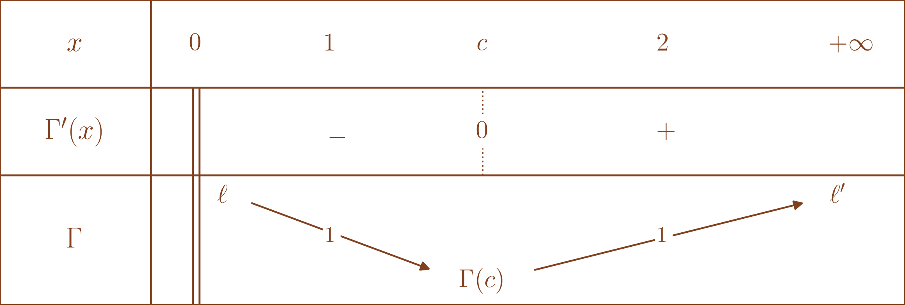
Remarquons qu’on a bien l’existence de \(\ell \in ]-\infty,+\infty]\) et \(\ell' \in ]-\infty,+\infty]\) par monotonie de \(\Gamma\) sur les deux intervalles.
Pour déterminer \(\ell',\) remarquons que pour tout \(n \in \mathbb{N}^{\star},\) \(\Gamma(n+1) =n! \leq \ell'\) donc \(\ell' = +\infty.\)
De plus, pour tout \(x > 0,\) \(\Gamma(x) = \frac{\Gamma(x+1)}{x}\) donc en faisant \(x \xrightarrow{} 0^+,\) on en déduit \(\ell = \underset{x \to 0^+}{\lim}\text{ } \frac{\Gamma(1)}{x} = \underset{x \to 0^+}{\lim}\text{ } \frac{1}{x} = +\infty.\) On a même \(\Gamma(x) \underset{x\to 0^+}{\sim} \frac{1}{x}.\)
Finalement, on en déduit le graphe ci-dessous.
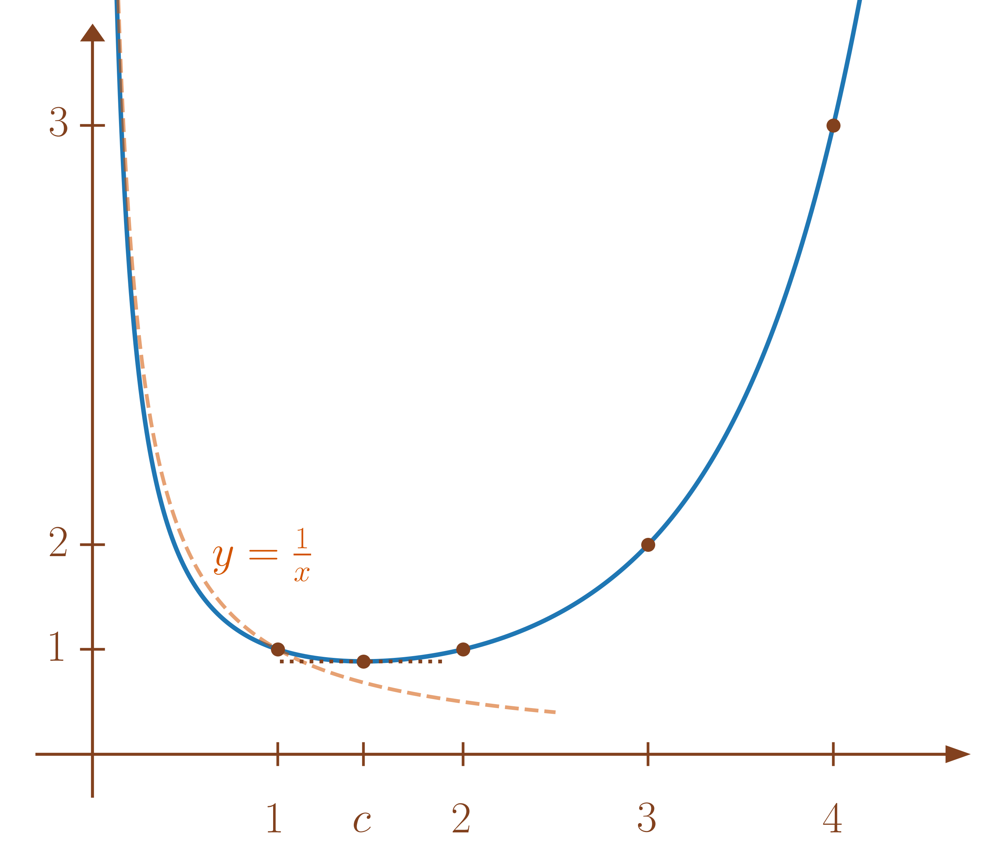
On considère de nouveau la transformée de Laplace d’une fonction (voir l’exercice [exoc:premier_exo_Laplace]). Soit \(f : \left]0,+\infty\right[ \to \mathbb{C}\) continue par morceaux, on pose \[A = \left\{x \in \mathbb{R}/ t > 0 \mapsto e^{-xt}f(t) \text{ est intégrable sur $\mathbb{R}^{+\star}$}\right\},\] on suppose \(A \neq \emptyset\) et on rappelle que \(A\) est un intervalle non majoré de \(\mathbb{R}.\)
On pose \(\begin{array}{lllll} L_f & : & A & \to & \mathbb{C} \\ & & x & \mapsto & \int_0^{+\infty} e^{-xt}f(t)dt \end{array} .\)
Montrer que \(L_f\) est de classe \(\mathscr{C}^\infty\) sur \(\mathring{A}.\)
On considère la transformée de Laplace de \(f : t \in \mathbb{R}^{+\star}\mapsto \frac{\sin t}{t}.\)
Déterminer \(A.\)
Déterminer une expression de \(L_f\) à l’aide de fonctions usuelles.
Indication : Dériver \(L_f.\) On rappelle aussi \(L_f(x) \xrightarrow[x \to +\infty]{} 0.\)
En déduire la valeur de \(\int_0^{+\infty} \frac{\sin t}{t}dt,\) que l’on appelle l’intégrale de Dirichlet.
On pose \(\begin{array}{lllll} g & : & A \times \mathbb{R}^{+\star} & \to & \mathbb{R} \\ & & (x,t) & \mapsto & e^{-xt}f(t) \end{array} .\) Montrons que \(L_f\) est de classe \(\mathscr{C}^\infty\) sur \(\mathring{A}\) à l’aide du théorème de dérivation des intégrales à paramètres (Théorème [thm:derivation_infini_fois_integrale_a_parametres]).
Par hypothèse, pour tout \(x \in \mathring{A} \subset A,\) \(t \in \mathbb{R}^{+\star}\mapsto e^{-xt}f(t)\) est intégrable.
Pour tout \(t \in \mathbb{R}^{+\star},\) \(x \in \mathring{A} \mapsto e^{-xt}f(t)\) est de classe \(\mathscr{C}^\infty\) avec pour tout \(x \in \mathring{A},\) \(p \in \mathbb{N},\) \(\frac{\partial^p}{\partial x^p} f(x,t) = \left(-t\right)^p e^{-xt}f(t).\)
Soit \([c,d] \subset \mathring{A}\) alors pour tout \(x \in [c,d]\) et \(t \in \mathbb{R}^{+\star},\) \[\left|\frac{\partial^p}{\partial x^p} f(x,t)\right| = {t}^p e^{-xt}\left|f(t)\right| \leq {t}^p e^{-ct}\left|f(t)\right|.\] Montrons que \(\varphi_p: t > 0 \mapsto {t}^p e^{-ct}\left|f(t)\right|\) est intégrable.
En 0, \(\varphi_p(t) =\underset{t\to 0}{o} \left(e^{-ct}f(t)\right)\) et \(c \in A\) donc \(t \mapsto e^{-ct}f(t)\) est intégrable en \(0\) et \(\varphi_p\) aussi.
En \(+\infty,\) Comme \(c \in \mathring{A},\) il existe \(\eta > 0\) tel que \(c-\eta \in A.\)
On a donc pour \(t > 0,\) \(\varphi_p(t) = e^{-\eta t}{t}^p e^{-(c-\eta)t}\left|f(t)\right|.\)
Or, \(e^{-\eta t}{t}^p \xrightarrow[t \to +\infty]{} 0\) par croissances comparées.
Donc \(\varphi_p(t) = \underset{t\to +\infty}{o}\left(e^{-(c-\eta)t}\left|f(t)\right|\right)\) avec \(c-\eta \in A\) donc \(t \mapsto e^{-(c-\eta)t}f(t)\) est intégrable en \(+\infty\) et \(\varphi_p\) aussi.
On en déduit que \(L_f\) est de classe \(\mathscr{C}^\infty\) sur \(\mathring{A}\) avec pour tout \(p \in \mathbb{N},\) \[\forall x \in \mathring{A}, L_f^{(p)}(x) = \int_0^{+\infty} \left(-t\right)^p e^{-xt}f(t)dt\]
Pour \(x > 0,\) \(e^{-xt}\frac{\sin t}{t} \underset{t\to 0}{\sim} 1.\)
De plus, pour \(t > 0,\) \(\left|e^{-xt}\frac{\sin t}{t}\right| \leq \frac{e^{-xt}}{t} = \underset{t\to +\infty}{o}\left(\frac{1}{t^2}\right)\) par croissances comparées.
Pour \(x = 0,\) \(t \mapsto e^{-0t}f(t) = f(t)\) n’est pas intégrable (voir l’exemple [exoc:semi_CV_sin_sur_talpha]).
On en déduit donc \(A = \mathbb{R}^{+\star}.\)
Par ce qui précède, \(L_f\) est de classe \(\mathscr{C}^1\) sur \(\mathbb{R}^{+\star}\) avec pour tout \(x > 0,\) \[\begin{aligned} L_f'(x) & = -\int_0^{+\infty} te^{-xt}\frac{\sin t}{t}dt \\ & = -\int_0^{+\infty} e^{-xt}\sin tdt \\ & = -\int_0^{+\infty} \mathop{\mathrm{Im}}\left(e^{(i-x)t}\right)dt \\ & = -\mathop{\mathrm{Im}}\left(\int_0^{+\infty} e^{(i-x)t}dt \right) \\ & = -\mathop{\mathrm{Im}}\left(\left[\frac{e^{(i-x)t}}{i-x}\right]_0^{+\infty}\right) \\ & = \mathop{\mathrm{Im}}\left(\frac{1}{i-x}\right) \text{ car $\left|e^{(i-x)t}\right| = e^{-xt} \xrightarrow[t \to +\infty]{} 0$ car $x > 0,$} \\ & = \mathop{\mathrm{Im}}\left(\frac{-i-x}{x^2+1}\right) \text{ en multipliant par la quantité conjuguée,} \\ & = -\frac{1}{1+x^2} \\ & = -\mathop{\mathrm{Arctan}}'(x). \end{aligned}\]
On en déduit, en primitivant, qu’il existe \(C \in \mathbb{R}\) tel que pour tout \(x > 0,\) \(L_f(x) = C-\mathop{\mathrm{Arctan}}(x).\)
Or, \(L_f(x) \xrightarrow[x \to +\infty]{} 0\) et \(\mathop{\mathrm{Arctan}}(x) \xrightarrow[x \to +\infty]{} \frac{\pi}{2}\) donc \(C = \frac{\pi}{2}\) et pour tout \(x > 0,\) \[L_f(x) = \frac{\pi}{2}-\mathop{\mathrm{Arctan}}(x).\]
Par ce qui précède, \(L_f(x) \xrightarrow[x \to 0]{} \frac{\pi}{2}-\mathop{\mathrm{Arctan}}(0) = \frac{\pi}{2}.\)
Il resterait à voir si
\(\underset{x \to 0}{\lim}\text{ }L_f(x) = \underset{x \to 0}{\lim}\text{ } \int_0^{+\infty} e^{-xt}\frac{\sin t}{t}dt \overset{??}{=} \int_0^{+\infty} \underset{x \to 0}{\lim}\text{ }e^{-xt}\frac{\sin t}{t}dt = \int_0^{+\infty} \frac{\sin t}{t}dt.\)
Malheureusement, la convergence dominée échoue (à cause de la non-intégrabilité de \(t \mapsto \frac{\sin t}{t}\)).
Considérons une primitive \(\Phi\) de \(t >0 \mapsto \frac{\sin t}{t}\) sur \(\mathbb{R}^{+\star}.\)
D’une part, \(\int_0^{+\infty} \frac{\sin t}{t}dt = \underset{x \to +\infty}{\lim}\text{ } \Phi(x) - \underset{x \to 0}{\lim}\text{ } \Phi(x).\)
D’autre part, en procédant à une intégration par parties pour calculer \(L_f(x) = \int_0^{+\infty} e^{-xt} \frac{\sin t}{t}dt\) avec \(u,v\) définies pour \(t \in \mathbb{R}^{+\star}\) par
\(\left\{ \begin{array}{ll} u(t) & = e^{-xt} \\ v(t) & = \Phi(t)\\ \end{array}\right. \Longrightarrow \left\{ \begin{array}{ll} u'(t) & = -xe^{-xt}\\ v'(t) & = \frac{\sin(t)}{t} \\ \end{array}\right..\) Vérifions l’existence de \(\left[u(t)v(t)\right]_0^{+\infty}.\) On a \(\Phi(t) e^{-xt} \xrightarrow[t \to +\infty]{} \underset{x \to 0}{\lim}\text{ } \Phi(x).\) Puis, \(u(t)v(t) = \Phi(t) e^{-xt} \xrightarrow[t \to 0]{} 0\times \underset{x \to +\infty}{\lim}\text{ } \Phi(x) = 0\) donc \(\left[u(t)v(t)\right]_0^{+\infty}\) existe et vaut \(-\underset{x \to 0}{\lim}\text{ } \Phi(x).\)
On en déduit alors que pour \(x > 0,\) \[L_f(x) = -\underset{x \to 0}{\lim}\text{ } \Phi(x) +\int_0^{+\infty} xe^{-xt} \Phi(t)dt.\]
Puis, en posant \(u = xt\) dans l’intégrale, on a \[L_f(x) = -\underset{x \to 0}{\lim}\text{ } \Phi(x) +\int_0^{+\infty} e^{-u} \Phi\left(\frac{u}{x}\right)du.\]
Pour conclure, montrons maintenant \(\int_0^{+\infty} e^{-u} \Phi\left(\frac{u}{x}\right)du \xrightarrow[x \to 0]{} \int_0^{+\infty} e^{-u} \left( \underset{x \to +\infty}{\lim}\text{ } \Phi(x)\right)du = \underset{x \to +\infty}{\lim}\text{ } \Phi(x)\) à l’aide du théorème de convergence dominée (généralisé, Théorème [thm:CV_generalisée]).
Pour tout \(u \in \mathbb{R}^{+\star},\) \(e^{-u} \Phi\left(\frac{u}{x}\right) \xrightarrow[x \to 0]{} e^{-u} \left( \underset{x \to +\infty}{\lim}\text{ } \Phi(x)\right).\)
Pour tout \(u \in \mathbb{R}^{+\star},\) pour tout \(x \in \mathbb{R}^{+},\) \[\left|e^{-u} \Phi\left(\frac{u}{x}\right)\right| \leq \left\|\Phi\right\|_{\infty,\mathbb{R}}e^{-u}\] avec \(u \in \mathbb{R}^{+}\mapsto e^{-u}\) qui est intégrable.
Reprécisons que \(\Phi\) est bornée car elle converge en \(0,\) converge en \(+\infty\) et est continue.
On en déduit donc bien \(\int_0^{+\infty} e^{-u} \Phi\left(\frac{u}{x}\right)du \xrightarrow[x \to 0]{} \int_0^{+\infty} e^{-u} \left( \underset{x \to +\infty}{\lim}\text{ } \Phi(x)\right)du = \underset{x \to +\infty}{\lim}\text{ } \Phi(x).\)
Ce qui donne \(L_f(x) \xrightarrow[x \to +\infty]{} \underset{x \to 0}{\lim}\text{ } \Phi(x)-\underset{x \to 0}{\lim}\text{ } \Phi(x) = \int_0^{+\infty} \frac{\sin t}{t}dt.\)
On a donc finalement, \[\boxed{\int_0^{+\infty} \frac{\sin t}{t}dt = \frac{\pi}{2}.}\]